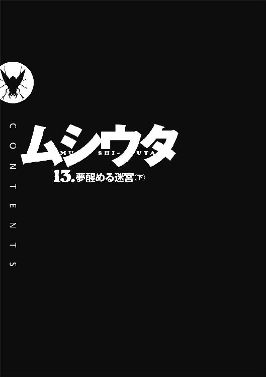

| ムシウタ 13.夢醒める迷宮（下） | |
| 岩井恭平 | |
| KADOKAWA / 角川書店 (2013) | |
ムシウタ
13．夢醒める迷宮（下）
岩井恭平
角川スニーカー文庫
本作品の全部または一部を無断で複製、転載、配信、送信したり、ホームページ上に転載することを禁止します。また、本作品の内容を無断で改変、改ざん等を行うことも禁止します。
本作品購入時にご承諾いただいた規約により、有償・無償にかかわらず本作品を第三者に譲渡することはできません。
本作品を示すサムネイルなどのイメージ画像は、再ダウンロード時に予告なく変更される場合があります。
本作品は縦書きでレイアウトされています。
また、ご覧になるリーディングシステムにより、表示の差が認められることがあります。

ムシウタ 13.夢醒める迷宮（下） ＣＯＮＴＥＮＴＳ
口絵・本文イラスト／るろお
口絵・本文デザイン／田畑善行＋design CREST
プロローグ 0.00 The others
〝虫〟という超常の存在がいる。
十数年前に突如として現代に現れたそれは、少年や少女に取り憑くとされた。夢──こうありたい、こうなりたいという願いを喰らう代わり、宿主に様々な力を与えるのだ。外見が昆虫に似ていることから、〝虫〟と呼ばれている。
〝虫〟と、それに取り憑かれた虫憑きという存在は、明るみに出ていない。人々の間でまことしやかに噂され、嫌悪されながらも、政府は一貫して存在を否定し続けてきた。
だが、その情勢が変わろうとしていた。
虫憑きを生むとされる、〝始まりの三匹〟。
そのうちの一つ、〝浸父〟によって一つの都市が機能停止状態に追いやられたのである。
「もうすぐタイムリミットの48時間ですね」
日本の中枢機能を担う都市、赤牧市。
〝浸父〟暴走の傷跡を残す市内のドーム施設に、特別環境保全事務局の臨時作戦本部は設置されていた。
結集した虫憑きたちによって、〝浸父〟を倒すことはできた。
しかし今や特別環境保全事務局、ひいては国そのものが、〝浸父〟に勝る脅威に晒されている。
「〝Ｃ〟殲滅作戦......三つの作戦の経過が気になります」
特別環境保全事務局の副本部長、魅車八重子はやんわりとした口調で部下に問いかけた。
「各作戦との通信状態は？」
ドーム内に設営された天幕内で、通信機器と向かい合う少年少女たちが振り向いた。
「先ほどまで不通でしたが、たった今、不安定ながら一部回復しました」
顔を覆う機械的なゴーグルを装備した彼らは、虫憑きである。特別環境保全事務局は捕らえた虫憑きを訓練し、手駒とすることで在野の虫憑きを捕獲する政府機関である。
「作戦１と作戦２から通信入っています！ スピーカーに繫ぎます！」
白コートたちが通信機器に向き直った。
「彼らならば、必ず期待に応えてくれるでしょう」
魅車八重子は、優しく微笑んだ。目元のホクロがわずかに動く。
作戦１、作戦２に投入した虫憑きたちは、虫憑きの中でも精鋭である。彼女が心から愛する彼らならば、間違いなく自らの使命を果たしてくれるだろう。
「いずれにしろ、彼らの任務が一つでも失敗すれば──」
スピーカーから、雑音とともに苦しげな息遣いが聞こえた。
「〝Ｃ〟によって、この国は根底から破壊されるでしょう」
破滅を告げる魅車の声に続いて、ついに各作戦実行部隊からの報告が告げられた。
作戦１。
ある虫憑きを倒すために、特別環境保全事務局の精鋭たちが集められた。
火種二号局員〝照〟を筆頭とする決死隊は、目的地点に到達することに成功。
そこは本来は特別環境保全事務局の中央本部がある施設だった。地下要塞とも呼ばれる広大な地下施設の最下層に、その化け物はいた。
超種一号、〝Ｃ〟。
虫憑きでありながら、生みの親ともいえる〝浸父〟の力を吸収した少女。電力や電子情報を操る能力を魅車八重子に利用された結果、強大すぎる力に吞み込まれ、それは今もなお進化しつつある。
一糸まとわぬ姿で透明なベッドに横たわる〝Ｃ〟のもとに、決死隊は辿り着いた。
だが、そんな〝照〟たちを出迎えたのは──。
「そ、そんな──」
満身創痍の〝照〟は、〝Ｃ〟を道連れに自爆の覚悟までしたというのに。
彼女たちの視界を埋めたのは、〝虫〟を殺されて感情を失った欠落者と、過去に殉死したはずの死者の群れだった。
蘇生者──。
〝Ｃ〟が寝床としている透明のベッド──〝寝台〟に収められた夢を使い、再び虫憑きとしての力だけを取り戻した者たちである。
「さ......」
〝照〟の双眸から、涙が溢れ出した。
彼女だけではない。決死隊たちの誰もが戦意を喪失し、地面に膝をついた。
とっくに体力も気力も使い果たしていたのだ。そんな彼らに、この数の虫憑きに立ち向かう力など残っているはずもない。
その上──。
寝台に横たわる〝Ｃ〟の姿が一瞬、かき消えた。すぐに再び現れた姿も、ノイズ混じりで安定していない。
最終目標である〝Ｃ〟の実体は、すでにこの場に存在しない──。
〝Ｃ〟殲滅部隊の指揮官である〝照〟は、自らのゴーグルに手を当てて、
「作戦１......失敗──」
そう報告する他になかった。
作戦２。
特別環境保全事務局における最強の虫憑き、火種一号〝かっこう〟が欠落者になった。
そのため新たなリーダーとなる〝眠り姫〟を呼び起こす必要が生じた。
〝眠り姫〟覚醒の役割を与えられたのは──。
「ハルキヨぉっ！」
比類なき強さと傍若無人を誇る、異種一号の虫憑きハルキヨ。
炎の魔人とも呼ばれ、他の虫憑きからも恐れられる男が──か細い少女の手によって、宙づりにされていた。
ハルキヨの首を摑み、持ち上げているのは白い肢体を晒した少女である。
身体を隠す髪以上に長い、銀色の槍を持つ少女。その人物は過去の戦いによって眠りについた虫憑きであり、最後の一号指定とされた〝眠り姫〟──アリス。
ぼんやりとした顔つきのアリスは、銀色に輝く模様を全身に浮かべていた。
「そんな......」
ハルキヨの連れである久瀬崎梅は、呆然とその光景を見つめた。
〝眠り姫〟は味方のはずだ。
それなのに自分を迎えに来た魔人をあっさりと倒し、無感情に見つめている。梅のそばでは彼女によって重傷を負わされた仲間の少女が、血の泡を吹いていた。
さらに〝眠り姫〟が眠っていた銀色の繭の中からは──。
ずるり、と。
小さな黒い粒の群れが這い出しつつあった。
「──」
梅の背筋を、ゾクリと冷たいものが走った。
アリスが眠りについた理由──それは〝不死〟だった。
決して死なないという、悪魔のような〝虫〟を封印するためである。
よく見ると繭から這い出したのはただの粒ではなく、黒いクマムシの大群だった。
「〝不死〟の〝虫〟が......」
藪を突いたらヘビ、どころではない。
自分たちは決して触れてはいけないものに触れ、アリスと〝不死〟という恐るべき災厄を解き放ってしまったのだと思い知る。
頼りの魔人は──もう、いない。
梅は逃れられない絶望に押し潰されながら、
「さ、作戦２......」
背後で、顎に無精髭を生やした青年が硬い声を漏らすのを聞いた。
「失敗──」
魅車八重子が待機する天幕に、二つの声が響いた。
『さ、作戦１......失敗......』
『さ、作戦２......失敗......』
天幕内に、張り詰めた沈黙が落ちた。
三つの作戦のうち、二つが失敗に終わった。
誰一人、言葉を発することができない。
『だ、脱出を──』
『どこに逃げるというのだ！ 退路は妖精だらけだぞ......！』
『う、うあああああっ！』
『こんなのウソだ、ハルキヨぉぉおおおっ！』
『......魔女が死にそう......』
『ね、〝眠り姫〟がこっちを見て──』
『ファッキュー！』
スピーカーから響くのは、怒号と悲鳴のみ。
天幕にいるのは魅車八重子とその部下、それに各支部の支部長たち。さらに政府省庁の代表である副大臣の一行だ。
その誰もがスピーカーから伝わる絶望を感じ取り、呆然としていた。
「う......ああああ......」
真っ先に膝を折ったのは、副大臣だった。頭を抱え、震え出す。
彼はこの後、上層部に事実を報告せざるを得ないだろう。
もう、打つ手がありません──と。
脂汗を流して震える副大臣を見下ろし、魅車はにっこりと優しく微笑んだ。
「このような結果になって残念です、副大臣」
副大臣が、目を丸くして魅車を見上げた。
この期に及んで笑みを崩さない魅車に対し、各支部の支部長たちも副大臣とそっくりの顔で彼女を凝視する。
「残念......だと──き、貴様──」
「こうなった以上、残る作戦３に望みを託しましょう」
見る者を凍りつかせる〝鎖の笑み〟で、魅車は彼らの視線を受け流す。
作戦１、作戦２はともに失敗に終わった。
新たに誕生した超種一号〝Ｃ〟に対抗しうる、残る一号指定たち──。
レイディー・バードはすでに亡く、〝かっこう〟もまた欠落者になった。
ハルキヨは〝眠り姫〟によって倒され、その〝眠り姫〟自身もまた成虫化しつつある。
残された希望は──たった一人だけとなった。
「私の愛しい〝ふゆほたる〟ならば、きっと世界を救ってくれるでしょう」
電子音が響き、通信機器を前にした部下が声を上げた。
「作戦３の実行部隊から、通信が入っています！ スピーカーに繫ぎます！」
緊張する天幕内。
ザザッ、というかすかなノイズに続いて、誰かの声が響いた。
『さ、作戦３......』
誰もが息を吞む中、魅車八重子だけは冷静だった。
たった五人しかいなかった一号指定の中でも、〝ふゆほたる〟は異質だった。
あの少女は、揺るがない──。
かつて特別環境保全事務局を壊滅間近に追いやった時や、復活した後も同じ。
彼女の力は、何人たりとも止めることができない。
唯一、それができた〝かっこう〟も、すでにいない。
そう──〝かっこう〟と呼ばれた少年、薬屋大助はもういないのだ。
『しっ──』
作戦３の報告を聞きながら、魅車八重子は笑みを深めた。
1.00 OPS3 Part.1
杏本詩歌率いる〝むしばね〟が、〝Ｃ〟殲滅作戦の一つを担ってから数時間が経過していた。
残された時間は、40数時間。
そのタイムリミットすらも、作戦２の進行次第でどうなるか分からない。なぜならハルキヨが〝眠り姫〟を覚醒させる前に、〝大喰い〟を倒さなければならないからだ。
〝Ｃ〟が〝浸父〟に続き、〝大喰い〟を取り込んでさらに進化するのを防ぐため。
さらには〝不死〟の虫憑きが蘇り、再び〝大喰い〟が不死身になるのを防ぐため。
詩歌たちが挑む使命は、最も困難な作戦といえた。
「あっ」
赤牧市市内にある、最新鋭の設備を整えたシネマシアター。
〝むしばね〟の潜伏場所でもある建物から退出しようとした時だった。
詩歌は階段でつまずいてしまった。とっさに壁に手を当てて転ばずに済む。
「大丈夫か？」
大きなゴーグルで顔を覆った男が、後ろから声をかけてきた。特別環境保全事務局の戦闘員でもある〝兜〟だ。
作戦３は〝むしばね〟を中心とした虫憑きで遂行する。しかし特環とも共闘関係を保つに当たって、連絡役として〝兜〟が詩歌たちの下に派遣されていた。
「は、はい」
振り向くと、〝兜〟のゴーグルに詩歌の顔が映り込んだ。
よく言われるが、十七歳とは思えない童顔が悩みの一つだ。せめて髪を伸ばして大人っぽく見せようと試みるものの、あまり効果はない。
「これから大事な作戦にとりかかるんだから、しっかりしてよね」
赤瀬川七那が詩歌をからかった。アルファベットの〝Ｊ〟を逆さにしたようなステッキを持つ、詩歌と同年代の少女である。このシネマシアターの所有者であり、〝むしばね〟の後援者でもある赤瀬川グループという大企業の会長でもある。
「その作戦を引っ張るんだから、リーダーらしくしてよね。やはっ」
リーダー。
その言葉に、心臓の鼓動が高鳴った。
七那は冗談めいた口調で言ったが、決して冗談ではないのだ。
ここにいる虫憑き全員の命が懸かっているのだ。
いや、もしかしたら、この国そのものの命運も──。
「う、うん」
「ちょっといい？ スノウ」
歩きながら、一人の少女が詩歌に歩み寄った。細身の長身とストレートの長髪が日本人形を想像させる。ハレンシスという〝むしばね〟の幹部の一人である。
「私、これから各地を回ろうと思うの」
「え？」
「〝むしばね〟が助けた虫憑きの中には、まだ戦力になる人材がいるわ。潜伏先を回って、協力してもらえるよう説得したいのよ。〝大喰い〟と戦うためには、戦力はいくらあっても足りないわ」
「た、たしかに」
詩歌は同意するが、ハレンシスはじっと彼女を見つめたまま動かない。
「......？ あの？」
「行っていいのかしら？」
許可を待っていたようだ。
いきなり判断を迫られ、詩歌は無意識に周りを見回した。
目が合ったのは、となりにいた少年だった。
「お前が決めろ」
詩歌のボディガードを務める少年、アイジスパが言った。鋭い目つきとそっけない口調で誤解されがちだが、本人に悪意はない。トレードマークであるヘアバンドは、今日は迷彩柄のものを使っていた。
「そ、それじゃあ、その──お願いします」
「了解」
頷いて、ハレンシスが詩歌のそばを離れていった。
許可してよかったんだよね......？
心の中で、そんな疑問が浮かんだ。
本来、詩歌は人を率いるような人間ではない。だが今は亡き親友のあとを継いで〝むしばね〟のリーダーとなった以上、どうしても判断が必要となる。
その判断が正解か、それとも不正解なのか。
常に不安がつきまとうが、この状況ではますます重要な判断を迫られるだろう。そんな時にちゃんと正解を選べるか不安だ──とは、間違っても表に出すことはできない。
「──これから、αさんのところに向かうんですよね？」
心中の不安を隠すために、詩歌は言った。
シネマシアターがあるビルから出たところだ。
そこには〝むしばね〟の虫憑きたちと、それに〝兜〟ら数名の特環局員が集まっていた。七那が用意してくれた数台の移動用バスに次々と乗り込んでいく。
「でも、私......αさんがどこにいるか知らないんですけど」
「私も知らされていない」
詩歌の言葉に、年長者の〝なみえ〟が頷いた。
〝なみえ〟は特別環境保全事務局に所属していた高位の虫憑きだが、今は詩歌を追って〝むしばね〟に身を置いている。力強い眼差しとしなやかな体つきが、豹や虎といった大型の猫科動物を連想させる女性だ。
「下手にαの居場所を知る者が多いと、それを狙う人間が現れるからな。──一度、カノン様とかいう教団に奪われた時のように」
詩歌たちのそばに、白いリムジンが停車した。
七那がリムジンに近づくと、ドアが開いた。七那の秘書が車内にいる。
「知ってるのは、アタシだけよ。αは眠ったままで目を覚まさないけど、身体は衰弱しているわ。特注で作らせた治療用の施設があるのよ」
七那がそう言って、横を見た。
エキゾチックなワンピースに身を包み、ストラップだらけの携帯電話を握りしめた少女がギクリと顔を強ばらせた。ルシフェラという〝むしばね〟の幹部である。
いや──幹部だった、と言ったほうが正しいかもしれない。
「何者かのスパイさんの取引条件は、αに引き合わせることよね？ 眠ったままじゃ意味がない、なんて後になってからゴネないでよ？」
「は、はい。それで大丈夫ですー......」
居心地悪そうに頷くルシフェラ。
「αさんにさえ会えれば、〝大喰い〟の餌──海老名夕さんを引き渡しますー」
詩歌は誰にも気づかれないよう、こっそりと唇を嚙んだ。
ルシフェラの言う海老名夕とは、詩歌の数少ない友人の一人である。
〝大喰い〟の餌──いつ、どこに現れるかも分からない〝始まりの三匹〟をおびき出すための囮として、詩歌の友人を利用する。
他に方法がないとはいえ、抵抗がないはずがなかった。
「夕ちゃん......」
ぽつり、と呟く。
今は私情よりも、作戦を成功させることを優先させるべきだ。それがリーダーである詩歌の務めであり、正解だと分かっている。
だが、それでも──気を抜いたら、感情的で弱い自分が出てしまいそうだ。
「どうしたの、詩歌？ 行くわよ」
リムジンの車内から七那に促され、詩歌はハッとした。
「う、うん」
詩歌に続き、〝むしばね〟の幹部たちもリムジンに乗り込んだ。
リムジンとバスがシネマシアターの前から発車した。
「αのことは特環には明かさずにおこう」
縦に長いリムジンの車内で、〝なみえ〟が言った。
「えっ、で、でも」
一同が頷く中、詩歌はおずおずと言う。
「特環とは協力しあう関係になったんですから、隠し事は......」
「バカね」
七那が呆れ顔をした。
「αは〝虫〟誕生の手がかりなのよ？ それが〝むしばね〟の手の内にあると知って、あの魅車八重子が放っておくと思う？ 後ろからついてきてる〝兜〟とやらには、〝大喰い〟を倒すための作戦の一つだとでも言っておけばいいの」
「その通りですよー。最悪の事態を防ぐために協力せざるを得ないとはいえ──」
ルシフェラがいつもの口調で軽口を叩こうとして、我に返った。自分を見る幹部たちの視線に気づき、気まずそうに続ける。
「あ、あの女は、それすらも利用して何を仕掛けてくるか分からないですから......」
「そうですね......」
詩歌は納得する。危うく不正解を選んでしまうところだった。
〝始まりの三匹〟は恐ろしいし、それを取り込もうとする〝Ｃ〟は──以前、相まみえた時とは違って、もっと恐ろしい存在といえる。
だが、それにも増して魅車八重子という女は──異質な存在だった。
詩歌は直接、魅車と顔を合わせたことがあった。その時、一目で自分には理解できない人間だと分かった。周囲の人間からも、あれがどれだけ恐ろしい女であるか嫌というほど聞かされている。
長年、敵同士だった特環と〝むしばね〟。
共通の敵に立ち向かうために協力することとなった両者だが、真に理解しあうにはまだ時間を要するということなのかもしれない。
理解しあう時間が必要になった原因の一つは──。
〝かっこう〟の脱落も関係している。
詩歌と同じ夢を持ち、同じ一号指定である虫憑き。
彼が戦い半ばで舞台を去ったことは、詩歌に拭いようのない影を落としていた。
「──着いたわよ」
数十分ほど走ったところで、七那が悪戯っぽい笑みを浮かべた。
リムジンが停車する。
「え......」
車から降りて、詩歌は驚きの声を上げた。
広い敷地の中に、いくつもの建物が立ち並んでいた。
そのほとんどが、奇抜な形をしていた。ピラミッドのように三角錐の屋根をした建物がある一方で、巨大な真円の球体が鎮座していたりもする。
構内には芝生の間に歩道があり、ところどころにオブジェが置かれていた。人形の模型が絡み合ったものもあれば、ブロックを不規則に積み上げたものもある。
はじめて来る場所だが、視界に映る光景を何と呼ぶべきかは何となく分かった。
「美術館......？」
詩歌の呟きは、その場にいる〝むしばね〟全員の代弁だったに違いない。
七那がクルリとステッキを回し、詩歌を振り返った。
「ようこそ、赤瀬川グループが管理する新鋭ミュージアムへ」
優雅にお辞儀をして、ニヤリと笑う。
「ここなら、αを隠してるとは誰も思わないでしょ？」
1.01 OPS3 Part.2
美術館は、休館日のようだった。
静まり返った館内に、人気はない。そもそも美術館がある赤牧市全体に避難勧告が出されているのだ。のんびり芸術品を鑑賞する人間などはいないだろう。
かといって、一人も人影がないわけでもなかった。
制服を着た警備員が、いたる場所を巡回しているのだ。避難勧告に乗じた窃盗を警戒しているといえば聞こえはいいが、制服の上からでもわかる胸部のふくらみは銃器を隠し持っているからだろう。法を無視してまで厳戒態勢を敷く理由が、ここにあるということだ。
「......」
狭い通路を警備員が歩いていた。制服を着ていなければプロレスラーにしか見えない大男である。その分厚い唇から漏れる息吹が感じられそうな、すぐ真横を──。
〝彼女〟たちは、すれ違った。
大柄の警備員は、彼女とその連れに目もくれない。
「......」
通路の角に監視カメラが設置されていた。
しかし彼女たちは、何事もなく下を通り過ぎる。
警報が鳴り響くことはない。
しばらく歩くと、広い空間が現れた。彼女はピンときて、連れに指示を出す。
視界が浮かび上がり、彼女たちは天井スレスレの位置を進んでいく。おそらく床に設置されているであろう重力感知センサーが、侵入者の存在を報せることはなかった。
「......」
まるで映画やマンガに出てくる怪盗だ、と彼女は自分のことを皮肉った。
そういう役柄も悪くない。
ただし狙いは芸術品ではないし、財宝でもない。
彼女は建物の構造や、警備員などの人員の配置を見て、目的のものを探す。彼女が探し求めるものが大きな電力とスペースを要することは分かっているのだ。館内にある発電設備から逆算したルートと、それを守る人間を配置する心理的要素から読み解いていくうちに、自然と目的地に辿り着くことができた。
外から見たら、円状の回廊に絵画を並べたギャラリーにしか見えないだろう。建物の周囲を小さな六角形の窓を連ねて覆った構造は、巨大な蜂の巣のようでもある。
しかし実際は広大な敷地の最も奥に配置され、観客を呼び込むための受付もない。
彼女たちは警備員たちの目をかいくぐり、蜂の巣に潜り込んだ。
地下一階。
長い回廊にある唯一の扉の前に、屈強の警備員が二人ついていた。
「......」
彼女は警備員の一人に接近し、手を伸ばした。
「うっ！」
「どうした？」
相棒の警備員が急にうずくまったのを見て、もう一人が怪訝そうな顔をする。
彼女は素早くその背後に回り込み、そいつにも手を伸ばした。
「あっ......！」
「──ここを開けなさい。そして外部から連絡があったら、問題なしと報告すること」
決して綺麗とは言えない、彼女のハスキーな声が回廊に響いた。
二人の警備員が顔を歪め、頭を抱えた。尋常ではない汗を流し、頭を抱える。
「ううぅっ......了解──」
「も、問題ない......ここは、問題ない......」
苦悶の表情を浮かべた警備員が、閉ざした扉のロック部分にカードを通した。
分厚い金属製の扉が開いた。
すかさず彼女たちは、内部に滑り込む。
「なんだ？」
中にいた作業服の男たちが、誰もいない扉を振り向く。
部屋の内部には、ぎっしりとモニターや計器盤、制御盤などの電子機器が並んでいた。彼女はそれらの機械が全て、何らかの観測装置であると分かる。
彼らが一体、何を観測しているのか。
その答えが、モニターに映し出されていた。
一見、それは穏やかな顔で眠る青年のように見える。
「おい、どうした？」
「何かあったのか？」
観測室の中にいたのは、作業服の男が三人。扉の向こうにいるはずの警備員に呼びかける彼らは、明らかに腕っぷしとは無縁の研究者肌である。
「うあっ......？」
「うぐっ！」
作業服が二人、顔を歪めて床に膝をついた。
彼女が残る一人に向かって手を伸ばすと、気配を感じたそいつが振り返った。
「なっ──」
相手からすれば、何もない空間から細い腕が突如現れたように見えただろう。
最後の作業服の男の背後に、深紅の輪郭が浮かび上がった。
紅い女王蜂。
実体のない小さな蜂が、鋭い針を男の首筋に突き立てた。
「うぅっ......！」
作業服の男が苦鳴とともに、うずくまる。
刺した相手の内に秘めた感情を増幅させ、理性を奪うというだけのつまらない能力だ。だがそれも使いようによっては、束の間の操り人形を作る便利な力となる。
「アタシたちを通しなさい。何の問題もないわ」
「な、何の問題も......ない......」
作業服の一人が、涎を垂らしながら機器を操作した。
観測室の奥にある扉が開いた。
彼女たちが扉をくぐると──そこに、巨大な台座が安置されていた。高等学校の体育館くらいありそうな空間が、台座を中心に機械によって埋め尽くされている。
巨大な生命維持装置だ。
台座の中には、一人の人物が横たわっていた。
青ざめた顔の青年である。首から下は機器に覆われて見えないが、顔つきはアジア系のように見えた。柔らかそうな髪は色素が薄く、唇も血色を感じさせない。
無色透明の青年。
思わずそんな感想を抱いてしまう人物は、その存在すらも希薄に感じられた。
「はじめまして」
目的のものを前にして、彼女とその一行はようやく正体を現した。
まず異形の怪物が姿を現し、風船のように膨らんだ二枚の翅を拡げる。その中から現れたのは、四人の少女だった。
「やっと会えたわね、くそったれの始原の虫憑きさん」
そう言って、彼女──菰之村茶深は、青年を見下ろした。小柄な体格と、毛先がハネた短い髪。縁なしの眼鏡をかけた眼つきは悪く、眼前にいる無色透明の人物とは対照的な欲望にまみれている。
茶深のとなりで、前髪の長い少女もまた青年を見下ろしていた。
「......こいつが、α......」
特別環境保全事務局の白いロングコートに身を包んだ少女、〝コノハ〟である。陰鬱な顔つきと口調の彼女は、ここまで茶深たちの姿を隠していた〝虫〟の宿主でもある。〝コノハ〟の〝虫〟は周囲から存在を隠す迷彩能力や、遠方の目標を見つける索敵能力に長けた〝虫〟である。
「詩歌さんを騙したみたいになっちゃったけど、大丈夫でしょうか......」
不安そうな顔で呟いたのは、茶深よりも小柄な少女だった。
少女の名前は、海老名夕。茶深や〝コノハ〟のように虫憑きでもない、正真正銘の一般人である。三つ編みにした髪と眼鏡が地味な印象の中学生である。
茶深は横目で夕を睨みつけた。
「〝ふゆほたる〟はともかく、あの赤瀬川七那がすんなり条件を飲むとはかぎらねーでしょーが。いざとなったらαを餌に、力ずくでアンタだけを奪いとることだってできるのよ。なんせ、こっちは戦闘能力がほぼゼロなんだから」
「し、詩歌さんは、ちゃんと約束を守ってくれるもん！」
夕が反論するが、茶深は取り合わない。
「まあね、何の関係もない場所に案内されて、〝むしばね〟に取り囲まれることも覚悟してたけど......本当にαの隠し場所まで連れてきてくれたのは感謝するわ。敷地内のどこに隠してるかまではバレないだろうって、タカをくくってたんでしょーけど」
〝むしばね〟には〝ふゆほたる〟の暴力と赤瀬川七那の財力という、恐るべき二つの力がある。
だからこそ茶深のような伏兵に対しては、油断をしているのだろう。かつてカノン教団という思わぬ勢力に出し抜かれたことがあったとはいえ、強者の驕りというものはそう簡単に拭えないものだ。
「今頃、ルシフェラと佐藤陽子が〝むしばね〟の気を引いてるはずよ。今のうちにαから引き出せるだけ情報を引き出してやるわ」
菰之村茶深は、驕らない。
特別環境保全事務局や〝むしばね〟、それにハルキヨという三強勢力とは比べものにならない、あくまで雑魚──せいぜい虫憑きの戦いの脇役であるとしっかり自覚している。
加えて茶深の下僕たちも、戦闘能力のない者たちばかりだ。
茶深たちは弱い。
弱いからこそ──それが武器となる。
「特環も〝むしばね〟もハルキヨも、今は〝Ｃ〟しか見えてないわ。その間にアタシたちがやらなきゃいけないことは、たくさんある......でも、それを差し置いても、コイツを放っておくわけにはいかないわ。〝虫〟の秘密──なぜ〝虫〟がこの世に生まれたのか、核心を摑んでやる......！」
いつか、主役の座を奪う──。
身の丈に合わない夢を抱いてしまった茶深は、自分のやり方でそれを叶える。
そのためならば誰でも騙すし、誰でも利用してみせる。
「......でも、αが目を覚まさないままじゃ、何も......」
「そんなことは分かってんのよ。──千晴！」
茶深は背後を振り返った。
四人の同行者のうち、最後の一人。鮎川千晴がそこに立っていた。
長い髪とスレンダーな体つきが見映えが良く、何より美人である。笑顔で立っているだけで街角であろうと舞台上であろうと、人々の目を引く華やかさがある少女だ。
いや──正確には、そんな少女だったというべきか。
「......」
無言で佇む鮎川千晴の表情は、かつてとはうって変わって生気がなかった。まるで〝虫〟を殺された虫憑き──欠落者のようだが、彼女は虫憑きではない。その首から下げたネックレスには、金色のリングがぶら下がっている。
「千晴！ 聞いてんのっ！」
千晴がぼんやりと顔を上げた。茶深の顔を見つめ返すが──ふいっ、と投げやりに視線をそらしてしまう。
「このっ......！」
「わあっ！」
茶深が思わず振りかぶった手に、慌てて夕が飛びついた。
「ぼ、暴力はダメです！ 千晴さんだってショックだったんですから......！」
「この期に及んで、まだ落ち込んでんじゃねーわよ！ いい加減、受け入れろっ！」
茶深は怒気も露わに言い放つ。
「〝かっこう〟は欠落者になった！ アンタの可愛い弟は戦いから脱落したのよ！ いい加減に現実を認めなさいよ！」
横を向いた千晴の瞳から、一筋の涙が零れた。
鮎川千晴は、一号指定の虫憑き〝かっこう〟の実の姉である。
同時に彼女は──かつて〝始まりの三匹〟の一つ、〝三匹目〟でもあった。
つまり〝かっこう〟を虫憑きにしたのは、千晴なのである。
「......んで......大助が......」
かろうじて聞き取れる呟きが、横を向いた千晴の口から漏れた。
「なんで......私じゃなくて......」
「この──クソ女ッ！」
一秒で、茶深の苛立ちが沸点に達した。
弟思いの千晴は、〝かっこう〟を虫憑きにしたことをずっと自責していた。彼が欠落者になったことで、それが手をつけられないレベルに達した。
〝かっこう〟脱落の報を聞いた千晴は、泣き叫んだりはしなかった。
ただ自責と自虐の世界に、完全に引きこもってしまったのである。
一切、動こうとしない。何も食べようとしない。会話もしない。──かろうじて自律神経が彼女を呼吸させているだけ、といった状態である。
「アンタの、このネックレスに〝三匹目〟がいるんでしょうっ！」
茶深は千晴の首に下げたネックレスを摑んだ。
「αがダメなら、〝三匹目〟......！ 〝虫〟が生まれた瞬間に居合わせた二つを引き合わせれば、その影響でどっちかが目覚めるかもしれない！ アタシはそれに賭けて、ここまでやって来たのよ！ 今さら何も起きませんでしたじゃ済まねーのよ！」
千晴は、茶深に目を向けようともしない。
「〝虫〟が生まれた秘密を知る存在が、目の前に二つもあるってのに......！ どっちも眠ったままなんて、間が抜けてるどころじゃねーわ！」
無気力な千晴に苛立ち、茶深は突き飛ばす。千晴がふらふらと後じさり、床にぺたんと尻餅をついた。夕が慌てて駆け寄る。
「ら、乱暴はやめてください！」
夕が千晴をかばう。
「どうして、いつも怒ってるんですか！ こんな時くらい優しくしてあげたって......！」
「優しくして勝てるなら、いくらでも優しくしてやるわよ！ でもアタシは一号指定や魅車みたいな化け物じゃねーの！ 怒って血の巡りでも良くしなけりゃ、ヤツらを出し抜くなんてできっこないのよ！ そうじゃなくても、このままじゃ魅車の思い通りになって取り返しのつかねーことになりかねないってのに！」
「えっ？ 魅車さんの思い通りって──」
夕が不思議そうな顔をした時だった。
監視室に繫がる扉から、作業服の男が一人、ふらりと姿を現した。
「ん？ ちょっと、アンタ。ここに入ってこいなんて誰も命令してねー──」
呼び止める茶深の前で、作業服の男が立ち止まった。
「ううぅうっ──」
茶深の能力によって理性を奪われた男は、先ほどと同じように苦しげだった。大量の汗を流し、苦悶の表情で頭を抱えている。
目元からも涙が溢れ出し、その涙が──。
バチッ、と。
青白い火花を散らせた。
「は？」
眉をひそめる茶深。
男の涙から、青白い放電現象が弾けた。
それは一瞬にして空中に集まり、小さな蝶々の形となる。
その蝶々とは──。
「シーアゲハ──」
茶深は呆然と呟いた。
小さな翅にアルファベットの〝Ｃ〟の文字を浮かべた蝶々である。
「こいつ──〝仕込まれて〟やがったのか──」
茶深は自分の思い違いに、今さらながら気づいた。
「罠を仕掛けてたのは〝むしばね〟じゃなくて──」
羽ばたくシーアゲハが、生命維持装置に触れた。
直後、αが横たわる空間を、青白い閃光が包んだ。
「くうっ......！」
「きゃあっ！」
「うっ......！」
戦闘力がない茶深たちは、抵抗する術を持たなかった。閃光に目を眩ませ、顔を手で覆うのが精一杯だった。
閃光と衝撃は、一瞬だった。
数秒が経ち、茶深は恐る恐るまぶたを開く。
「......？」
死を覚悟したが、自分の身体に痛みはなかった。閃光の残像が残る目で確認しても、自分の身体には傷一つなかった。彼女の下僕たちも同じである。
茶深はハッとして、千晴のネックレスを見た。
「......〝三匹目〟！」
超種一号となって人格を失った〝Ｃ〟は、〝始まりの三匹〟を取り込もうとしている。
ならば〝Ｃ〟の狙いは、〝三匹目〟に違いない──と思ったのだが。
「......」
千晴は、あいかわらずぼんやりと虚空を見つめているだけだった。
その首にあるネックレスも、先ほどと変わった様子は見当たらない。
「い、一体、どうなっ──」
無意識に漏らした茶深の声にかぶさるように、けたたましい警報が鳴り響いた。
「αの生命維持装置か......！」
先ほどの電撃が生命維持装置に影響したようだ。αの穏やかな寝顔を見る限り、深刻なダメージはなさそうだが、警報装置が反応してしまった。
「αを狙ったわけでもなさそうね......？ そもそも罠を仕込んでたなら、やろうと思えばいつでもαを好きにできたわけだし──」
〝Ｃ〟は何のためにここの罠を仕込み、たった今、何をしたのか──。
正確な狙いは分からないが、茶深にとってどうしても納得できないことがあった。
「千晴......！」
警報が鳴り響く中、茶深は千晴に摑みかかった。
「〝三匹目〟はどうなってんのよ！ 今、何かされたの？ それとも何もされなかったってんなら、それはそれでおかしーでしょーが！」
ぼんやり顔の千晴を力任せに揺さぶる。
「〝Ｃ〟の狙いは〝始まりの三匹〟でしょ！ それなのに──なんで何もされなかったのよ！」
「茶深......！ 早く逃げないと、今ので〝むしばね〟が来るわ......！」
〝コノハ〟が茶深を引き離そうとするが、無視して千晴に怒鳴りかける。
「千晴！ 答えなさい！」
「......いよ......」
千晴が、ふっ、と口元を緩めた。以前の彼女らしさが微塵も見えない、投げやりな笑みだった。
「......ここにアリアはいないよ......」
「──」
茶深の全身が、鳥肌立った。
「......アタシを騙したのか？」
「茶深！ 急いで......！」
力任せに〝コノハ〟が茶深を千晴から引きはがした。
「夕......！」
〝コノハ〟が海老名夕に呼びかける。
だが夕は、なぜか動かなかった。その場に立ち尽くしたまま、ピクリとも動かない。
自暴自棄の千晴と、動かない夕。
そんな二人を残し、〝コノハ〟が自分と茶深を〝虫〟で覆い隠そうとする。
〝虫〟の能力で姿を消す間際、千晴が顔を上げた。
「茶深ちゃんだって......ウソついたじゃん......！」
茶深と千晴。
二人の少女が、睨み合う。
「大助は絶対に死んだり──欠落者になったりしないって言ったのに......！」
「千晴ぅッ！」
怒りにまかせて叫ぶ少女の声と、鳴り響く警報。
二つの音が入り交じるαの寝所に、詩歌たち〝むしばね〟が飛び込んだ。
1.02 OPS3 Part.3
まず詩歌が驚いたのは、αの意外な隠し場所だった。
複数の建築物が並ぶ、広大な美術館。
七那が言うには、ここは赤瀬川グループの所有物なのだそうだ。その一部を改造してαの生命維持装置を持ち込んでおり、その事実は七那しか知らない。──それは用心のためであり、ここで働いているものもαが何者かは知らないという。
詩歌が次に驚いたのは、〝使者〟の予想外に早い到着だった。
〝むしばね〟のメンバーであるルシフェラ。その彼女を背後で操っていた何者かから送り込まれた、長身の人物である。
「は、はじめまして、〝むしばね〟の皆さん」
顔にかかる長い髪を指先ですくいながら、恥ずかしそうに自己紹介する少女。スタイルの良い体つきを隠すように猫背になり、地味な眼鏡をかけている。足下には大きなトランクケースを置いていた。
「さ、佐藤陽子といいます。ルシフェラさんの本当のご主人様のお友達......というわけでもないけど、えっと、とにかく使いの者です。あ、私は虫憑きじゃなくて、普通の人間なんですけど」
そう言って、なぜか照れくさそうにパタパタと手を振る佐藤陽子。
「......」
詩歌をはじめ、〝むしばね〟の面々は何も言えず、使者の少女を見つめる。
「ホントもう、私なんて普通すぎてイヤになっちゃうくらいで......あ、でも、ほんのちょっぴり特技みたいなものもあるんですけど、そのことは秘密なの。秘密って言っても、〝むしばね〟の皆さんにはすぐにバレちゃうのかなあ。やだなあ。でも面白い実験ができるチャンスでもあるって言われちゃったし、確かにそうかもしれないけど──」
恥ずかしそうにぶつぶつ呟く少女。後半は独り言になってしまっている。
佐藤陽子と名乗った使者が現れたのは、詩歌たちが美術館に到着した直後だった。詩歌たちが乗って来た車から降り、予想外な隠し場所に驚いているタイミングで、どこからともなく現れたのだ。
「──やけに早い、ご登場ね」
七那が眉根を寄せ、手に持つステッキをクルリと一回転させた。
詩歌や七那たちは敷地に入るどころか、まだ駐車場から出てもいない。
「私たちのことを尾けてたわけ？」
「えっ？ あっ、う、うん、そうだよ。〝コノハ〟さんとはもう会ったんだよね？ 彼女、目が良いらしくて、繁華街の映画館からずっと後についてきたの。ところで、〝ふゆほたる〟さんって......ああ、貴女かな？」
言葉遣いが丁寧だったのは、出会い頭の一瞬だけだった。気がつくと、佐藤陽子は妙に親しげな口調で話している。
その不気味な馴れ馴れしさに、詩歌は既視感を覚えた。かつて一度だけ顔を合わせたことがある、あの鎖の笑みの主のそれに似ている。
「うわあ、噂通り、怖そうな人なんだね」
「......私は〝ふゆほたる〟じゃない。〝ふゆほたる〟は彼女だ」
そう言って〝なみえ〟が、不機嫌な顔で詩歌を指さす。
「あっ、ご、ごめんなさい！ そっか、貴女が──〝ふゆほたる〟なんだ」
佐藤陽子が慌てて詩歌に向き直った。
その黒縁の眼鏡から垣間見えた目つきに、詩歌はドキッとした。
地味な外見とは裏腹に、危険な煌めきが見えた気がしたのだ。
「は、はじめまして」
ぎこちなく頭を下げる詩歌を見て、佐藤陽子がわずかに俯いた。
「......予想と違うじゃん。これは逆に危ないパターンだったかな？ 怖い、怖いなあ......」
「あ、あのう？」
詩歌が声をかけるも、ぶつぶつと呟く佐藤陽子の耳には聞こえていないようだ。
痺れを切らせたのは、七那だった。
「それで、その〝コノハ〟はどこにいったの？ どこにも姿が見えないけど」
「ああ、おトイレだって。──あっ、ごめん、やっぱりウソ。女の子の事情をこんな人前で言っちゃったなんて、黙っといてね？」
「アンタね、もうちょっとマシなウソを──」
「あ、あのっ！」
色めき立つ七那の言葉を、詩歌は遮った。
七那は慎重な性格だし、おそらく相手もそうだろう。最初から探り合いをしていたら、話が進むどころかこじれることもあり得る。
そんなことになる前に、詩歌は真っ先に確かめたいことがあった。
「夕ちゃんが〝大喰い〟の餌になる──って、本当なんですか？」
「ん？ 本当だよ？」
佐藤陽子がきょとんと首を傾げた。
「海老名夕ちゃん。彼女は以前、〝大喰い〟に狙われたことがあって──自力でその誘惑をはねのけたことがあるんだって。〝ふゆほたる〟さんといっしょに特環から逃げた時のことだって聞いたけど、そうじゃなかったの？」
「えっ......」
初耳だ。
確かに詩歌はかつて、海老名夕とともに数日間の逃走劇を繰り広げたことがあった。
だが夕が〝大喰い〟と対面したという事実は知らなかった。
もし、そんなことがあったとすれば──夕、そしてもう一人の同行者である白樫初季と、最後の最後で別れた後のことだろう。
「〝大喰い〟は好みの夢に対しては、しつこいの。一度狙った夢の持ち主が再び夢を願った時には、間違いなくまた現れる。──そのことを保証できるのは、夕ちゃんじゃないけど同じような場面に立ち会ったことがある私と」
佐藤陽子が、また不気味な煌めきのある瞳で詩歌を見た。
「〝ふゆほたる〟さん──〝大喰い〟に二度狙われた、貴女もそうだよね？」
「......！」
詩歌だけでなく、〝むしばね〟のメンバー全員が息を吞んだ。
唯一、七那だけがステッキを回し続ける。
「もしそれが本当だったとしても、その子が私たちの望むタイミングで夢を願ってくれるのかしら？ 取引をするつもりなら、役立たずじゃ意味がないのよ」
「その点は、ご心配なく」
佐藤陽子が、ニヤリと笑んだ。大きなトランクケースの上に腰を下ろす。
「ちゃあんと臨床試験は済んでるから」
「試験、って......？」
詩歌は眉をひそめた。佐藤陽子はニヤニヤと笑うだけで、答えるつもりはなさそうだ。
「なるほど、じゃあ、ひとまずそれを信用するとして」
言葉とは裏腹に、七那の態度はまだ相手を全く信用していなかった。
「そっちの要求は、αとの対面でいいのね？」
「うん、私たちのご主人様の要求はそうみたいだね」
「じゃあ、そのご主人様にご登場願ってほしいわね。今からでも案内して──」
「でもね」
唐突に、佐藤陽子が唇を尖らせた。長い髪の毛先を指先で弄ぶ。
「──こんな取引、本当に必要なのかなあ？」
詩歌。
そして七那と〝むしばね〟の仲間たちが、表情を凍らせた。
「なん、ですって？」
引きつった笑みを浮かべる七那の背後から、ルシフェラが前に飛び出した。
「ち、ちょっと、何言ってんですか、佐藤さん！」
「だって、そうじゃない？ ご主人様がこの取引を持ちかけたとはいえ、このままじゃ〝むしばね〟さんたちがかわいそうだよ」
「私たちが......かわいそう？」
「〝大喰い〟を誘い出すことができたとして、だよ？ 本当に勝てるの？」
佐藤陽子の台詞に、詩歌たちは顔を強ばらせた。
「今まで誰も勝てなかったのに、今度こそ勝てるっていう自信があるのかな？ そうじゃなきゃ、夕ちゃんを差し出しても、全滅の手助けをするみたいで心苦しいもの」
そう言って、同情するような顔をする佐藤陽子。
静まり返る駐車場。
佐藤陽子の問いかけに対して、はっきりイエスと答えられる人間はいなかった。
詩歌自身もそうだ。
かつて幾度となく虫憑きが挑んできては、敗北を喫してきた相手である。話に聞くかぎりでは、あの〝かっこう〟でさえ敵わなかったという。
そんな強敵を、詩歌たちが倒す。
〝むしばね〟のリーダーとして、詩歌は力強く「倒せる」と言わなければならないのだろうが──。
「......分かりません」
詩歌は、確信が持てない。
〝むしばね〟のメンバーも特環のように訓練を積み、戦力を増している。
だが勝利を摑むためには、まだ足りないだろう。
「だから、その......私たちに協力してもらえませんか？」
「......協力？」
佐藤陽子が目を細めた。
「本当に夕ちゃんの力を借りるかどうか......もしそうなったら、私たちはどうやって戦うべきか。──ご主人様という人は、本当は、そこまで考えてくれているんじゃないですか？」
佐藤陽子が黙りこんだ。
「お願いです。私たちに力を貸してくれませんか？」
「そうなったら、もう一つ取引が追加になっちゃうね？」
佐藤陽子の言葉に、詩歌は言葉に詰まった。
「と、取引じゃなくて......ただのお願いです」
「......」
「その人と会わせてください。私たちには、その人が必要なんです」
まっすぐに佐藤陽子を見つめ、頼む。
「うーん。どうしよっかなあ」
佐藤陽子が愉しげに嗤った時だった。
美術館の敷地に、けたたましい警報が鳴り響いた。
詩歌はびっくりして、肩を竦ませる。
「えっ？ な、なに？」
「この警報は、αの......まさか、アンタ！」
七那がハッとして、佐藤陽子を睨みつけた。
佐藤陽子が肩をすくめる。
「ごめんね？」
「ど、どういうこと、七那？ 何があったの？」
「コイツは使者でもなんでもないわ！ 時間稼ぎよ！ コイツがアタシたちを引きつけてる間に──」
説明するのももどかしいとばかりに、七那が走り出した。
「ま、待って、七那！」
詩歌も慌てて追いかける。後ろからアイジスパら幹部たちが続く。
敷地の中を駆け抜け、七那が飛び込んだのは、半球形の建物だった。壁を囲むように六角形の窓を連ねた、まるで蜂の巣のような建築物だ。
建物内に飛び込み、詩歌は先を走る七那に尋ねる。
「こ、ここにαさんが？」
「そうよ！ どうしてアイツらにバレたのか分からないけど！」
詩歌、七那、そして〝むしばね〟の幹部たちが通路を走り、地下につながる階段を駆け下りていく。道中で何人もの警備員とすれ違ったが、誰もが頭を抱えてうずくまっていた。外傷はないようだが、普通の状態ではなさそうだ。
通路の先に現れた扉を通ると、そこは電子機器に埋め尽くされた部屋だった。
さらに奥にあるドアをくぐりぬけると──。
「......！」
そこは広いスペース全体を生命維持装置とした、巨大なベッドルームだった。
空間の中央で眠る、青白い顔の青年は──。
α。
詩歌たちが命がけで救出した、始原の虫憑きである。
「夕ちゃん！」
だが、その部屋にいたのは、αだけではなかった。
真っ先に詩歌の目に飛び込んだのは、見覚えのある小柄な少女。
海老名夕だった。
そして──。
「......詩歌ちゃん」
ぼんやりとした顔で、こちらを振り向いた少女。
キャスケットをかぶったその少女は、詩歌よりも年上で、スリムな体つきをしていた。
「詩歌、ちゃん」
なぜか、二度。
詩歌の本名を繰り返した少女の顔に、一瞬──。
「え......？」
憎しみの感情が浮かんだ、ように見えた。
海老名夕といっしょにいる少女が何者か。なぜ詩歌の名前を知っているのか。
そんな疑問を抱く詩歌を、さらに戸惑わせたのは海老名夕だった。
「──」
遅れて詩歌を振り返った、海老名夕。
その懐かしい友人の顔つきは──しかし、詩歌が見たことがない表情をしていた。
また、憎しみ。
怒りすら滲ませた海老名夕の瞳に、一瞬、青白い影が映り込んだ。
その青白い影は、蝶々の形をしていて──。
翅に、アルファベットの〝Ｃ〟の文字が浮かんでいた。
1.03 OPS3 Part.4
この時──。
杏本詩歌は、今の自分が最も強いられていることを悟った。
それは覚悟と──責任である。
「誰よ、アンタたち！」
叫ぶ赤瀬川七那に対し、αの前に佇んでいた海老名夕が床を蹴った。
「......！」
夕の動きは、素早かった。姿勢を低くして、詩歌たちに向かって突進する。
「捕まえるぞ」
アイジスパが詩歌の前に出て、片腕を持ち上げた。
他の幹部たちも詩歌を守るために動こうとしたが──。
「......ッ！」
生命維持装置の一部がスパークし、爆発した。
機器の破片と火花が弾け、アイジスパたちが怯む。
生じた隙を突き、夕が放たれた矢のごとく詩歌たちのもとに飛び込んだ。
「夕ちゃ──」
夕は詩歌に対し、何もしなかった。
ただ、すれ違い様──強烈な憎しみを込めた眼差しで、詩歌を睨みつける。
「──」
憎悪と悔しさに歪んだ顔つき。
そして、その瞳に映る〝Ｃ〟の文字に、見覚えがあった。
姿形はもちろん海老名夕のそれだが、詩歌の記憶に蘇ったのは、別の人物だった。
「──エリィ？」
思わず口をついた詩歌の呟きを、夕は黙殺した。スルスルと〝むしばね〟たちの間をすり抜け、監視室に飛び込む。靴音があっという間に遠ざかった。
「何してんのよ、さっさと追いかけなさい！」
七那に叱咤され、慌てて〝むしばね〟の何人かが夕を追走した。
残りの虫憑きたちは、αのそばに立っていたもう一人の人物──キャスケットをかぶった少女をいっせいに取り囲む。
「ち、千晴さん......」
ルシフェラが少女を見て、驚いていた。
千晴という少女に、〝なみえ〟が注意深く近づく。
「表で私たちの気を引きつけている間に、αと接触しようとしたのか。──取引と言いながら、やってくれたな、ルシフェラ」
「ち、違いますー！ こんなの、私は......！」
「ルシフェラちゃんには黙ってたんだ。ごめんね？」
そう言ったのは、遅れて姿を現した佐藤陽子だった。重そうにトランクケースを引いて、ふう、と一息つく。
「あ、その子も私と同じ。虫憑きじゃないよ？ だから、そんなに警戒しないで？」
「こいつが、お前らのボスってわけか？」
アイジスパに睨まれ、ルシフェラが言葉に詰まった。
「ううん、違うよ？」
答えられないルシフェラに代わって、佐藤陽子が言った。
「彼女は鮎川千晴ちゃんって言って、ごく普通の女の子だよ。......今はね」
気になる言い方だ。
だがそれよりも、詩歌は既視感を覚えた。目の前にいる少女にも、どこかで会ったことがあるような気がしたのだ。
「西遠市で、会ったことがあるな」
アイジスパが真顔で言ったのを聞いて、詩歌は思い出した。
「あっ」
──ありがと。あとで、返すね。
西遠市という地方の駅で、詩歌は見ず知らずの少女に少額の金を貸した。その後、同市の燃えるビルの中でも一瞬だけ、顔を合わせている。
それが今、目の前にいる鮎川千晴という少女だった。
ほんの一時の出会いだったのに、はっきりとその顔を思い出すことができたのは──それだけ千晴の印象が強かったからだ。
改札口で慌てふためき、また詩歌に礼を言って笑った千晴。
その姿はまるで舞台のワンシーンを切り取ったようだった。めまぐるしく動く千晴の表情や動き、その指先や髪の毛の動きまで、見る者を引きつける魅力があった。
それなのに今、詩歌の前にいる千晴は──。
「......」
詩歌をじっと見つめたまま、表情一つ動かさない。大勢の虫憑きに取り囲まれているというのに、怯えるどころか我が身を危ぶむ素振りすら見えなかった。
「付け加えるなら──〝かっこう〟の実のお姉さんでもあるんだよ」
「──え？」
ずくんっ、と詩歌の心臓が見えない拳に殴りつけられた。
詩歌を含め、〝むしばね〟の仲間たちからも大きなざわめきが起きた。
〝かっこう〟の姉。
ということは今、千晴が詩歌を見つめる視線の意味は──。
「ち、ちょっと、佐藤さんー！ そのことは......！」
「あれっ、秘密だったんだっけ？ ご、ごめんね、失敗しちゃったかなあ」
モジモジと前髪をいじって顔を隠す佐藤陽子。
「たった今、逃げていった子が海老名夕ちゃんっていうのもナイショだっけ？」
また〝むしばね〟たちが、驚きの声を上げた。
カツンッと乾いた音が響いた。
七那が佐藤陽子のトランクケースをステッキで叩いたのだ。
「これは本当に──どういうつもりかしら？ 私たちを騙して勝手にαに近づいた挙げ句、そっちの取引材料は逃亡ですって？ 契約違反どころの話じゃないわね」
「あっ、それはね。時間の無駄を省くためなんだって。あの、ええと、私たちのご主人様が言うには、何かと理由をつけてαを出し渋るはずだから、って言って──」
「つまり最初から、海老名夕をエサにしてαを釣るのが目的だったってワケね。αに何をしたの？ アンタとルシフェラと鮎川千晴......だったかしら？ ご主人様とやらのところに無事に帰れるとは思ってないわよね？」
「ち、ちょっと待ってください、七那さんー。私たちは、海老名夕さんのことは本当に引き渡すつもりで......本人も了承済みでしたし──」
言い争う七那たちの声が、やけに遠くから聞こえるように感じた。
詩歌の全神経は、たった一人の少女に向けられたまま動かなかった。
鮎川千晴。詩歌が欠落者にした虫憑き、〝かっこう〟の実姉。
自分をじっと見つめる千晴と──ついに目をそらしてしまった自分。
外の世界が急速に二人だけを残して、遠ざかっていくかのような錯覚を覚えた。
「あ、あの──」
詩歌の掠れた呟きが、空気に霞んで消える。
あれ......？
ふと、我に返る。
私、〝かっこう〟くんを欠落者にしたのに──。
一人の虫憑きを自らの手で欠落者にし、その人生を奪ってしまったというのに。
どうして、平然と──。
千晴から目をそらして俯いた視界に、自分の細い脚が映った。年齢の割に幼く見えるのは童顔だけではなく、細い手足や低い身長もそうだ。幼い頃は当然のように、年月を重ねれば自分も大人らしくなると思っていたが、見事にあてが外れてしまった。
思い出す。
今、ここにいるのは杏本詩歌という、これといった取り柄のない女の子。
〝ふゆほたる〟やスノウ・フライと呼ばれる一号指定の虫憑きだということは──関係ない。
そう、関係ないのだ。
自分の肉親を欠落者にされた、姉からしてみれば。
「あの──」
口ごもる詩歌の全身から、血の気が引いていくのを感じた。
自分が人生を奪った人物の姉に対し、何かを言わなければならない気がした。
だが言葉が思い浮かばない。
ごめんなさい、と謝罪するべきか？ ──謝って許されることではないことくらい、詩歌にだって分かっている。
かつて〝かっこう〟によって自分が欠落者にされたことを説明するべきだろうか？
いや──それではただの仕返しと捉えられかねない。詩歌はそんなつもりでやったことではないのだが、果たしてそのことを説明できるだろうか？
「......ねえ」
千晴が、ぽつりと呟いた声。
詩歌はビクリッと肩を震わせた。
それは詩歌以外の人間には、聞こえなかったかもしれない。七那と佐藤陽子たちの口論で騒がしい空間で、千晴の言動に全神経を集中していたのは詩歌だけだった。
「どうして......？」
千晴が呟いたのは、その一言だけだった。それ以上は何も言わない。
だが──。
「──」
詩歌の心臓が、今度は見えない手によって鷲摑みにされた。
冷や汗が噴きだし、呼吸が詰まる。
どうして？
その簡潔な問いかけに対する答えを──詩歌は持っていない。
〝かっこう〟だけではない。今まで彼女が欠落者にしてきた人間には、当然、家族や友人がいたはずだ。
剝き出しの憎しみを身に受けるのは──生まれてはじめてだった。
当たり前だ。詩歌はこれまで恨む時間すら与えず、大勢の虫憑きを欠落者にしてきたのだから。
自分の力を制御できなかった。
あるいは追い込まれ、自分の身を守るためにやった。
〝かっこう〟に至っては、それが長年の約束だったみたいに、当たり前のように──。
「その──」
詩歌は〝戦い〟によって、相手を欠落者にしたことがない。
言い訳じみた状況で、それをしてきたはずなのに──。
いざ、その言い訳を口にしようとしても、結局は言い訳にすぎなくて──。
「それに、私たちをどうするかを決めるのは貴女じゃないよね？」
佐藤陽子の声が、急に耳に飛び込んだ。
ハッとして顔を上げて、息を吞む。
佐藤陽子と七那、そしてその場にいる全員の視線が──詩歌を見ていた。
「ねえ、〝ふゆほたる〟さん？」
「わ、私......？」
「だって、〝むしばね〟のリーダーなんだよね？」
首を傾げる佐藤陽子を見て、次に七那たち、〝むしばね〟の仲間たちの顔を見る。
全員が、詩歌の言葉を待っていた。
大企業の会長を務める七那や、とても強い虫憑きであるアイジスパ。特環でも高い号指定を受けていた戦闘員である〝なみえ〟。その他にも大勢の虫憑きの集まりである〝むしばね〟を束ねる幹部たちが、詩歌の指示を待っている。
いや、詩歌ではない。
〝ふゆほたる〟。そしてスノウ・フライと呼ばれる虫憑きの指示を待っているのだ。
「あ......」
詩歌が言葉に詰まったところで、ルシフェラの携帯電話が着信音を鳴らした。
「う、うちのご主人様も、海老名夕さんを見失ってしまったそうですー。〝コノハ〟さんの追跡から逃れるなんて、絶対、おかしいですよー」
そう言って、さらに付け加える。
「海老名夕の捜索を──〝大喰い〟討伐に手を貸すそうですー。その代わり、千晴さんたちには手を出すな、と......」
「やはっ、都合が良いわね。──どうするの、詩歌？」
七那に問われ、詩歌は両拳を握りしめる。
動揺を見せてはいけない。リーダーの動揺は組織全体に伝わってしまう。かつての〝むしばね〟のリーダーであり、詩歌の親友だった立花利菜は、いつだって堂々としていた。
「は、話し合いを......」
詩歌が低い声で言うと、七那たちがため息をついた。
ギクリとする詩歌から、ようやく全員の視線が外れた。
「まあアンタなら、そう言うと思ったけどね」
七那の口調は、詩歌を咎めるものではなかった。他のメンバーも詩歌の答えを予想していたのか、千晴や佐藤陽子に対する敵意を解いたように見える。
詩歌はひとまず胸をなで下ろすが──。
「......」
恐る恐る千晴の表情を一瞥し、緊張する。
千晴は表情一つ動かしていなかった。
今の詩歌の指示を、千晴はどう思っただろうか？
悪い人間ではないようだ、と思っただろうか。
それとも──弟のことは欠落者にしたくせに、と憤慨しているのだろうか？
千晴の見ている前で、自分がちゃんと正解を答えられたのか不安だった。
「結論から言うと、私たちはαに何もしていないし、海老名夕の行動は予定外のハプニングですー」
ルシフェラが携帯電話を見ながら、単調な口調で言った。受信したメールの内容を読んでいるようだ。
「何より予定外なのは──これが〝Ｃ〟の攻撃によるものと思われることです」
「なんですって！」
七那が嘲笑を浮かべて、ステッキをクルクルと回す。
「ずいぶん都合の良い話ね。敵のせいにしてうやむやにしようっていうの？」
姿の見えない相手──ご主人様という人物の話は、本当かもしれない。
詩歌は夕の瞳に、〝Ｃ〟の能力の影を見た。それに詩歌を睨みつける、あの顔つき──あれはかつて〝Ｃ〟本人が詩歌と対峙した時に見せた表情とそっくりだった。
「あ──」
だが、そのことを言おうとした口が、無意識に閉じた。
詩歌が感じたことが、矛盾していることに気づいたのだ。
〝Ｃ〟にはすでに人格がない。
魅車八重子は確かにそう言っていた。
だが詩歌が見たのは──かつてエリィと名乗った少女のそれだった。
もし詩歌が見たものが、ただの気のせいであったとしたら──余計なことを言ったことで、かえって混乱を招いてしまうかもしれない。
結果、作戦全体を失敗へと導き、取り返しのつかない事態に陥らせることもあり得る。
「......」
千晴が、あいかわらず詩歌を見ていた。
詩歌はきゅっと唇を引き締め、言葉を吞み込んだ。
「〝大喰い〟を倒すためにも、〝Ｃ〟の目的を知るためにも、今は一刻も早く海老名夕を捜索するべきですー」
「アンタたちが信用できないって言ってるのよ！ いい加減、裏で糸を引いているヤツをここに連れてきなさいよ！」
海老名夕を追っていった〝むしばね〟の仲間たちが帰ってきた。彼らの表情から、夕を捕まえることができなかったことを悟る。
探り合いから発展しない七那たちの言い合いに、誰もが戸惑っていた。
そんな空気を打ち切ったのは、意外な人物だった。
「......どうするの、詩歌ちゃん？」
千晴だ。
微動だにしなかったキャスケットの少女の問いかけに、誰もが驚いたようだった。
しかし判断を仰ぎたいのは同じようだ。全員の視線が、また詩歌に集中した。
「──」
息が詰まった。
48時間という貴重な制限時間を、どう使うか。
それによってこの戦いが──国の命運すら左右する戦いの結果が決まってしまう。
それを他ならぬ、〝かっこう〟の姉である鮎川千晴に問われてしまった。
「あ、あの──」
不正解は許されない。
絶対に正しい答えを出さなければならない状況で、詩歌の頭は真っ白になっていた。
「〝Ｃ〟は──」
酸欠状態で、しかし平静を装わなければならない状況で、詩歌は──。
「エリィは──どんな子だったんでしょうか......？」
視界に映る人々が一人残らず、眉をひそめるのを見て。
自分が不正解を選んでしまったのだ、と分かった。
2.00 OPS3 Part.5
詩歌の鼻孔をくすぐったのは、懐かしい畳の青臭い匂いだった。
居間に敷かれた畳のうち、一枚だけ色が新しい。気になってそれを見る詩歌に、細身の老人がタバコに火をつけながら言った。
「そこだけ穴を空けちまってね。この前、新しいのに替えたんだ」
「おじいちゃん、タバコは外でお願いって言ってるでしょ」
髪の長い女性が、土鍋を持って居間にやってきた。畳の匂いが、野菜と肉を煮込んだ甘い香りにかき消される。
「おナベ！ おナベ！」
髪をお団子にした小さな女の子が、テーブルに置かれた土鍋を覗き込む。
「あっ。詩歌さん、食べられないモノある？」
土鍋に続いて、小皿をテーブルに置きながら、女性が言った。まだ若いが、フリルのついたエプロンとやや横幅のある体形のせいで家庭的な印象を強く受ける。
「い、いえ、大丈夫です」
「よかった」
にっこりと笑う女性。
木造二階建ての建物は年季が入っており、柱の小さなひっかき傷すら古い汚れで埋まっていた。見たところ鍵のついたドアはなく、襖と障子に仕切られている。廊下の奥にある階段は、お団子頭の女の子が先ほど上り下りしただけでギシギシと軋んでいた。
「いただきまーす」
お団子頭の女の子の声から、賑やかな食事が始まった。
「今日ね、せんせいが怒ったの。ケンくんがリョウちゃんにイジワルしてね、それで」
「そうだ、おじいちゃん。明後日、メイコのお迎え、お願いできる？ わたし、急に仕事に出なきゃいけなくなっちゃって」
「あー、まあ、いいだろ。今は工場も落ち着いてるからな」
水炊きに漬け物、佃煮や煮物が並んだ居間のテーブル。
詩歌がどれをとろうかと迷っていると、女性が詩歌の小皿に水炊きを盛った。
「早くとらないと、なくなっちゃうわよ？」
優しい笑みを向けられ、詩歌は戸惑う。
「あ、ありがとうございます」
「遠慮するこたねえぞ。どうせ昨日までの余りモンぶち込んだだけなんだからな」
「もう、おじいちゃん」
女性が頰を膨らますと同時に、居間と台所の間に置かれた電話が鳴った。
「どうも、お世話になってます。......え？ はあ、そうなんですか？ いつまで──そうですか、分かりました。はい、大丈夫です。はい、どうも」
受話器を置き、女性が食卓に戻った。困り顔を老人に向ける。
「保育園、明日からしばらくお休みだって。ほら、赤牧市があんなことになってるから」
「おやすみ？ あたし、明日、おやすみ！」
「かー、浮き足立ちやがって！ お隣さんが大変だからって、ここらへんまで慌ててどうすんだ」
「メイコの面倒、どうしよう......私もお休みもらうべきかしら」
思案顔をハッとさせ、女性が詩歌を見た。
「ごめんね、お客さんの前で」
「い、いえ」
赤牧市の話題が出て一瞬、詩歌も緊張した。
だが不穏な空気も、すぐに元の平穏さを取り戻した。メイコという小さな子のとりとめのない話に頷き、笑う女性や老人につられて、詩歌も笑みを浮かべる。
水炊きは本当に美味しかった。
普通の家で、普通の食卓につく。
こんな平和な空間に身を委ねるのは、果たして何年ぶりだろうか？
できることなら、もう少しだけ、ここでこうしていたい。
そう、全ての戦いの決着が着くまで、何も知らないフリをして──。
「ところで詩歌さんは、こんな時にここにいていいの？」
唐突に女性に尋ねられ、詩歌は息を吞んだ。
「えっ......ど、どういう意味ですか？」
「どういう、って──赤牧市が大変なことになってて、このあたりの人たちもみんなソワソワしてるから。こんな時に出歩いて、親御さんは心配してない？」
心配そうな顔をする女性に対し、詩歌は胸をなで下ろす。
こんな時に、ここにいて──。
心から心配してくれたその言葉が、まるで詩歌を責めているように聞こえてしまった。
「だ、大丈夫です......その、ちゃんと言ってあるので」
「そう、それならよかった」
安心した様子の女性とは異なり、詩歌の心臓は高鳴りを収めきれずにいた。
こんな時に、詩歌がこのような平和な家に居ていいか。
答えは──否。
不正解に決まっている。限られた貴重な時間を、のんびり過ごしていていいわけがない。
だが詩歌は現実として、ある小さな家で穏やかな食事をとっていた。
なぜ、こんな状況になったか。
その発端は、やはり──詩歌自身にあった。
2.01 OPS3 Part.6
詩歌が口に出した疑問。
「エリィは──どんな子だったんでしょうか......？」
その問いかけに答えられる者は、誰一人としていなかった。
〝むしばね〟の仲間たち、眠り続けるα、そして佐藤陽子や──鮎川千晴もまた、無言で詩歌を凝視した。
こんな時に突然、何を言い出すんだ──。
全員の視線が、そう物語っていた。
詩歌自身、深い意味があっての発言ではなかった。
〝むしばね〟とルシフェラたちの背後にいる何者かの関係が険悪になっている──。
そんな状況を、〝むしばね〟のリーダーとして詩歌が何とかしなければならない。
しかし〝Ｃ〟が海老名夕に何かをしたというが、彼女は詩歌を睨んでいた。それは〝Ｃ〟がすでに人格を失ったという事実と相反するのではないか。
と、様々な疑問と義務感が入り交じった結果、無意識に口をついて出たのだ。
「エリィって──〝Ｃ〟のこと？ どんな子だったか、ってどういう意味？」
その場にいる全員を代表して、七那が尋ねた。
「そんなことが今の状況で、何の関係があるのよ」
「あ、ううん、その......えっと......」
詩歌が口ごもっていると、ルシフェラの携帯電話がメールの着信を報せた。
「──なるほどー」
携帯電話の画面を見つめながら、ルシフェラが言う。
「〝Ｃ〟が夕さんに何をしたか、そしてどこに逃げたかを探る上で、〝Ｃ〟自身のルーツを知ることは手がかりになるかもしれませんー。何しろ私たちは〝Ｃ〟に関して、何一つ知らないんですから」
「〝Ｃ〟はすでに人格なんてないんだろう？ 何者かなんて知る意味があるのか？」
ヘアバンドをした少年、アイジスパの冷静な指摘に対し、ルシフェラが言う。
「〝Ｃ〟に人格はもうない。──そう言っているのは、魅車八重子だけです」
「......！」
詩歌たちは目を見開いた。ルシフェラが続ける。
「魅車の言葉は全て疑うべきですー。果たして本当に〝Ｃ〟は完全に人格を失っているんでしょうか？ もしまだ人格が残っているとしたら、〝Ｃ〟自身を知ることは今後の戦いにおいて極めて重要でしょうー。少なくとも海老名夕を取り戻さなければ、〝大喰い〟殲滅作戦を立てることもできませんー。そもそも、この三面作戦において魅車の指示は明らかに違和感があるからやめろバカ、何でもかんでもこっちの考えを受信してバラしてんじゃねー......あっ」
ルシフェラが慌てて自分の口を押さえた。どうやら彼女のご主人様とやらは、どんな方法かは分からないが、今もこちらの様子を見守っているようだ。
七那がルシフェラ、そしてトランクケースに座る佐藤陽子を睨む。
「胡散臭いったらないわね......詩歌、こんな連中と本気で手を組むつもり？」
「う......でも──」
また口ごもる詩歌。
「......」
そんな詩歌を咎めるでもなく、ただじっと見つめる千晴。
自分が欠落者にした〝かっこう〟の姉が、どのような思いで自分を見ているのか気になって仕方がない。自分が千晴にどう思われたいのかも分からない。
「さ、さっきの夕ちゃんの目つき......夕ちゃんがあんな顔をするのは始めて見たけど──前に追いかけられた時のエリィとそっくりだったから......」
「そういうことは、早く言いなさいよ！」
ルシフェラに言われ、ビクリと身を震わす詩歌。
「──だそうですー」
「うるさい！ アンタたちに言われる筋合いじゃないわ！」
七那が抗議しつつも、詩歌に向き直る。
「でも、確かにその通りよ、詩歌。アンタは〝むしばね〟のリーダーなんだから、思ったことは口にしてくれていいの。ね？」
「その通りだ、自信を持ってくれ、〝ふゆほたる〟。皆、お前を頼りにしてるんだ」
年長の女性、〝なみえ〟が真剣な顔で詩歌を勇気づけてくれる。
だが詩歌は〝なみえ〟ではなく、鮎川千晴を一瞥して──。
「......」
千晴が表情を変えないのを見て、唇を嚙むしかなかった。
「はい......」
「海老名夕を探すためにも〝Ｃ〟について調べるということでいいんだな？」
アイジスパの確認の言葉に、詩歌は周囲を見渡した。
誰もが詩歌の判断を待っているのが、一目で分かった。
「──はい」
詩歌は頷いた。
頷くしか、なかった。
自分の発言が原因とはいえ、ここで否定したら〝むしばね〟の全員が混乱してしまう。それくらいは詩歌にも分かる。
そして、その判断が正解だったのかどうか、鮎川千晴の顔を見て──。
「......」
表情を変えない彼女を見て、また不安に陥る。
「でも〝Ｃ〟の情報は特環が握ってるんでしょ？ 本名すら分からないのに、どうするっていうのよ」
「〝Ｃ〟の本名は堀内愛理衣という」
七那の疑問に答えたのは、〝なみえ〟だった。
「特環の東中央支部で一時期、同僚だったことがある。──とはいっても、知っていることなんて彼女の本名と出身地くらいだがな」
「それなら、じゅうぶんね。名前と地域を限定できるなら、一時間もあれば赤瀬川グループで調べられるわ」
〝むしばね〟の幹部たちが話し合いを始める傍らで、ルシフェラが千晴に近づいた。
顔を寄せ、コソコソと何かを話しかけたかと思うと、千晴が首を横に振った。
「──ううん」
声を潜めるルシフェラとは対照的に、千晴は平然と言った。
「私はあの子と──詩歌ちゃんといっしょにいるから」
ギクリ、と詩歌は身体を強ばらせた。
七那がルシフェラと千晴を睨む。
「何をコソコソ話してるのよ。これ以上、何かを企んでるなら──」
「な、なんでもないですー。気にしないでくださいー」
「ああ、私はどうしようかなあ。足が疲れちゃったし、どこかでお茶したいなあ」
トランクケースに座った佐藤陽子は、早くも他人事だ。虫憑きでもないし、千晴のような虫憑きの関係者にも見えない彼女が、なぜこの場にいるのか不思議である。
「それで〝Ｃ〟の出身地というのは、どこなんだ？」
アイジスパが尋ねる。
「時間がない。赤瀬川グループの調査を待つ間にも、誰かを現地に送っておくべきだ」
「〝Ｃ〟が生まれ、欠落者になったのは──黒菱市だ」
〝なみえ〟が言う。
「今の交通状況は最悪だからな。どう急いでも二時間以上はかかるだろう」
沈黙が落ちた。
48時間しか時間が残されていない中、その貴重な時間を費やす価値があるかどうか。
それを示すためにも。
そして自分の背中を突き刺す、無言の千晴の視線に責め立てられるようにして──。
「私が、行きます」
詩歌は、そう言うしかなかった。
2.02 OPS3 Part.7
黒菱市という街は、大都市である赤牧市の隣にあった。
海も山もなく、大きな河川が一本通っているだけで、観光に向く土地ではない。ただし赤牧市の衛星都市の中では最も面積が広く、人口は多い。国内の大都市を繫ぐ新幹線の停車駅もあり、そこから静脈のように大小様々な無数の路線が枝分かれしている。
超種一号〝Ｃ〟──本名、堀内愛理衣という虫憑きだった少女の生家は、黒菱市の下町にあった。
小さな高架駅の周辺は、居酒屋のチェーン店やファーストフードなどの飲食店が集まっていた。そこから百メートルも遠ざかると、佃煮屋や煎餅屋などの古めかしい店が並んでいる。それらの多くがシャッターを下ろしているのは、赤牧市の混乱で不安を覚えたか、それとも普段からそうなのかは分からない。
「ここが、エリィの生まれた場所......」
停車したリムジンから降り、詩歌は周囲を見回した。
細い駅前通りを歩く人々の数は、まばらだった。場違いな白いリムジンと、そこから降りた少年少女たちを通行人が物珍しそうに一瞥している。
「意外と俗っぽいところに住んでいたんだな。もっと都会育ちだと思っていたが......」
そう言ったのは、かつて〝Ｃ〟と同僚だった〝なみえ〟である。
詩歌も同感だ。ほんの一時しか顔を合わせたことがないとはいえ、あの綺麗な顔立ちと着飾った服装から想像していたイメージとは少々異なっている。
七那がステッキをクルリと一回転させた。
「この町にあるのは〝Ｃ〟の実家と、通っていた小学校くらいかしら。すでにうちの会社の調査員が両方を監視してるけど、〝Ｃ〟──海老名夕らしき姿は見ていないそうよ」
「一応、我々も手分けをして、現地に行ってみるか」
アイジスパが言った。
「は、はい」
頷く詩歌とアイジスパ、千晴、七那、ルシフェラが〝Ｃ〟の実家に行くこととなった。
〝なみえ〟と他の幹部たちは、〝Ｃ〟が通っていた小学校が担当だ。その他の仲間たちは近辺を散策し、〝Ｃ〟についての手がかりを探すことになった。
「〝ふゆほたる〟を頼むぞ、アイジスパ」
アイジスパに向かって言い、〝なみえ〟が数人を引き連れて去って行った。その後ろ姿を見送り、詩歌たちも行動に移る。
「しみったれた場所ね。まともに車も通れないなんて、どういうことよ」
細い路地を歩きながら、七那が不機嫌顔で毒づいた。下町の密集した住宅地に入ると、車体の長いリムジンでは曲がりきれないため徒歩での移動となったのである。
アイジスパは不満もなく歩き、千晴は相変わらず言葉少なである。ルシフェラも〝むしばね〟を裏切っていたという負い目か、すっかりおとなしくなってしまった。
「趣があって、良いところだと思うよ」
詩歌がやっと言葉を見つけて言うが、七那は鼻で笑っただけだ。
「古くさいだけよ。最新の情報と電子機器を司ってた〝Ｃ〟の故郷とは思えないわね。少なくとも、アタシは好きになれないわ。ああ、もう、ヒールが欠けちゃったじゃない。道路くらいちゃんと舗装しときなさいよ！」
「残り、39時間と少しといったところか」
アイジスパが時計も見ずに呟いた。
「文句があるなら、無理についてこなくていいぞ。歩調を合わせる時間も惜しい」
七那がピクリと眉を持ち上げ、アイジスパを睨んだ。
「ア、アイジスパさん、そんなこと......」
「そうね。調べた住所はもう教えてあるんだし、アタシは車で待つことにするわ。後で、ちゃんと何があったか教えなさいよ」
「えっ、七那？」
「好奇心でついていこうと思ったけど、足が疲れちゃった。また後でね、詩歌」
にっこりと作り笑いを見せて、七那が方向転換した。詩歌が止める間もなく、秘書を引き連れて元来た道を戻っていく。
歩調を緩めず歩くアイジスパの袖を、詩歌は指で摑む。
「アイジスパさん、何もあんな言い方しなくても......」
「時間が惜しい。赤瀬川自身も分かってるはずだ」
「そ、そうですけど」
抗議したのは詩歌だけで、千晴はまったく無関心だ。ルシフェラも俯いただけである。
アイジスパの言ったことは、正論だった。彼の言う通り、七那自身もそのことが分かっているはずである。
だが──良くない空気だ。
黒菱市に来るまでの車内も、そうだった。
〝むしばね〟のメンバーと、裏切りのルシフェラ。そして自らの社員に携帯電話で指示を出す七那──その全員に、ピリピリとした緊張感が漂っていた。政府の交通整理や都会から脱出する車の渋滞のせいで、思うように黒菱市に近づけない不満もあったが──。
主なる原因を、詩歌は悟っていた。
「......でも、確かにそうですね。七那には一刻も早く、良い報告を持って帰りましょう」
詩歌は努めて明るく笑い、小さなガッツポーズを作る。
アイジスパが頷いたが、千晴とルシフェラは無反応だ。
赤牧市を出た時から、一行につきまとうネットリとした緊張感──。
その原因は、焦りと──不安。
ルシフェラのご主人様とやらは、本当に信用できるのか？
海老名夕はどこに消えたのか？
黒菱市に本当に夕を操る〝Ｃ〟がいるのか？
鍵となる夕を失い、果たして本当に時間内に──〝大喰い〟を倒せるのだろうか？
そんな思いが、詩歌率いる〝むしばね〟全体に拡がりつつあるのだ。
「あ！ アレじゃないですか？ 表札に堀内って書いてありますよ」
詩歌が指さした先に、二階建ての家があった。木造の建物は年季が入っていて、壁の端が煤で黒く汚れている。玄関先には植木鉢がいくつか並んでいた。
「ここまで来たのはいいとして、これからどうしましょうかー。〝Ｃ〟──というか海老名夕さんが近くにいないか、探しますー？」
「それは赤瀬川グループがやっているだろう」
「......」
堀内家を遠巻きに見て、ルシフェラ、アイジスパ、千晴が黙り込んでしまった。
詩歌は思い切って言う。
「あの、私、おうちの人に直接、話を聞いてきます」
「えっ」
ルシフェラが驚きの声を上げた。
「エリィの話を聞くなら、ご家族の人に聞いたほうがいいと思います。そうですよね？」
「確かにそれはそうだが......分かった、それなら俺もついていく」
「私、一人で大丈夫です」
詩歌は努めて力強い口調で言った。
「私みたいなのが一人なら、あちらも警戒しないと思うし......エリィの昔のお友達って言えば、信じてもらえるかも」
「いや、お前を一人にするわけにはいかない。危険だ」
「普通のおうちみたいですし、危険なんかじゃないです」
ルシフェラの携帯電話が鳴った。画面をチラリと見て、ルシフェラが言う。
「私も反対ですー。ここに〝Ｃ〟がいるかもしれないっていう前提で来た以上、〝Ｃ〟が実際にいた場合を想定して──」
「何かあったら、大声を出しますから。まかせてください！」
不安を感じさせないよう元気に言い、詩歌はチラリと千晴を見た。
「......」
千晴は賛成も反対もせず、じっと詩歌を見つめている。その表情からは──詩歌の選択が、彼女にとって正解かどうかは分からない。
「待て、詩歌」
「ちょっ......待ってください！」
「絶対、手がかりを持って帰りますから！」
制止する二人を振り切り、詩歌は堀内家の玄関に向かった。
〝むしばね〟が今、不安に陥っているというなら──。
その原因は、詩歌にある。
彼女にはリーダーとして、彼ら虫憑きを導く義務がある。
かつての親友、立花利菜のように。
詩歌が欠落者にした特別環境保全事務局のリーダー的存在、〝かっこう〟のように。
彼らはいつだって率先して、仲間たちの先頭に立って動いていた。ならば詩歌も彼らと同じように、行動で示さなければならない。
「......」
とはいえ、いざ玄関前に立つと緊張した。
これから向き合うのは、〝Ｃ〟の肉親だ。つまり現在、この国を不安に陥らせている張本人の家族であり、同時に──。
詩歌たちが倒さなければならない虫憑きの、実の家族である。
「大丈夫、私は大丈夫......」
自分に言い聞かせて、呼び鈴を押す。くすんだボタンがあるだけで、内線用のマイクはもちろんのこと、こちらを映すカメラもない。
「私が、なんとかしなきゃいけないんだから......」
虫憑き、ひいてはこの国の命運が、自分の肩にかかっているのだ。
迷ったり、立ち止まっている暇などない──。
「はい」
玄関を開いて、家の中から一人の女性が姿を現した。
歳は二十歳前後だろう。やや太めの身体には使い古したエプロンを着けている。料理中だったのか、ほんのりと野菜の青い匂いがした気がした。
詩歌はなるべく相手に警戒させないよう、冷静に挨拶をするつもりだった。
だが──。
「──」
あまりに平凡な女性の姿を見て、無意識に喉が詰まってしまった。
この人が──エリィの家族？ お母さん......じゃなくて、たぶんお姉さん──あんまり似てない──でもすごく、普通だ──虫憑きじゃないんだから当たり前だけど──。
元々、詩歌が社交的な性格でないということもある。
だが、何の警戒感もない家庭的な女性を見て、詩歌は思った。
あれ？ 私、虫憑きと関係ない普通の人と話すのって──いつ以来──。
「あのう......どちら様？」
狙い通り、詩歌に対する警戒心はないようだ。だが黙り込んでしまった詩歌を見て、不思議そうに首を傾げる女性。
「あ、あの──私、エリィ......さんのお友達で」
やっと喉から出た言葉を聞いて、女性が表情を硬くした。
「愛理衣の......？」
「あ、その、友達というか」
最初から、挙動不審になってしまい、詩歌は顔を真っ赤にする。
大失敗だ。
これでは相手に不審に思われてしまう。
そう思って、焦る詩歌を見て──。
「そう、愛理衣の......」
女性が、ふっと表情を緩めた。
「お線香をあげに来てくれたの？」
「──え？」
詩歌は、凍りついた。
女性が玄関を開けたまま、家の中に戻ろうとする。
「ありがとう。どうぞ、上がって？」
「え......お線香って......？」
立ち尽くす詩歌を見て、女性が微笑んだ。その表情は、どこか安心したような様子でもある。
「よかった。あの子にも、ちゃんとお友達がいたのね......」
「......」
「どうしたの？ さ、上がってちょうだい」
促され、詩歌は靴を脱いだ。状況がよく分からないが、どうやら〝Ｃ〟の家族は詩歌のことを信用してくれたらしい。
だが、それにしてもお線香というのは──。
「そうよね、あの子も生きてれば、あなたくらいの歳なのよね」
女性が懐かしげに詩歌を見て、目を細めた。
「愛理衣と同級生だったのかしら？」
「ど──」
詩歌はびっくりして、次に自分の身体を見た。無意識に手が自分の胸に触れる。
詩歌は童顔だ。背も低いし、体形も──いや、だが〝Ｃ〟の実際の年齢は三つ以上も下だったはずだ。さすがに否定するべきだろうか？ しかし女性は都合良く誤解してくれているわけだし──。
葛藤が胸中を駆け巡ったが、詩歌は〝むしばね〟のリーダーとして──。
「......はい......」
円滑に作戦を進めるための選択をとった。
2. 03 OPS3 Part.8
詩歌を出迎えた女性は、愛理衣の八歳違いの姉で友加里と名乗った。
「嬉しいわ。あの子の友達がこの家に来てくれるなんて、はじめてだから」
友加里はそう言って笑った。
居間に入ると、こぢんまりとしたちゃぶ台の前に小さな女の子がいた。
髪を後頭部でお団子にした、幼稚園児くらいの女の子だ。大きな目とふっくらとした頰が可愛らしい。突然の来訪者である詩歌を、まん丸な目で見上げる。
「お、お邪魔します」
詩歌がペコリと頭を下げると、不思議そうな顔を友加里に向ける。
「ご挨拶は？ 明衣子」
「......こんにちは！」
条件反射のように、元気に挨拶をする明衣子。だが、まだ怪訝顔である。
「愛理衣お姉ちゃんのお友達ですって。ええと......」
「あ......詩歌です。杏本詩歌といいます」
「詩歌お姉ちゃん、ね」
友加里が明衣子に言うが、明衣子はきょとんとしている。
苦笑いして、友加里が詩歌を隣の和室に連れて行く。
「あの子は愛理衣のことはあんまり覚えてないの。愛理衣がいなくなった時は、まだ二歳だったから、当たり前なんだけど」
六畳の和室は、寝室として使われているのだろう。部屋の隅には、小さな目覚まし時計や文庫本が置かれていた。折りたたんだ洗濯物も積まれている。
そして奥にあるのは──仏壇だった。
「......エリィ」
仏壇に置かれた写真を見て、なぜか詩歌の胸に痛みが生じた。
それは紛れもない、かつて詩歌にエリィと名乗った少女の写真だった。詩歌が出会った時よりもやや瘦せており、髪を下ろし、ニコリともせずに──無表情だった。
「でも、今頃になって訪ねてきてくれるなんて、どうしたのかしら？ 嬉しいけど、少しびっくりしちゃったわ」
友加里が仏壇の引き出しから線香を取り出し、詩歌に渡した。
「え、えっと、それは、その......」
「おう、帰ったぞ」
「あっ、お帰りなさい。──お爺ちゃんが帰ってきたわ。ごめんね、ちょっと待っててくれる？ そうだ、せっかくだから夕飯、食べていって？ まだ夕方だけど、うちは早いのよ」
そう言って、友加里がいそいそと和室を出て行った。エプロンに染み付いた食材の匂いが、去り際にフワリと漂う。
詩歌はどうすべきか迷ったが、仏壇に向き直り、線香に蠟燭の火を点した。
「......」
線香を供えると、あの独特の香りが、遺影の存在感をさらにリアルに感じさせた。
死者の写真。死者に送る香り。
間違いなく、堀内愛理衣という少女がすでに亡き者としてここに在る。
虫憑きとして特環に所属していたエリィを、家族がどう扱っていたかは疑問に思っていた。──まさか死者として扱われているとは思ってもみなかった。
特環の工作なのか、それともエリィ自身による判断か。それは分からない。
エリィは、それで良かったのだろうか？ 今も生きていて──虫憑きになったとはいえ、ずっと生きて戦っている間も、実の肉親に死者として過去の存在と思われている。
そんなのは──とても気持ち悪い。
詩歌は仏前に線香をあげることで、自分もその気持ち悪さに荷担しているような気がして、罪悪感をおぼえた。
「ん？」
視線を感じて振り向くと、障子から半身を乗り出して、明衣子が詩歌を見ていた。
そんなにエリィの友人というのが珍しいのだろうか？ 明衣子の目は好奇心でいっぱいだった。詩歌はどう反応していいのか分からず、何か声をかけるべきだろうかと思って口を開くが、何を言っていいのか分からず口ごもる。
戸惑う詩歌を、まじまじと凝視する明衣子。
オロオロと焦った結果、小さく手を振ってみる。
明衣子が首を傾げた。だがすぐに、小さな手を振り返してくれた。
「えへ」
嬉しくて詩歌が笑うと、明衣子もニコリと微笑んだ。
お団子頭の女の子の可愛らしい笑顔を見て、詩歌の緊張が少しだけ和らいだ。
この家庭は、〝Ｃ〟としてのエリィのことを何も知らない──。
あまりに平穏な雰囲気に触れ、詩歌はそのことを悟ってしまった。
「どうぞ、詩歌さん。ご飯ができるまで、こっちでテレビでも見てて？」
友加里が戻ってきた。襖の中から座布団を一枚取り出し、居間に持って行く。
「ほら、明衣子。おかたづけして」
「手伝うよ」
詩歌が言うと、明衣子が「うん」とはにかんだ。
居間に戻ると、作業着の上着を脱いでいる最中の老人がいた。ランニングシャツを着た細い体つきと、怒ったら怖そうな吊り気味の白眉が印象的だった。
「ちょっと、ここで脱がないでよ、お爺ちゃん。──詩歌さん、こちら、私たちの祖父。母は仕事に出ちゃって今はいないの」
「こ、こんにちは。はじめまして」
「愛理衣の友達だって？ ふうん」
いかにも疑わしげな視線を向けられた。
やはり不自然だっただろうか？ 詩歌は反射的に目をそらしてしまう。
「まあ、ゆっくりしてけや」
そう言って、廊下に姿を消す老人。友加里が苦笑する。
「ごめんね、無愛想なだけだから、気にしないで」
「は、はい」
噓がバレないかとドキドキする詩歌の手に、ペタリと何かが張り付く感触があった。
シールだ。
見ると、お団子頭の明衣子がはにかんでいた。
あまりよく知らない姉の友人に対する、彼女なりの友好の証なのかもしれない。
「ありがとう」
微笑み返す詩歌の手に張られたシール。
それはピンク色に輝く、ハートマークの形をしていた。
──かくして。
詩歌は初対面の家族と、早めの夕食をともにすることになった。
「こんな時に出歩いて、親御さんは心配してない？」
「だ、大丈夫です......その、ちゃんと言ってあるので」
「そう、それならよかった」
友加里の笑顔を見て、なんとなく落ち着かないのは、家族に対して噓をついているせいか。それとも虫憑きの世界になれすぎてしまったのか。
違う──。
詩歌が、ある覚悟を秘めて、ここに居るからだ。
「ごちそうさん」
何気ない食事が進み、祖父が空になった茶碗を重ねた。
友加里は幼い明衣子に、嫌いな野菜を食べさせようと四苦八苦している。
食事中の会話で分かったのは、母親は夜に出勤する仕事についていること。友加里がフリーターをしながら家事をこなしていること。祖父が付近の工場を経営していることなどだ。
そんなとりとめのない情報を得る中で、詩歌の中で違和感が膨らんでいった。
詩歌はすでに亡くなったという三姉妹の次女、愛理衣の友人としてここに居る。
それなのに──愛理衣の話題が、一つも出ないのだ。
「ごちそうさまでした。あ、あの......美味しかったです。すごく」
「よかった」
箸を置く詩歌と、微笑む友加里。年上の女性が隣の妹を見る。
「こっちは、もうダメね。もう半分寝ちゃってるわ」
口元にご飯粒をつけた明衣子が、ゆらゆらと頭を揺らしていた。
「ここ片づけて、さっさと寝かしちまえ」
「私、まだ食べ終わってないもん。もうちょっと待ってよ」
「あ......終わったら、手伝います。その、食器洗うとか」
「いいの、いいの。お客さんはゆっくりしてて」
詩歌と祖父が食べ終わり、友加里が一人でおかずを食べる。
明衣子が寝てしまうと、食卓に沈黙が落ちた。
「あ、あの......」
なんとなくいたたまれなくなり、詩歌は切り出すことにした。
祖父と友加里が詩歌を見た。
「い、言い出せなくて、すみません。私、本当は、エリィとは同級生じゃなくて......」
「あら、そうなの？ こっちこそ、ごめんね、早とちりしちゃって」
「それじゃあ、愛理衣の何なんだ？」
白眉に皺を寄せる祖父に対し、何と答えるべきか迷う。
「エリィとは少し話をしたことがあっただけで、友達っていうわけじゃなくて──」
かつて詩歌が特環から逃亡する時、その少女は現れた。
最初は詩歌の逃走を助ける協力者として。
だが、その正体は詩歌を抹殺する刺客だった。
──お前さえ、いなければ......！
そう言って、〝Ｃ〟というコードネームの少女は詩歌を睨みつけた。
味方であり、敵でもあった。そんな少女と詩歌の共通点といえば、虫憑きであるという一点しかない。
いや、違う。もう一点、共通点があった。
〝かっこう〟。
あの少女が〝かっこう〟を慕っていたということを、後になってから知った。
詩歌も、〝かっこう〟を友達だと勝手に思っている。
だから、共通の友人を持つエリィとは──。
「......友達になりたい、と思ってました」
本音だった。
エリィは詩歌を憎んでいるようだったが、詩歌にはエリィを憎むつもりなどない。命を狙われたことに恨みを感じないのは──詩歌が今までに命を狙われすぎたせいかもしれない。
──私だけは、知っているんです......！
だから〝かっこう〟をよく知るというエリィと、話がしてみたかった。
同じ夢を持つ、〝かっこう〟という少年のことを。
きっと〝かっこう〟は自分のことなんて、話してくれないだろうから──。
「エリィとは、似ているところがあったから」
似ていない部分のほうが多いのは間違いないが──虫憑きであり、〝かっこう〟という共通の友人を持つというところは、何より大切な共通点である気がした。
友加里と祖父は、黙って詩歌の話を聞いていた。
そんな二人を、少しでも責めるような目で見てしまうことを、許してほしいと思う。
「だから、エリィがこんなことになってるって知って......悲しいです」
友加里と祖父が、驚いた顔をした。
「愛理衣が死んだこと......知らなかったのか」
「えっ、うそ」
「......」
詩歌は唇を嚙み、俯く。
分かっている。この家族は、何も悪くない。
そんなことは分かっているのに──今もエリィが生きているのに、死んだと思っているのは非道いと思ってしまう。
正直を言えば、詩歌が責めたいのはこの家族だけではなかった。
魅車八重子。そして──今回の作戦に関係している、全ての人々。
エリィという虫憑きの人格がなくなったと言い、それを受け入れてしまっている。本当のことなのかもしれないが、詩歌に言わせれば──。
どうして、まだエリィが生きているとは思わないんだろう？
一縷の可能性を望まないのだろう？
一人の虫憑きが、そんなに簡単に消えてしまうものだろうか？
詩歌がエリィの立場なら──諦めない。
誰にも何も告げず、託さず、この世から消えてしまうなんて、とても悲しいことだ。
「エリィは......どんな子だったんですか？」
詩歌は顔を上げて、エリィの家族に問いかける。
死んだというが、その死因は聞きたくなかった。特環ならいくらでも偽装できるだろうし、もし安易な工作で家族がエリィが死んだと信じてしまったのだとしたら──この罪もない人々を、また責めるような目で見てしまうかもしれない。
「......」
祖父と友加里がわずかに顔を強ばらせたのを、詩歌は見逃さなかった。
「愛理衣は......」
「そう、ね......」
困った様子で顔を見合わせる二人を見て、詩歌は眉をひそめた。
家族のことを訊かれ、なぜそんな顔をするのだろう？
それは一般の人間が、異質なものを目の当たりにした時の顔だ。
そう、まるで──虫憑きを見た時のように。
「──」
詩歌の脳裏に、虫憑きである自分を見た時の家族の顔が浮かんだ。
なぜエリィを思い出してそんな顔をするのか理解できず、詩歌は啞然とする。
「頭の良い子だったよ、なあ」
「ええ、すごく頭が良い子で」
二人が言葉を選んでいるのが分かった。
「地元の小学校じゃなんだってんで、私立の良いトコに通わせたりしてみたんだが......そんなもんじゃ済まなくて、飛び級が何とかって話も出たくらいでなあ」
「そう、ね。私たちじゃあの子のこと、何も分かってあげられなくて......」
二人の態度で、詩歌は悟ってしまった。
エリィは虫憑きになる前から、虫憑きだったのと同じようなものだったのだ。
つまり、この町では生まれた時から──〝異質〟だったのだと理解してしまった。
「本当になあ、生まれるところを間違っちまったとしか思えねえわな」
「詩歌さんが知ってるあの子は、どんな子だったの？」
逆に問いかけられ、詩歌は膝の上に置いた拳を無意識に握りしめた。
「エリィは──」
あの少女は虫憑きになって、ようやく本来いるべき場所に生まれ変わったのかもしれない。
虫憑きという異質の中に混ざることで、彼女だけが異質な世界から抜け出せたのかもしれない──。
「私を助けてくれて......私に怒って叫んだりもして......」
「叫ぶ？ あの子が？」
祖父がビックリした。
「それに──たぶん、好きな人もいたんだと思います」
「え......？」
友加里が絶句した。
人を助けたり、怒ったり、好きになることが、そんなにも意外なことだろうか？
「あの、ごめんなさい。私、もう行きます」
感情を抑えるのが限界だった。詩歌は立ち上がる。
「どうかしたか？」
驚く祖父を黙殺して、詩歌は玄関に向かう。すぐに友加里が追ってきた。
「な、なんだか、ごめんなさいね。怒らせるようなこと、言っちゃったかしら？」
「いいえ、そんなことないです。用事を思い出しちゃって」
顔を合わせることができなかった。靴を履いて外に出る間際、友加里が言った。
「ああ、もしかして──人違いだったのかしら？ 聞いてると、愛理衣じゃないみたいだし......」
ピタリ、と家を出ようとした詩歌の足が止まった。
唇を嚙みしめる。
エリィは今も生きていて、ずっと虫憑きとして戦ってきて──もしかしたら、詩歌たちが本当に命を奪うことになるかもしれない。
そう、何もかもぶちまけたい気持ちだったが──。
「──いえ、絶対に人違いなんかじゃありません」
言い放ち、詩歌は今度こそ堀内家の自宅から出た。
敷地を出ようとすると、離れた場所にアイジスパたちが待っているのが見えた。
「......」
玄関を振り向く。友加里がまだ詩歌を見ていた。
詩歌は敷地を出る──と見せかけて、堀内家の壁の内側に滑り込んだ。そのまま家屋の壁沿いに、裏口に回る。
思いがけない詩歌の行動に、アイジスパたちは驚いたことだろう。
そして彼女のことを見失ったに違いない。
詩歌は人気の無い裏口に回り、きょろきょろと周囲を見回した。小さな物置小屋から、家の一階の屋根に跳び移ることができそうだ。
運動は苦手だが、急いで雑誌の束を足がかりに物置小屋に上る。そこから危なっかしく一階の屋根に跳び移り、ベランダの柵を伝って、さらに二階の屋根に上る。
胸の内側で暴れる激情が、彼女に大胆な行動をとらせた。
「ん......！ しょっ......！」
アイジスパたちには見えないよう二階の屋根に上ることに成功した。
息が上がっていた。
周りの建物やマンションからは、詩歌が見えているだろう。だが地上にいる〝むしばね〟の仲間たちからは、詩歌がどこにいるか分からないはずだ。
堀内家の屋根にいるのは、詩歌ただ一人。
息を整えつつ、両膝を抱えて座る。
「あの人たちには、何の罪もないんだよね」
この家に、エリィに関わる手がかりはない。
「でも──許せない」
詩歌の頭上に、小さな光が生まれた。
「エリィは、今もちゃんといるのに......」
詩歌の〝虫〟──光り輝く蛍が現れ、次第に輝きを強めていく。
エリィの家族たちには、何の罪もない。
ただ知らないだけだ。
それでも──自分の家族のことは、知っていて欲しかった。
「悪魔って呼ばれてた〝かっこう〟くんなら......きっと、こうするよね」
単なる詩歌のワガママとはいっても。
自分にエリィを重ねた、ただの逆恨みだとしても。
本当は、最初からこうするつもりだった。
エリィの遺影を見た、その時から。
詩歌の頭上で、蛍が翅を拡げようとしたところで──。
ピタリと、動きを止めた。
「──」
詩歌の背後に、人の気配を感じた。
アイジスパたちではないのは確かだ。彼らに見つからないよう、ここまで上ってきたのだから。
「──七那は賭けだって言ったけど、そんなつもりなかった」
詩歌は微動だにせず、呟く。
「生まれ故郷なんて、関係ない。どこにいたって、私のことを見てると思ったから」
ゆっくりと背後を振り向く。
「だからこそ、私がエリィの生まれ故郷に来ることに意味があったの」
詩歌の背後に、一人の少女が立っていた。
見覚えのある姿形だが、以前見た時と少し変わっていた。眼鏡をかけていないし、服装も地味なシャツからおしゃれなワンピースに替わっている。髪型も変わり、鋭い目つきの下にある右頰にハートマークのシール、さらに左側の首にももう一枚のシール。
「もし、まだ人格があるなら──私なんかが、自分の家族のそばにいたら、いてもたってもいられなくなるよね」
立ち上がり、詩歌はその人物と向かい合った。
「エリィ」
眼前に立つ、ハートマークの少女。
その人物は、明らかに本来の身体の持ち主から豹変していた。
「夕ちゃんを、返して」
睨む詩歌の目つきの倍──いや、何十倍も憎々しげな眼差しで。
海老名夕──いや、堀内愛理衣が詩歌を睨んでいた。
2.04 OPS3 Part.9
詩歌と同じ夢を持つ虫憑き、〝かっこう〟。
特別環境保全事務局で最も強い一号指定であり、悪魔と恐れられる少年。詩歌は決して彼を悪い人間とは思えないが、時に非情な彼ならば、きっとこうするに違いない。
特環を率いる最強の虫憑きとして、目的を果たすために。
たとえ誰に恨まれ、憎まれようとも、力と恐怖を振りまいて前に進む。
一号指定の生き残りとして──詩歌は、〝かっこう〟と同じ道を歩むべきなのだろうか？
「......」
堀内家の屋根の上に現れた夕が、怒りの形相で詩歌を睨んだ。
詩歌は立ち上がり、夕と向き合う。剝き出しの憎悪を向けられ、額に汗が滲んだ。
「夕ちゃんじゃない......エリィなんだよね？」
詩歌の問いかけに、ワンピースを着た少女は答えない。
「どうして黙ってるの？」
詩歌の不安を感じとったのか、頭上の蛍が一瞬、輝きを強めた。
「......！」
夕の姿をした何者かが、ビクリと顔を強ばらせた。
詩歌が堀内家の人々に危害を加えると思ったのだろう。刹那に見せた夕の狼狽に、詩歌の胸がズキリと痛む。
詩歌が今していることは、紛れもない脅迫だ。
覚悟を決めていたはずなのに、罪悪感と自己嫌悪で胸が締め付けられる。
〝かっこう〟ならば──ここで弱みを見せたりはしない。むしろ建物を一部破壊してでも、相手の動揺を誘うだろう。
「ねえ、答えて。エリィ」
唇を嚙む詩歌は、しかしそれ以上の行動をとることができなかった。先ほど親切にしてくれた家族を人質にとっている現状でも、申し訳なさで押し潰されそうだ。
自分と〝かっこう〟。
同じ夢を持ち、同じ一号指定の虫憑き。
それなのに、もう一歩というところで〝かっこう〟と同じ行動をとることができない。
詩歌に、覚悟が足りないというのだろうか？
「〝Ｃ〟から離れろ、詩歌」
不意に横から声をかけられた。
いつの間に屋根に上ったのか、アイジスパが屋根の一角に立っていた。ヘアバンドをした少年が指を鳴らす直前の腕を〝Ｃ〟に向ける。
「本当に現れるとは......〝ふゆほたる〟の勘が当たったな」
屋根の反対側に、長い髪をなびかせる〝なみえ〟も姿を現した。
「どうやら勘じゃないみたいですよー」
屋根のもう一角に、携帯電話の画面を見るルシフェラも立っていた。
ルシフェラの横に煙のようなものが密集したかと思うと、小柄な少女が現れる。──空間移動の能力を持つ仲間の少女だ。彼女がアイジスパたちを屋根の上に運んだらしい。
「〝ふゆほたる〟さんは最初から、この家の人たちを人質にとって〝Ｃ〟をおびき寄せるつもりだったみたいですー──って、え？ 〝ふゆほたる〟さんが？」
「なんだって？」
「そんなバカな......本当か？ 〝ふゆほたる〟」
アイジスパと〝なみえ〟がびっくりして、詩歌を見た。
さらに屋根が軋む音が背後から響いた。
詩歌が上ってきた場所から屋根に上がってきたのは──〝かっこう〟の姉、鮎川千晴。
そして佐藤陽子という少女だった。
「──だ、だって」
千晴の視線から逃れるように顔をそむけ、夕に向き直る詩歌。
「仕方ないじゃないですか......時間がないし、夕ちゃんを取り戻さなきゃいけないし」
唇を嚙み、密かに拳を握りしめる詩歌。
「私たちは、どうしても作戦を成功させないといけないんだから──」
くすり、と背後から笑う声がした。
詩歌の心臓が跳ねる。
とうとう千晴が詩歌を罵倒するのだろうか──。
そう思って、いい知れない恐怖を覚えたが、違った。
「まるで──〝かっこう〟っていう人みたいだね？」
笑ったのは、千晴のそばにいる佐藤陽子だった。
「でも〝かっこう〟なら、言い訳なんてしなかったと思うな」
「......！」
自分の顔が急に熱くなるのを感じた。
いくら〝かっこう〟の真似をしたところで、所詮はただの真似にすぎない。
詩歌は〝かっこう〟のような強さを持っていない──。
「素質はあると思うよ？ だって、本気で家族を殺すかのように見せかけないと、こうも簡単におびき出せないと思うし」
「......」
「それとも、本当は一瞬でも、この家の人をどうにかしようと本気で思ったのかな？」
ドキリ、と詩歌の心臓がまた鼓動した。
「もしそうだとしたら、〝かっこう〟以上の残酷性を秘めているのかもね。今は我に返っちゃったみたいだけど、ひょっとしたら、それこそが──〝言い訳〟さえあれば他人を無慈悲に消せる強さこそが、詩歌ちゃんの一号指定たる所以だったり......」
まるで死神の鎌のように。
冷たい言葉の刃が、背後からネットリと詩歌の首筋を撫でた。
だが詩歌は、千晴がどんな顔をしているのか見るのが怖くて、背後を振り向けない──。
「黙れ」
アイジスパが佐藤陽子に腕を向けた。
「彼女は正しい。こうして〝Ｃ〟をおびき出すことに成功したんだからな」
「......彼の言う通りだ。部外者は黙っていてもらおう」
〝なみえ〟もまた佐藤陽子を睨む。
「あっ、ご、ごめんね。出過ぎたこと言っちゃって。もう黙ってるね？」
うって変わって軽い口調で言い、付け足す。
「でも最後に一言だけ。──その子、本当に〝Ｃ〟っていう子なのかな？」
その言葉に、全員の視線が夕に集まった。
先ほどから夕は一言たりとも発しない。詩歌たちがやり取りしている間も、詩歌をじっと睨みつけたまま動こうともしなかった。
「エリィ......だよね？」
詩歌は再び問いかけた。
何を思って夕の身体を操っているのかは、分からない。だが今も詩歌を睨む顔つき、ハートマークを好むところ、そして何より堀内家──自分の家族を守るために現れたのだ。詩歌には彼女がエリィであるという確信があった。
しかし、ずっと黙っている理由が分からない。
これほど酷いことをしている詩歌に、以前のような罵倒を浴びせることもない──。
「......」
夕が、ふいっと顔をそむけた。
夕暮れに染まりつつある、西の空に向けた横顔。
その厳しい表情からして、詩歌とは口をきくのもイヤという意思表示だろうか？
「話すつもりはなさそうだな。──ここは目立つ。いったん戦闘不能にして、連れて行くか？」
アイジスパの伸ばした指先に、白い水蒸気が立ち上った。
屋根の上に、緊張感が漂った。
「......その必要はないですよー。何者か知りませんが、こちらの言動の意味は理解できるみたいですしー。スノウさんの一言で済みますー」
ルシフェラが携帯電話を見ながら、なぜか不満そうに言う。
「〝いっしょに来い。拒否すれば──この家の人間を殺す〟って」
「......！」
一同が息を吞んだ。
そして──視線が詩歌に集まる。
「──」
そんなこと、言えるわけがない──。
詩歌は躊躇うも、夕がさらに憎々しげにこちらを睨むのを見て、理解する。
今、自分のとるべき行動は、情に流されることではない。
「......言う、通りにしてください」
唇を嚙み、夕に向かって低い声で言う。
ようやく絞り出した詩歌の言葉に、かえって真剣味を感じたのか──夕の姿をした少女が、奥歯を嚙みしめる音が詩歌の耳にまで届いた。
少女がだらりと両腕を垂らした。無抵抗の意思表示らしい。
「わあ、怖い」
佐藤陽子の呟きが、グサリと詩歌の背を抉る。
「よし......移動しよう」
アイジスパが注意深く夕に近づき、その腕を拘束した。
ひとまず海老名夕を確保したことで、緊張が解けた。アイジスパと〝なみえ〟が夕を連れ、屋根から飛び降りる。ルシフェラも後に続いた。
詩歌も屋根を降りる場所を探していると──。
「昔、特環の虫憑きを大勢、欠落者にしたことがあるんだってね？」
耳元で囁き声がした。
「......！」
いつの間に近づいたのか、佐藤陽子が背後にちょこんと座っていた。
「その時は、どんな〝言い訳〟があったの？」
数年前、詩歌がまだ小学生だった頃。
詩歌が虫憑きになり、暴走した結果、特別環境保全事務局の虫憑きを全滅させた。
あの時は──。
詩歌が〝虫〟を制御できなかったから。
何もしていないのに、特環のほうから襲ってきたから。
そんな言い訳があった。
「本当は、なんとも思ってなかったんじゃない？」
にっこりと笑う佐藤陽子の肩越しに──。
詩歌をじっと見つめる、千晴の顔があった。
「さすが一号指定──怪物さんだね？」
違う。
私は、怪物なんかじゃ──。
そう否定する前に、詩歌と佐藤陽子の間に空間移動の少女が割って入った。
少女に睨まれ、佐藤陽子が笑みとともに退散する。
「ああ、怖い。怖いなあ」
「......」
詩歌は唇を嚙み、自分を降ろそうとする少女に言う。
「......自分で降りるから、大丈夫。先に行ってくれる？」
空間移動の少女は心配そうな顔をしたが、頷いて煙と化した。煙の筋が屋根から地上へと移動していく。
一人、堀内家の屋根に残った詩歌は、誰にともなく呟く。
「──本当は、私が来なくても......エリィがここに来ると思ってた」
狙い通り、エリィはこの地に現れた。
だが、それは詩歌が家族を人質にしたからという理由ではない。
ある一つの願望があったのだ。
「本当に自分が消えちゃうなら、その前にお別れの挨拶くらいしたいだろうと思ったから......」
もし、そんな理由を詩歌が口にしたら、仲間たちはここへやって来てくれただろうか？
おそらく、却下されるだろう。
時間もないこの状況で、そんな甘い感傷は通用しない。
「だって、私がそうだったんだもん......」
同じ虫憑きなら、きっと──。
その言葉は、〝むしばね〟のリーダーである自分が言うべきではない。
心中でそう言い訳し、詩歌は屋根から降りた。
2.05 OPS3 Part.10
「仮にこの子が、スノウさんの言うとおり、〝Ｃ〟の人格──エリィだとするとですねー」
赤牧市に戻るリムジンの中で、詩歌たちの視線が一点に集まった。
外見は海老名夕。
しかし詩歌を睨み続ける目つきは、夕とは似ても似つかない。その表情は間違いなく夕ではない人物──エリィという虫憑きにそっくりだった。
「新たな疑問が浮かぶわけですよー。〝始まりの三匹〟の力に吞み込まれる前に、人格を分離して消滅を防いだということですか？ ──それだけでも信じられない話ですが、もしそれをしたとして、なぜαのそばにいたんでしょうー」
携帯電話を見ながら、ルシフェラが語る。
リムジンのシートの中央部にエリィを座らせ、詩歌はその真向かいに座った。詩歌の両隣には赤瀬川七那とルシフェラが座り、エリィの両脇はアイジスパと〝なみえ〟が挟んでいる。
エリィに拘束の類は一切していない。詩歌が必要ないと仲間にお願いしたからだ。
広いリムジンの一角には、黒いゴーグルを装着した〝兜〟という戦闘員の姿もあった。作戦１と作戦２の近況を伝えるため、黒菱市で合流したのだ。
詩歌たちが進める作戦３以外の二つの進行は──思わしくないという。
「αの隠し場所がバレていたにもかかわらず、α本体には何も干渉しなかった......それはつまり、彼女の目的はαではないということですー。彼女はαのそばで息を潜め、私たちが接触するなり、なぜか海老名夕さんの身体を奪ってしまった。その目的とは？」
エリィがαのそばに現れた理由。
詩歌はその真意に、見当がついていた。エリィの瞳を見つめ返し、唇を嚙む。
「エリィは......私を恨んでました」
「詩歌を狙っていたってこと？」
七那に問われ、詩歌はコクリと頷いた。
「どうして──」
次なる問いかけは、リムジンの最も奥に位置するシートから上がった。
鮎川千晴だ。
「詩歌ちゃんは、どうしてその子に恨まれてるの？」
詩歌は肩を強ばらせた。千晴のほうを振り向くことができない。
〝Ｃ〟がどうして自分を恨んでいるのか、はっきりとは知らない──。
やはり詩歌を恨んでいるであろう千晴に対し、そう答えることができなかった。
「──〝かっこう〟にとって、〝ふゆほたる〟の存在は呪いでしかない」
唐突な言葉に、詩歌はギクリとした。
答えたのは、〝なみえ〟だった。髪をかき上げ、横目でエリィを睨む。
「コイツは、そんなガキっぽい思い込みをしていたんだ」
「......呪い？」
千晴の口から出たその言葉は、重みが何十倍にも感じられた。
腕組みをして黙り込んでいた〝兜〟が、口を開いた。
「〝Ｃ〟は〝かっこう〟と〝眠り姫〟が二人がかりで捕獲した虫憑きだ。特環に入局した後も中央本部で仲良くやっていたそうだが──流星群の夜の戦いで、それも変わった。〝眠り姫〟は眠りにつき、〝かっこう〟は東中央支部に戻って......〝Ｃ〟もまた東中央支部に配属された。実力を示すようになったら、すぐに中央本部に引き戻させられたがな」
「〝Ｃ〟にとって〝かっこう〟は特別であり、虫憑きの戦いから去った〝眠り姫〟の夢を引き継いでくれる唯一の存在と思い込んでいた」
特環の東中央支部所属である〝兜〟と、かつて同支部所属だった〝なみえ〟。両者にとって〝Ｃ〟は元同僚である。
千晴が無表情に、そして静かな口調で尋ねる。
「〝眠り姫〟の......夢？」
「戦いを終わらせて、虫憑きを救うことよ」
〝眠り姫〟をよく知るという七那が言った。千晴が眉をひそめる。
「弟が──〝かっこう〟がその夢を引き継いで、虫憑きを救おうとしてたってこと？」
「ただの子供の願望だ。〝かっこう〟は自分が生き残ることしか考えていなかった。土師支部長──当時の支部長が言うには、それが〝ふゆほたる〟との約束だからだそうだ」
〝なみえ〟の台詞を聞いて、詩歌の脳裏に幼い頃の記憶が蘇った。
──だからきみは、ぜったいに夢を諦めないでね。
詩歌は自分を欠落者にしようとした少年と、そう約束した。
「〝かっこう〟は中央本部から戻っても、〝眠り姫〟のことは一度も語らなかった」
〝兜〟が言う。
「そのことが、いっそう〝Ｃ〟を急き立てたんだろう。あれだけ近しい存在だった〝眠り姫〟のことを忘れるわけがないのに、〝ふゆほたる〟との約束に縛られているようで......」
「そこに──呪いをかけた張本人である、詩歌が欠落者から蘇った」
事情を理解したアイジスパが、詩歌を見て呟いた。
〝なみえ〟が頷く。
「〝Ｃ〟の心中が穏やかじゃなかったのは、確かだろう」
「......」
詩歌はようやく〝Ｃ〟の憎悪の正体を知り、胸が締め付けられた。
あの日、詩歌が小さな約束とともに別れた少年──〝かっこう〟。
彼の存在はその後、詩歌の想像以上に大きくなっていたのだ。詩歌が欠落者でいた間も死にものぐるいで戦い、様々な人々と出会い、別れ、多くの思いを背負うことになった。
戦い、生き延びるほどに、その強さを支えとする人が生まれる。
傷つきながらも戦い抜く彼が見つめる先に、大勢の虫憑きが希望を見出した。
しかし、そんな希望を邪魔するのが──。
詩歌と交わした、小さな約束だった。
「弟は......実際は、どうだったの？」
千晴が〝なみえ〟と〝兜〟に尋ねた。
「詩歌ちゃんと〝眠り姫〟......どっちのことを考えて、戦ってたの？」
二人の虫憑きが顔を見合わせた。
「わからない......あの男は誰にも心を開こうとしなかったから」
「唯一、信用していた土師支部長も──今は、何も語れない状況にある」
「本人からしたら、さぞ迷惑だったでしょうね」
七那がせせら笑った。
「身勝手な思いを押しつけられて。〝眠り姫〟にしろ〝Ｃ〟にしろ、他の虫憑きにしても同じよ。あの男の肩は、どれだけの重みがのしかかっていたのか想像したくもないわ」
ステッキで自分の肩を軽く叩きながら、横目で千晴を一瞥する。
「その上、その重みを、今度は詩歌に押しつけようっていうんじゃないでしょうね」
千晴は無言だった。自分を睨む七那に見向きもしない。
詩歌は、何も言うことができない。
「......」
無理だ。
詩歌との約束を、〝かっこう〟は守ってくれた。
そんな彼が歩んできた道のりを──重みを見ないフリなんて、できるはずもない。
〝かっこう〟だけではない。
──あたしの夢と、似てるね。
そう言ったのは、同じ一号指定であり、生まれてはじめての親友だった少女。
立花利菜の思いもまた、詩歌は背負っている──。
「──エリィ。これだけは、教えて」
重圧に押し潰されそうだが、詩歌はエリィの目を正面から見つめ返した。
「夕ちゃんは、無事なの？ こんな状態でも、ちゃんと無事なんだよね？」
エリィの目的よりも、詩歌はまずそのことを確かめなければならなかった。
かつて刺客として現れたエリィを撃退した時、海老名夕も詩歌と行動をともにしていた。エリィが夕のことも敵と判断していても、おかしくはない。
「......」
エリィは否定も肯定もしなかった。ただ無言で顔をそむけただけだ。遠くを見つめるその視線の先には、リムジンの白い天井があるだけだ。
静寂に包まれるリムジンの中に、携帯電話の着信音が鳴った。
「はっきり言っておきますとー」
ルシフェラの手元からだ。彼女の許には定期的にメールが届いている。
「エリィの狙いがスノウさんである可能性は──低いです」
「......えっ？」
詩歌は思わずルシフェラの顔を見た。
アイジスパが珍しく表情を動かした。怪訝そうに眉をひそめる。
「どういうことだ？」
「エリィがスノウさんを恨んでいたのが事実だったとして──今も、いかにも恨めしげにスノウさんを睨んでるとはいえですねー。行動が理に適っていないんですよ。憎きスノウさんを前にして一度、逃亡し──黒菱市におびき出された後も、スノウさんに対して何かしようともしない。これがおかしい」
ルシフェラの台詞に、七那が反論する。
「だったら、なおさらおかしいわね。あの場所にいた中で、重要人物といえるのは詩歌と、そしてαくらいでしょ？ それなのに、エリィはそのどちらにも手を出さなかったことになるじゃない」
「いいえ、重要なものは、もう一つあったんですー」
ルシフェラが携帯電話から視線を外し、リムジンの後部を見た。
その視線の先にいる少女が、顔を歪めた。首から下げたネックレスの先を握りしめる。
鮎川千晴である。
「〝三匹目〟です」
詩歌は目を見開いた。
〝むしばね〟のメンバー、そして〝兜〟もまた、驚愕の眼差しで千晴を見た。
ルシフェラが携帯電話に目を戻し、言う。
「千晴さん......隠してますけど、先ほどから様子がおかしいですね。どうしたんですかー？」
「ごめん、ルーシィちゃん──今まで黙ってたけど」
千晴が顔を上げ、言った。
「少し前から、どこか遠くのほうで......アリアの匂いがずっと強まってるの」
「......！」
ルシフェラが顔を強ばらせた。
事態がよく飲み込めない一同は、千晴とルシフェラの顔を見比べることしかできない。
「どういうことよ？ 〝三匹目〟？ アリア？ ちゃんと説明しなさいよ！」
七那に詰め寄られながらも、ルシフェラは携帯電話から目を離さなかった。
「マズイですー。非常にマズイ状況ですー。こうなったら、私たちじゃ手に負えません。スノウさんたちにも手伝って貰わないと──」
「だから、何がどうマズイのよ！」
「〝三匹目〟が新たな虫憑きを生む前に──あるいは、それに引き寄せられた〝Ｃ〟が現れる前に──」
ルシフェラが詩歌を見た。
「〝三匹目〟を──アリア・ヴァレィを回収するのを手伝ってください」
3.00 OPS3 Part.11
その場所は、黒菱市から電車で二時間ほど離れた都市にあった。
詩歌たちをこの地に導いたのは、鮎川千晴。
かつて〝三匹目〟──アリア・ヴァレィだったという少女曰く、この街から〝三匹目〟の匂いがするという。
「ここに、いるよ」
千晴が詩歌たちを振り向いて、そう言った。
〝なみえ〟とルシフェラが眉をひそめ、周囲を見回した。
「本当に、こんなところに〝三匹目〟がいるのか？」
「ここにいるってことは、つまり──この中の誰かってことですか？」
そこは国際空港だった。
外国と行き来する国際線のみならず、国内の主要都市を繫ぐ国内線もある空港である。当然、利用客の数も多く、詩歌たちがいるロビーは大勢の人間でひしめいていた。
七那が周囲を見回し、言う。
「ここって国際線のターミナルよね。まさか〝三匹目〟が〝Ｃ〟に狙われてることに感づいて、外国に逃げようとしてるんじゃないでしょうね」
「えっ」
詩歌は七那を振り向いた。
「そっか......〝三匹目〟は人間と同じような考え方をするんだもんね」
考えもしなかったが、言われてみればそれもあり得る。
千晴が〝かっこう〟を虫憑きにした時のことは、ここに来るまでに聞いていた。
〝三匹目〟自体は、すでに人格がない。美味しい夢を持つ人間のそばにいる人間の中に寄生し、その人格を真似るだけの存在だという。
寄生した人間をそそのかし、美味しい夢を喰らう〝三匹目〟。
しかし〝三匹目〟は自らのその使命を呪っているかのようでもあったという──。
ルシフェラの携帯電話が鳴った。送られてきたメールを読みながら言う。
「ここは出発じゃなくて到着ロビーですから、逃げるためではないと思いますよー」
「でも、逃げるためじゃないなら......誰かを待ってる？」
詩歌が首を傾げるが、誰も答えることはできなかった。
広いロビーを行き交う人々は様々だった。キャリーバッグを引く利用客たちのみならず、到着する待ち人を迎える人々。空港で働く職員だけでも、受付カウンターから移動中の添乗員、床を掃除する作業員、台車で荷物を運ぶ売店の店員など大勢いる。
詩歌たちは、それらの人々を漠然と眺めるしかなかった。
視界にいる老若男女、その中に〝三匹目〟がいる。
しかし、今の〝三匹目〟がどういう外見をしているか、誰も知らないのだ。
「千晴さん、なんとか匂いの元を絞れないんですかー？」
「ごめん、これ以上は......」
千晴が首を横に振ると、またルシフェラの手元から着信音が響いた。
「匂いが移動しないなら、通り過ぎる客は無視しましょうー。その場に留まってる客、もしくは職員に絞り込んだほうがよさそうですー」
なるほど、確かにその通りかもしれない。
詩歌たちは通行人や国際線で帰国したばかりの人間は無視し、ベンチチェアに座る客と、ロビーに留まっている職員たちを見回す。
〝三匹目〟を迎えに来たのは詩歌と千晴、アイジスパ、〝なみえ〟、ルシフェラの五人である。その他の仲間たちも空港まで同行したが、建物の外で海老名夕──エリィを見張ってくれている。
「あっ、あそこにいる女がこっちを見たわ！ あれじゃないの？」
「ロビーの真ん中に突っ立ってる私たちを、職員さんがチラ見しただけに見えますよー」
「今、すれ違った男が千晴を振り向いたぞ。怪しくないか？」
「〝あ、可愛い子がいる〟って目つきでしたねー。千晴さんを見てはいましたけど」
「アリア......」
そうと疑うと、ロビーにいる全員が怪しいように見えた。
詩歌はくじけずに周囲を見回して──。
「......？」
あるところに目がいった。
ベンチチェアの一画にある、小さな後ろ頭。
背丈からして、小学校の高学年くらいだろう。それ以外には何も分からない。後ろを向いているため顔は見えないし、背もたれに隠れて服装すらも分からない。
その子供の両隣は、空席だ。詩歌たちがここにやって来た時から、ずっとである。
「どうしたんですか、スノウさん。怪しい人でもいましたかー？」
ルシフェラに問われ、詩歌は気になった子供の後ろ頭をこっそり指さした。
「あ、あの子なんですけど」
「んー？ どこ......ああ、アレですかー。あの子が〝三匹目〟っぽい？」
「そ、そうじゃなくて、お父さんかお母さんはどこにいるのかなって思って」
「スノウさんー......今はそんなこと心配してる場合じゃないんですよー」
ルシフェラが呆れるが、着信音とともに新たなメールが届いた。
「......一応、様子を見に行きますかー」
ご主人様に命令されたのだろう、ルシフェラが渋々ベンチチェアに近づいた。詩歌たちもそれに続いて、子供の前方に回り込む。
詩歌が目にとめた子供は、男の子だった。手持ちの携帯型ゲーム機を操作している。ジーンズとスウェットというラフな服装と、頭にヘッドフォンをかけていた。
男の子は自分を観察する詩歌たちに気づかず、ゲームに夢中だ。
その姿に不審な点は一つも見当たらない。
「ご、ごめんなさい、普通の子でした......」
国際線で戻る保護者を待っているだけかもしれない。そう思って、詩歌が皆に謝って身を引こうとした時だった。
「──アリア？」
千晴が唐突に、男の子に向かって問いかけた。
「えっ？」
声を揃える詩歌たち。
「アリア、だよね。──うん、間違いない」
千晴が男の子に近づき、正面に腰を落とした。男の子の顔を覗き込む。
「やっと、見つけた」
一方の男の子は、表情一つ動かさなかった。
しかし、その指が──ゲーム機のボタンの上でピタリと止まった。
「〝想定しうる可能性の中でも、最悪だ──〟」
顔を上げた男の子は、やっぱり無表情だった。千晴を見つめ、ヘッドフォンを外す。
「〝僕のことを思い出しちまったのかよ、千晴〟」
「......！」
詩歌たちは息を吞んだ。
千晴が微笑む。
「しゃべり方が、なんだかお堅いね。それが今のアリアの人格？」
「〝知ってるだろう。僕の人格なんて、とっくにないんだ〟」
無表情な男の子が、大人っぽい口調で語る。それは不思議な光景だった。
「僕がお堅いっていうなら」
「〝僕がお堅いっていうなら〟」
千晴と男の子が、同時に言った。
驚く詩歌たちに向かって、男の子が続きを口にした。
「〝それは、この子がお堅いということなんだ〟」
「そうだね」
また、にっこりと微笑む千晴。
大勢の人々と、国際便の到着を報せるアナウンスが響く空港ロビー。
そこが鮎川千晴と、ヘッドフォンをした小学生の男の子──アリア・ヴァレィの再会の場所となった。
〝始まりの三匹〟の一つ、〝三匹目〟。
同化型の虫憑きを生むといわれる怪物が、この場に在る──。
「ほ、本当にこの子が〝三匹目〟なんですかー？ 〝始まりの三匹〟が、ここに......？」
おののくルシフェラを、男の子がジロリと横目で見た。
「ひっ......」
「大丈夫、怖くないよ。アリアは良い子だから」
千晴が笑顔で言うが、それを否定したのは男の子本人だった。
「〝まだそんなことを言っているのか、君は......〟」
そう言って息を吐く男の子。ため息をついたようにも見えた。
「でも、なんだかおかしいね。今、喋ってるのはこの子？ それともアリア？」
「......」
問いかける千晴に対し、押し黙る男の子。
そんな彼を、詩歌はまじまじと見つめた。
ルシフェラのような恐れは抱かない。どう見ても普通の小学生で、さしあたって危険な存在には見えなかったし、それ以上に気になることがあったからだ。
「あ、あの、はじめまして、〝三匹目〟──じゃなくて、アリアさん」
詩歌はまずペコリと一礼して、言う。
「それとも、その......この子にご挨拶したほうがいいんでしょうか？」
「......」
男の子は何も答えない。無表情で詩歌の目を見つめ返すだけだ。
七那が眉をひそめる。
「ねえ......なんだか、様子がヘンじゃない？」
そう、詩歌も気になっていたのだ。
千晴から聞いたかぎりでは、アリアを宿した人間自体は夢を喰らいたいという飢えに悩まされるものの、心身に重大な影響はないという。
だが目の前にいる男の子は──。
「〝──千晴。今さら、何の用だ？〟」
アリア・ヴァレィとしての言葉を紡ぐことしかしない。
千晴も違和感に気づいたようだ。笑顔を消し、眉根を寄せる。
「アリア......？」
「〝復讐か？ 何よりも大切な弟を虫憑きにさせた僕を、なんとか殺してやろうと......〟」
「ち、違うよ！ あのね、聞いて、アリア──」
「〝でも、もうちょっとだけ待ってくれないか？〟」
千晴の言葉を遮り、男の子が言う。
「〝そろそろ、待ち人がここにやって来るんだ〟」
「え？」
「〝そいつの夢を喰らってやるんだ。だから──その後なら、好きにしてくれていい〟」
千晴が息を吞んだ。
顔色を変えた千晴が何かを言うよりも先に、詩歌は男の子に詰め寄る。
「ダメです！」
「〝君は......その匂いは、エルビオレーネの虫憑きか〟」
「これ以上、虫憑きを生むなんて──そんなの、絶対ダメです！」
「そうだよ、アリア！ アリアだって、本当はそんなことしたくないくせに！」
だが男の子は、それでも表情を動かさない。
「〝今回ばかりは、本当にどうしようもないんだよ......〟」
相手の目を見つめ、しかし口だけを機械的に動かす。そんな人形のような男の子の口から漏れる言葉は、ひどく疲れ切った台詞だった。
「〝もうすぐ、彼がやって来るんだ〟」
詩歌たちは首を傾げる。
「彼？」
「〝この子の大切な親友だ。彼はもうすぐ帰国する〟」
男の子が顔を上げ、到着便の時刻表示を見た。
「〝僕らはこれから、はじめてそいつと会うんだよ〟」
「......！」
「〝そいつは僕が言うのもなんだけど、とてもカッコいいヤツでね。男が惚れる男ってやつだ。この子もそいつを信用してるし、何より尊敬してる。今までこの子とそいつは何度も会って、話し合って、遊んで、友情を育んできたんだ。──ネット上でね」
「そんなに大切なら！」
詩歌は思わず大声で言った。周りの客たちの視線が集まる。
「なおさら、虫憑きになんてしちゃダメです！」
「〝ああ、君の言う通りだ。でもね、今までとは事情が違うんだ。ぼくが今、取り憑いている、この子も──良いヤツなんだよ〟」
アリアの言う、この子。
つまり今、無表情で口だけを動かす男の子を詩歌たちが見つめる。
「〝良いヤツすぎて、この通りさ〟」
「この通り？」
「〝親友の夢を喰らう飢えと罪悪感に悩んだ末に──何も考えないようになってしまった〟」
詩歌たちは息を吞んだ。
「〝僕なんて、さっさとこの子からいなくならなきゃいけない。そうじゃないと手遅れになってしまう。だから、そのためなら──僕ははじめて躊躇うことなく、この子の親友の夢を喰らってみせるよ〟」
「......」
「〝親友も本当に男らしいヤツだ。僕が助けを乞うウソのメールを出した途端、文字通り、この国に飛んできてくれたんだから〟」
「──ダメ」
千晴が、男の子の肩を摑んだ。真剣な表情で言う。
「アリア、そんなのおかしいよ......もし親友の夢を食べちゃったら、本当にこの子はダメになっちゃう。私なら分かるし──アリアだって本当は分かってるんでしょ？」
「〝他に方法が思いつかないんだ。この子を離れた後なら、復讐でもなんでも好きにしてくれていいんだ。だから、今は──〟」
携帯電話の着信音が響いた。
千晴が笑みを浮かべ、ルシフェラを振り返った。
「大丈夫だよ、アリア！ すごく頭が良い子がいるんだよ。あの子なら、きっと良い方法を考えてくれるはずだよ！」
頭の良い子、とはルシフェラのご主人様のことだろう。
「そ、そうですよ。他にも何か方法があるはずです！」
詩歌も回避策を期待したが──。
メールを見たルシフェラが、硬い表情を見せた。
「──それでいい、だそうです」
千晴の笑みが、凍りついた。
「同化型の手駒が増えるなら、〝大喰い〟にも勝てる見込みが出てくる──だそうです」
千晴が絶句した。
「そ、そんな......！」
詩歌も抗議するが──。
「〝いずれにしろ、そうなるんだ。だっていつだって僕らは抵抗してきたのに、運命がそうさせてくれない。そうせざるを得ない状況になるに決まってるんだ──〟」
「そんなことには、させません！」
詩歌は必死に反対する。
「千晴さんたちの話を聞いた時から、ずっと考えてました。アリアさんが虫憑きを生まざるを得ない状況だって、きっと回避できたはずです！ 今回だって、絶対に──」
「〝無理なんだ──〟」
詩歌たちは、ぎょっとして男の子を見た。
男の子の目尻から、一筋の涙が零れたのだ。
「〝いつも、そうなんだ。今回だって、ほら──〟」
涙を流しながら、男の子が見つめる先。
それは詩歌や千晴たちの顔ではなくなっていた。
男の子が見つめていたのは、ロビーの受付で慌てる空港の職員たちだった。
「......？」
視線を追いかけた詩歌たちが見たのは、尋常ではない職員たちの行動だった。
「お、お客様、ただちにここから避難してください！」
「正面の自動ドアから出て、この建物から──」
場内アナウンスすら使うことなく叫び、受付カウンターから飛び出す職員たち。
「着陸した航空機がコントロールを失い、こちらに向かって──」
叫ぶ職員たちと、呆然と立ち尽くすロビーの人々。
「〝──結局、こうなるんだよ〟」
アリア・ヴァレィの涙を滲ませた、自虐的な声と同時に。
空港全体を揺るがす大きな振動が、詩歌たちを襲った。
3.01 OPS3 Part.12
詩歌は、閃光と衝撃の激流を見た。
広いロビーをまず埋め尽くしたのは、真っ白に弾ける光たちだった。電気系統がショートしたのだろう、天井の蛍光灯が弾け、電光掲示板が火花を散らし、壁のＬＥＤ表示が消えていく。
次に、音。
唐突にロビーを震わせたのは、鼓膜どころか全身を吹き飛ばそうとする轟音。それが三秒と経たずにロビーに急接近し──。
「......ッッ！」
ロビーにいた詩歌たちは、恐るべき光景を目の当たりにした。
帰国ゲートから現れたのは、手荷物を引く乗客たち──ではなく。
全身に傷を負い、骨を剝き出しにした巨大な白鯨──。
でもない。
「〝もう、許してくれ......〟」
アリアの呟きが、轟音にかき消された。
白鯨なんかではない。
詩歌が見たのは、建物を破壊して現れた、大型航空機の成れの果てだった。
機体の先端、レドーム部分はすでに潰れてグシャグシャだ。アスファルトと擦れて、真っ白だったはずの機体表面が赤黒く傷つき、壁がめくれて隔壁が剝き出しになっている。
「────ッッ！」
ロビーで上がった悲鳴は、衝撃音のせいで高音の音波としか感じ取れなかった。
天井を、床を──視界にある構造物を吹き飛ばして接近する、巨大な機体。
詩歌たちもまた被害者になろうとした寸前──。
機体が、折れた。
正面からではなく、斜め方向に空港に突っ込んだせいだ。前方からの衝撃はレドームを潰したが、横方向からの衝撃が機体を叩き折った。
場違いに詩歌の脳裏に浮かんだのは、ぽっきりと折れたソーセージ。ロビーに立ち尽くす詩歌たちは、まさにその断面に立ち尽くす形となった。
「──」
機体が折れたおかげで、惨劇の浸食が止まった。
機体の断面は、真っ暗だ。
だが弾けた火花によって、一瞬だけ見えた光景に、詩歌は凍りついた。
折れた航空機の内部、おそらく天井からぶら下がっているのは──無数の酸素マスク。同じく天井の開いたボックスからなだれ落ちる手荷物。そして照明が落ちた暗がりの中で、苦しげに身もだえている人々は、航空機の乗客だった。
一体、何が起きたのか──。
滑走路で停止するはずの航空機が、なぜか制御を失い、空港に激突したのだろう。
頭の中では、理解していた。
だが視界に映る瓦礫、折れた機体、苦しげに蠢く乗客たち。そして──耳に響く悲鳴と火花が弾ける音のせいで、指一本動かすことができなかった。
こ、こういう時こそ、しっかりしなきゃ──。
使命感が、詩歌を急き立てる。
〝むしばね〟のみんなもいるんだし、そう、こんな時こそ、利菜みたいに──。
巡る思考とは裏腹に、身体はピクリとも動こうとしない。
火災が発生したようだ。火元は見えないが、黒煙がロビーと機体を包みつつあった。
「アイジスパ！ 火を見つけて消火してくれ！ 煙の排除も頼む！」
惨事のロビーに響いた唯一の理性ある声が、詩歌をハッと我に返らせた。
〝なみえ〟だ。詩歌に駆け寄り、取り出したハンカチを彼女の口元に当てる。
「〝ふゆほたる〟は千晴と〝三匹目〟を連れて、安全な場所に避難してくれ。二次被害で彼女たちを傷つけるわけにはいかない」
そう言う〝なみえ〟の口調は、優しかった。心配するなと言いたげだ。
詩歌の肩を押し、〝なみえ〟が長い髪をなびかせて機体を振り向いた。
「ルシフェラは外にいる仲間たちを呼んで、安全な場所までのルートを確保してくれ！ 空港職員と連携して、できるだけタンカの用意もだ！ 消防と救急が到着するまでに、一人でも多く怪我人を助け出すぞ！」
「は、はいー！」
めくれ上がった空港の床部分を乗り越え、折れた機内に飛び込む〝なみえ〟。
「なんで──こんな──」
立ち尽くしたままの詩歌の口から、震える声がこぼれた。
虫憑きの戦いに慣れた詩歌の目にさえ、眼前の光景は非現実的に見えた。敵も味方もなく、ただ理不尽な血が流れるだけの地獄。
こんな状況を、何と呼べばいいのだろう──。
「〝運命ってヤツなのか......？〟」
小さな影が、詩歌の横を通り過ぎた。
「〝結局......！ 結局、こうなるんだ......！〟」
ヘッドフォンをした少年──アリア・ヴァレィが薄暗い機体内部に向かって駆けだした。
「待って......！」
詩歌の脚が、ようやく言うことを聞いた。アリアを追いかけようとして、振り返る。
「千晴さんは、安全な場所に......！」
千晴は無反応だった。ついさっきまでの詩歌と同様、呆然としている。
アリアとともにコンクリートの破片を乗り越え、機内に乗り込むと──。
そこは煙と苦悶の呻き声が埋め尽くす空間だった。
照明が消えて薄暗い中、何台かのシートが倒れているのが見えた。どこからか子供の泣き声が響き、数人の乗客がパニック状態で機体から転がり出る。
「しっかりしろ！ 無事な乗客を外に誘導するんだ！」
衝撃で朦朧としている乗員を、〝なみえ〟が揺り起こしているのが見えた。
「〝Ｃ・Ｊ......！」
薄暗い通路を突き進み、周囲を見回すアリア。詩歌はその後を必死についていく。
「〝どこにいるんだ、Ｃ・Ｊ！ いるはずだ、この近くに！〟」
彼がしきりに叫ぶＣ・Ｊというのが、先ほど言っていた親友なのだろうか。
「〝Ｃ・Ｊ〟──」
航空機の後部客席に辿り着くと、先を行くアリアが絶句した。
詩歌もその光景を見て、言葉を失う。
折れた前方とは違い、後部は比較的、被害が少ないに違いない──。
そう予想していたのだが、完全なる思い違いだった。空港に突っ込む前に激突したのだろう、壁の一部を破壊して客席にまでめり込んでいるのは──搬送用クレーンの太い鉄骨だった。
「息をしてないんだ！ 手を貸してくれ！」
響いた声で、詩歌とアリアはハッとした。
壁から生えたクレーンの腕が数台のシートを引き倒し、一人の乗客を下敷きにしていた。
金髪の少年だ。すでに意識はなく、青ざめた顔でぐったりとしている。
「──」
アリアが見たのは、金髪の少年のそばに転がっているヘッドフォンだった。
今、アリアがしているものと同じ型のものである。
「〝Ｃ・Ｊ──なのか......〟？」
「手伝ってくれ！」
周辺のシートに座っていた乗客か、すでに何人かが少年を救出しようとしていた。中年の男性から、老人、少女など数人がクレーンの腕と奮闘している。そばで泣き崩れているのは、少年の母親だろうか。
詩歌は倒れた少年に駆け寄り、クレーンを持ち上げる人々に加わろうとした。
だが、アリアは動かない。
アリアは──嗤っていた。
「〝──ははっ〟」
ガクリ、と脱力し、その場に膝をつく。
「〝ほうら、見ろ......どうせ、こうなるんだ......助けようとしたって、そんなの無駄さ〟」
呼吸の止まった少年を見て、クスクスと笑うアリア。
その瞳から一筋の滴が零れるのを見て、詩歌はドキリとする。
「アリア・ヴァレィ──〝三匹目〟......」
千晴は、ヘッドフォンをした男の子の中にいるのが〝三匹目〟だといった。
そして彼自身、自らそうであると認めた。
それなのに、詩歌の見ている前で、その男の子は人一人のために涙を流している──。
「〝始まりの三匹〟なのに、泣いてるの......？」
〝大喰い〟。
〝浸父〟。
人が願う夢を狙い、それを喰らうためだけに存在するのが、〝始まりの三匹〟である。
そう信じて疑わなかった詩歌にとって、その光景は衝撃だった。
この〝始まりの三匹〟は、他の〝始まりの三匹〟とは違う──。
「肺が圧迫されて呼吸できないんだ！ 早くしないと手遅れになるぞ！」
少年を救おうとする者たちの中の誰かが叫んだ。
詩歌はハッとして、クレーンを持ち上げる人々に加わるが──。
「きゃっ......！」
何者かに足首を摑まれ、ビックリする。
「もう息してないんだろ......！ そんなのより、俺を助けてくれよ......！」
スーツを着た男性が、詩歌の足下に倒れていた。こちらもクレーンの被害者なのか、脚から血を流している。
「血が止まらないんだよ......！」
「え──でも......」
詩歌の目には、男の怪我が深刻なものには見えなかった。衣服の一部が赤くなっているだけだ。少年のほうが一刻を争う状態に思えるが──。
アリアを見ると、彼は苦しげに頭を抱えていた。
「〝彼の夢を喰らうしか......でも──くそう......！〟」
「おい、お前......！ 早く助けろって言ってるんだよ！」
「──」
迷う詩歌。
助けを求める声に応えるべきか。
それとも、自分が助けるべきと思うほうを助けるか。
その一瞬の迷いが、血を流す男性に悲鳴を上げさせた。
「──ぎゃっ！」
男性が弾かれたように後方にのけぞった。壁に後頭部を激突させ、気を失う。
「えっ......」
詩歌は驚いて、となりを見た。
そこには詩歌よりも背の高い少女がいて──見間違いでなければ、その少女はまるでサッカーボールを蹴った後みたいに豪快なフォームをしていた。
少年救出を手伝っていた一人だ。白いミニのワンピースと、赤いブーツ、そして薄手のカーディガンには袖を通さず、なぜか肩にかけただけの少女である。年齢は中学生か高校生か判断しにくい。しっとりと濡れた髪が顔に張り付いて表情が見えないが、八重歯を生やした口元が垣間見えた。
ぎょっとして黙り込む一同を振り返り、少女が、ふう、と息をついた。
「ヘイ」
コツコツ、と人差し指でクレーンの腕を小突く少女。
乗客たちが顔を見合わせた。頷き合い、一丸となって救助作業を再開する。そんな彼らを見て、着陸失敗のショックで混乱状態だった機内の様子が変わった。一人、また一人と煙の煤だらけの顔をした乗客が集まり、救助を手伝う。
「......すごい」
自らも作業を手伝いながら、詩歌はワンピースの少女を見た。
少女の行動を見て、場に居る全員の心が一つになっていた。言葉が通じないであろう外国人も、少年を救うという意思によって恐怖を抑えて行動している。
私には、できない──。
詩歌には人心を摑むカリスマ性も、人々をまとめるリーダーシップもない。
かつての〝むしばね〟のリーダー、立花利菜にはなれない。
そんなことは、とっくに分かっていたのに──。
「......ふう」
少女がふと作業を止め、また息をついた。大胆なミニだと思っていたが、下にショートパンツをはいていた。ポケットから取り出した包みを開け、中身を口にくわえる。
クッキーだった。
「......」
クッキーを嚙み砕きながら、作業に戻ろうとして──くずおれたままのアリアに気づく。
人差し指で、クイクイと少女が手招きをした。
「──」
アリアは苦しげに顔を歪めたが──涙を拭った。詩歌のとなりに並び、作業を手伝う。
「〝くそ......こんなもの、以前のぼくなら簡単にすり抜けられたのに......〟」
「〝三匹目〟さん......」
虫憑きにとって憎むべき最大の敵、〝始まりの三匹〟が今まさに詩歌の横にいた。
しかしその〝始まりの三匹〟は、悔しさに顔を歪ませ、人の命を救おうとしている。
「〝今度も、ぼくがこいつの夢を喰らうしかないのかよ......！〟」
たまりにたまった何かを吐き出すように、アリアが呻いた時だった。
重い振動とともに、かすかにクレーンの腕が持ち上がった。
「動......いた！」
「このまま！ このままで、今のうちに引っ張り出せ！」
「もう少しだ！ ようし、よし！ 引き出した！」
「早く、人工呼吸を！」
黒煙の名残が立ちこめる機内が、急に騒がしくなった。──煙の量が減っているのは、アイジスパが火元を消火しつつ、気流を操って煙を排除してくれているからだろう。
「......」
荒い息をつきつつ、呆然と佇む詩歌とアリア。
クレーンの下敷きになった少年が、ついに救助された。
居合わせた乗務員が人工呼吸をする光景を見て、アリアがぽつりと呟いた。
「〝助かった......のか？ いや、まだ分からないけれど......〟」
「き、きっと助かります。だって、外には七那の──」
「〝そんなはずない......だって今までは夢を喰らうしかない状況に──うわっ〟」
男の子の姿をしたアリアの頭を、後ろからクッキーの少女が摑んだ。
驚くアリアを見下ろし、ニヤリと笑う少女。
「〝な、なんだよ......悪かったよ、無駄なんて言って〟」
決まりが悪そうなアリアの頭を、少女が乱暴になでる。
「あ、あの、ありがとうございました」
詩歌は少女に向かって、頭を下げた。
千晴から聞いたのは、同化型の虫憑きが生まれざるを得ない運命。
そして、その運命に苦しむ〝三匹目〟の存在だった。
だが今回ばかりは、悲劇を回避できたようだ。
それができたのも、詩歌の前にいる少女のおかげである。
「私がお礼を言うのもヘンだけど、その、貴女のおかげで──」
言いかけたところで、詩歌は違和感に気づいた。
クッキーの少女の表情は、よく見えない。濡れた髪が顔に張り付いているからだ。
一体、何が彼女の髪を濡らしているのか。
それは──尋常ではない量の汗だった。
「あの......失礼ですけど──」
自分の声が、無意識に震えているのが分かった。
煙が晴れた中でよく見ると、クッキーの少女のワンピースも汗で色が変わっていた。それどころか、肩にかけたカーディガンの裾から垂れているのは──赤い滴である。
「──怪我、してるんですか？」
「重傷者が二人もいたら、周りの人間はどっちを助けるべきか迷うだろ......そうなったら、二人とも助からないかもしれない......」
少女が尖った八重歯を見せて笑った。表情とは裏腹に、声がひどく弱々しい。
「〝おい──〟」
アリアが顔つきを変えた。彼は少女の右手を凝視していた。
少年が助かってから、拾ったのだろう。
「〝おいっ！ なんで、お前がそれを──女のお前が、それを持ってるんだっ！〟」
クッキーの少女が握りしめていたのは、ヘッドフォン。
アリアがしているものと同じ、あのヘッドフォンだった。
「俺はオトコだ......身体がオンナに生まれちまっただけで......」
許しを乞うように、歪んだ少女の顔が──。
詩歌の眼前から、消えた。
「〝うわあああああああっっっ！〟」
糸が切れたようにうつぶせに倒れた少女を見下ろし、アリアが叫んだ。
「──」
カーディガンがめくれて露わになった背中を見て、詩歌は血の気が引いた。
血塗れだ。クレーンとの衝突で破壊された壁の一部か、鋭利な鉄片が何本も突き刺さっている。今まで隠しきっていたことが奇跡に思えるくらいの重傷である。
この少女こそ──Ｃ・Ｊ。アリアが惹かれた夢の持ち主であり、少年を助けるために致命傷を隠し通すほどの精神力の持ち主。性別の思い違いに関しては、何やら事情がありそうである。
指一本動かすことのない少女と、それを見下ろして頭を抱えるアリア。
その横にいる詩歌は、混乱に包まれた機内で、確かに見た。
「......」
クッキーの少女のおかげで救い出された金髪の少年が、息を吹き返すところを。苦しげに咳をする少年に、母親らしき女性が泣きながらすがりつく光景を。
「〝やっぱり、こうなるんだ......結局、こうなる運命なんだ......〟」
アリアが拳を握りしめた。少女の傍らに膝をつく。
「〝自分が生まれ変われる場所が欲しい......キミはいつか、そう言ったね......〟」
アリアの身体が、ほのかに蒼い燐光に包まれた。ゆっくりと口を大きく開く。
「〝美味しそうだ──こんな時でさえ、そう思うぼくは永遠に許されないんだろう......〟」
アリアが倒れた少女に、開いた口を近づけるのを見て──。
詩歌は思わず、その間に身を滑り込ませた。
「......！」
少女の頭を抱いてかばう詩歌を、アリアが睨みつけた。
その怒りの形相はとても子供とは思えない──まさに怪物のそれだった。
「〝どけ──〟」
「......ッ！」
詩歌は首を左右に振った。
アリアが詩歌の服を摑み、少女から引きはがそうとした。だがその力は〝始まりの三匹〟という怪物に似つかわしくない、弱々しいものだった。
「〝邪魔をするな──なんの権利があって、彼女を殺そうとするんだ──」
「......ッ！」
詩歌はまた頭を振る。
言葉が出ない。その代わり、いつの間にか涙が溢れ出していた。
「〝じゃあ、どうすればいいんだよぉっ！ 見殺しにしろとでもいうのかっ！ 虫憑きになるくらいなら、死んだほうがマシだって！〟」
「......ッ！」
「〝それなら、お前は何ができるんだよ！ 彼女を──彼を救えるとでもいうのかっ？〟」
「──できない......」
詩歌は唇を嚙んだ。
今、流しているのは悔しさのあまり溢れた涙だ。
恥も外聞もなく、本当はとっくに知っていた事実を吐露する。
「私は、何もできないんです......！」
一号指定の生き残りとして、〝かっこう〟の代わりになることができない。
偉大な親友、立花利菜のようにもなれない。
それどころか、たった一人の虫憑きに立ち返ってみても、誰かを救うことなどできない。
詩歌の力は──ただ、壊すだけだから。
「私は、誰かを救うなんてできない......」
機内に、再び煙が立ちこめた。乗客たちがざわめく。
詩歌の背後に、小さな気配が生まれた。
「遅くなりました、スノウ様」
耳元で囁くあどけない声に、詩歌は頷く。
「──でも」
詩歌の呟きと同時に、視界が文字通り、霧散した。
「......！」
驚くアリアや他の乗客の顔もまた、煙のように掠れて消えた、次の瞬間──。
目映い光が、視界を埋め尽くした。
「──」
傷ついたクッキーの少女。
その頭を抱える詩歌。
そして、アリア。
三人が再びその姿を取り戻したのは、光に包まれた空港の到着ロビーだった。
折れた機体から、〝なみえ〟や乗務員の誘導で乗客たちが脱出しつつあった。だがアリアを驚かせたのは彼らではなく──ほんの数分前から一変したロビーの様相だった。
大勢の医師、看護師、救命士がせわしなく事故現場を駆け回っていた。乗客たちを担架で次々と外部に運び出し、重傷患者はその場に設置された簡易型のベッドで治療を受けている。周囲を照らしているのは大型の移動式ライトだった。
詩歌は涙ぐみながらも、クッキーの少女の頭を抱きしめる。
「私の仲間なら、きっと救ってくれます......！」
ロビーに展開された完璧な受け入れ態勢を見て、アリアが呆然と呻く。
「〝なんで......どうして、こんな......まるで、こうなるって分かってたみたいに──〟」
自分で言って、ハッとする。
ロビーに現れた詩歌たちに気づき、こちらに駆け寄る人々がいた。
その中の一人を見て、アリアが顔を歪めた。
「〝──千晴......そうか、キミは知っていたんだっけ......〟」
赤瀬川七那も現れた。ルシフェラや〝むしばね〟の仲間たちを引き連れている。
「何人か、こっちに回しなさい！ 重傷よ！ チェーファーもライトまで用意してあげたんだから、しっかり働きなさいよ！」
「オレは赤瀬川の社員じゃねえっつーの！」
毒づきつつも、治癒能力を持つ虫憑きの少年がクッキーの少女の傍らに座った。
「お、おお、可愛いな......見たとこ、相当ヤバイ状況だけど」
仲間たちの姿を見て詩歌は脱力した。安堵し、少女から離れようとする。
しかし。
治癒を始めようとしたチェーファーの肩を、背後から誰かが摑んだ。
「ま、待ってください」
ルシフェラだ。片手で持った携帯電話を見ながら、くぐもった声で尋ねる。
「そ、その人はもう虫憑きになったんですかー？」
詩歌は、驚いてルシフェラの顔を見上げた。
「まだ虫憑きじゃないなら──〝三匹目〟さん、その子を早く虫憑きにしてください」
「──ッ！」
絶句する、詩歌。
ルシフェラは携帯電話から視線を外さない。──いや、詩歌と目を合わせようとしない。
「私たちは〝大喰い〟を倒さなければなりません。ここで同化型が生まれるなら、この上ない戦力になりますー。もしかしたら〝かっこう〟や〝眠り姫〟を上回るかもしれない」
「ルーシィさん......？」
「はっきり言いましょう。〝むしばね〟だけで〝大喰い〟に勝てるという確信がないんです。なぜなら、我々の最大戦力であるスノウさん、貴女の能力は──」
ルーシィが言いにくそうに言葉を切った。絞り出すように続ける。
「〝大喰い〟もまた、使えるのだから」
「......！」
ルシフェラの言葉に驚いたが、集まった〝むしばね〟の顔つきはそれ以上に予想外だった。
驚いたのは詩歌だけで、仲間たちは誰もが唇を嚙みしめていたからだ。
「え......？ み、皆さん──」
「戦力が増えるなら、勝てる可能性もあります。それが〝大喰い〟が持たない能力なら、尚更なんですー」
ルシフェラの台詞を否定する者は、誰一人としていなかった。
ルシフェラ、そして七那をも含む仲間たちの表情を見て、詩歌は気づいてしまった。
「──さ、最初から？」
口が、勝手に動いた。
「最初から......勝てるわけがないと思ってたんですか......？ 〝大喰い〟に......」
「......」
「〝三匹目〟のことも......味方が増えることを望んでいたんですか......？」
そんなことはない──。
その、詩歌が望むたった一言を、誰一人として返してくれなかった。
乗客救護を救命士に任せてやってきた〝なみえ〟やアイジスパまでもだ。
重い。
今まで感じたことのない、果てしなく重い衝撃が詩歌の中に生まれていた。
「誰も......私を信じてくれていなかった......？」
「違う！」
〝なみえ〟が否定する。
「〝ふゆほたる〟のことは信じている！ ただ──」
「きれいごと、だよね？」
唐突に〝なみえ〟の言葉を遮ったのは、佐藤陽子だった。
「同化型の虫憑きを味方にすれば、〝大喰い〟に勝てるかもしれない。〝むしばね〟の仲間の犠牲も減るかもしれない」
たった今まで、トランクケースに座る少女の存在に気づいていた者は誰もいなかったはずだ。それくらい存在感の薄い少女なのに──彼女はいつも、詩歌のそばにいる。
心に生まれた疑い、不安を抉るように。
黒い心を見透かし、さらに暗い場所へ誘うように。
「そんなこと、分かりきってるのに──きれいごとで一人を助けるほうがおかしいよね？」
佐藤陽子が、くすりと嗤った。
「ううん、きれいごとどころか......ただのワガママかな？」
ワガママ。
そうか──。
詩歌は納得した。
〝むしばね〟のリーダーとして考えれば、最初から選択肢などなかったのだ。
それでも抵抗を覚える今の詩歌は──単なるワガママでしかない。
「特環としても、〝大喰い〟──そして〝Ｃ〟との戦いを見据えるならば、同化型の虫憑きという戦力は欲しい」
そう言ったのは、〝兜〟という特環の戦闘員だ。
「個人的に言うなら......魅車八重子に対抗する意味でもな」
かつて〝むしばね〟と敵同士だった、特別環境保全事務局も虫憑きの誕生を願っている。
もはや、疑うまでもなかった。
ここでクッキーの少女が虫憑きになるのが、何においても正解。
詩歌が望んでいるのは──不正解である。
アリアを見ると、彼は苦しげに顔を歪めた。
「〝誰も邪魔をしなければ、どうしようもない......ぼくは彼女の夢を喰らうだろう〟」
食欲に抗うことはできない。
それが〝始まりの三匹〟。
それ以外の選択肢が、彼らにはない。
「生まれるのは、戦力なんかじゃない......」
詩歌はクッキーの少女を見た。
虫憑きになれば──この少女は、強い。
ほんの一時とはいえ、そう確信する強さを彼女の中に見た。
「一人の、虫憑きなのに......」
「──！」
何人か、動揺する気配が伝わった。
だが正解が変わるわけもなく。
百人いれば、百人が詩歌に反対するだろう。
それ以外の人間──今はもういない、〝かっこう〟や立花利菜がここにいたら、どうするだろうか？ やはり詩歌に反対するだろうか？
そんな妄想にすがってしまうのも、紛れもない詩歌の弱さだと分かっている。
「分かってます......でも......でも......！」
涙を滲ませる詩歌の脳裏に浮かんだのは、場違いな人間の顔だった。
薬屋大助だ。
虫憑きではないが──詩歌のことも虫憑きではない、普通の女の子として接してくれた少年。
彼と再び会う約束をした。
「でも──いやだ......！」
堪えきれず、詩歌の瞳から涙が溢れた。
ここで虫憑きを生んでしまったら──正解のために、選択肢をなくしてしまったら。
詩歌は越えてはいけない一線を越えてしまう気がした。
「今、虫憑きにするかどうか決められるのは私たちなのに......〝始まりの三匹〟じゃないのに......！ 自分たちのために虫憑きを生むなんて、それじゃあ──」
興奮しすぎて、声が上ずった。詩歌は呻く。
「〝始まりの三匹〟と、同じじゃないですか......」
また、誰かが動揺したのが分かった。
言いながらも、自分では分かっているのだ。
卑怯なことを言っていると。
「分かってます......ワガママだって......でも、いやだ......！」
ワガママどころか、駄々っ子だ。
無責任きわまりない、感情的な不正解。
しかし、その感情を押し殺してしまっては、取り返しがつかないことになるような気がして仕方がない。
「──リーダーを替えるべきだね」
唐突に言ったのは、またもや佐藤陽子だった。
「組織のことを第一に考えられないなら、リーダー失格だよね？」
その場の空気が凍りついた。
「〝ふゆほたる〟ちゃんも......そのワガママを通したいなら、〝むしばね〟なんてやめちゃうべきだよ」
ほら、そんなところにいないで、こっちにおいで──。
佐藤陽子の優しい笑みが、そう言って手招きしているように見えた。
「......」
詩歌はクッキーの少女の頭を抱え、顔を歪めた。
詩歌にはリーダーの素質などない──そんなことは最初から分かっていたが、ついにそれを認めざるを得ない状況になってしまった。
詩歌がいては、〝むしばね〟という組織そのものがダメになってしまう。
親友が遺した人々を、自分の手で壊してしまう──。
「──〝ふゆほたる〟から離れろ、佐藤陽子」
思いがけない行動をとったのは、〝なみえ〟だった。
詩歌をかばうように佐藤陽子の前に立ちはだかったのだ。
「〝なみえ〟さん......？」
「すまない、〝ふゆほたる〟......本当にすまない......！」
〝なみえ〟が詩歌を振り向き、唇を嚙んだ。
「私はまた目先の戦いしか見えていなかった......！ 情けない......！」
「お前が利菜の遺した〝むしばね〟にいられないというなら──」
アイジスパが詩歌に歩み寄り、クルリと身体を反転させた。
「そんなお前のそばにいるのも、オレの役目なんだろうな」
「し、正気ですか、あなたたち？」
〝むしばね〟のメンバーたちを背にしたルシフェラが、顔を引きつらせる。
「こんな状況で、〝むしばね〟を裏切るつもりですか？」
「この少女を虫憑きにはさせない。それを許さないというなら、そうなるだろう」
「チェーファー。最低限の処置を終えたら、お前も離れろ」
〝なみえ〟とアイジスパの突然の行動に、詩歌は困惑する。
「〝なみえ〟さん、アイジスパさん、わ、私はそんな──」
「後にしようと思っていたが、良い機会かもしれないな」
〝兜〟が腕組みをしながら言った。
「特環に──東中央支部に加わらないか、〝ふゆほたる〟」
「えっ？」
詩歌とともに、その場に居る全員が〝兜〟を見た。
「中央本部には手出しさせない。捕獲という形ではなく、正式に加入という形で味方にすることは、以前から東中央支部で話し合われていたことだ。──〝むしばね〟を抜けて特環の戦闘員となるなら、そこにいる少女を見逃してもいい」
慌てたのはルシフェラだ。
「な、何を言ってるんですか......スノウさんが〝むしばね〟を抜ける？ 同化型の虫憑きが生まれるチャンスを見逃す？ それどころか......特環に入る？ い、一体、何を言ってるんですか、あなたたち！」
「──」
ルシフェラの言う通りだ。
自分の行動が招いた現実を、詩歌はすぐには理解できなかった。
つい先ほどまで味方だったはずの虫憑きたちが、今、敵意を向け合っている。
詩歌のせいで──。
ようやく一つになりかけていた虫憑きが、また分裂しつつある──。
「さっさと離れろ、チェーファー」
「おい、なんか──やべー」
緊張感が漂うロビーに、チェーファーの不穏な声色が響いた。
「光が......いや、これは──」
ロビーを照らすライトの輝きが、奇妙な変化を見せていた。
「......！」
詩歌もようやく異変に気づいた。
光が──動いている。
ぐにゃりと曲がり、変質し、形を変えつつあった。
ライトから、小さな光点が溢れ出した。
それはよく見ると、小さな蝶々の群れで──翅に〝Ｃ〟の文字が浮かんでいた。
「〝Ｃ〟──」
呟く詩歌は、すでに〝Ｃ〟との決戦は始まっていることを思い出した。
3.02 OPS3 Part.13
強力な照明に費やされた電力が、そのまま機器から分離して形となった。
金色に輝く、裸体の美女。
その数、四体。それぞれ無数のシーアゲハを従えている。
詩歌たちや、その場にいた救護班らまでもが、事態が飲み込めずに硬直する中──。
携帯電話の着信音が響いた。
ルシフェラがハッとして、携帯電話の画面を見る。
「──〝三匹目〟を狙ってます！ その子を守ってください！」
悲鳴のような声でルシフェラが叫ぶが、先に動いたのは敵のほうだった。
〝Ｃ〟の能力であろう分身──電子の妖精のうち一体が飛翔した。床や周囲の機器の間に放電現象の糸を迸らせながら、ヘッドフォンの男の子に向かって両腕を伸ばす。
対する虫憑きたちの反応が、一瞬遅れてしまった。とっさに自分たちの能力を発動させようとしたせいだ。
そのため〝Ｃ〟の奇襲に対し、先んじて動いたのは虫憑きではない少女──。
「......ッ！」
身を挺してアリアに飛びつき、床を転がったのは鮎川千晴だった。
ほんの一瞬の差で、金色の妖精がアリアがいた場所に激突して弾けた。
「〝ち、千晴......！〟」
「これ以上、虫憑きを生んじゃダメだよ、アリア......！」
ヘッドフォンの男の子に抱きついた少女は、泣いていた。今まで大きな感情を見せなかった〝かっこう〟の姉が顔を上げ、詩歌を振り向いた。
「ねえ、そうでしょ、詩歌ちゃん！」
はじめて見る、千晴の感情を剝き出しにした姿だった。
アリアを宿す男の子を抱きしめて、全身全霊をかけて叫ぶ千晴を見て、思う。
〝かっこう〟を虫憑きにした時は、他に選択肢がなかったのだろう。
だが今は、別の選択だって残されている──。
「はい！」
千晴とはじめて見つめ合い、詩歌も叫んだ。
弾けて形を失った電子の塊が、床の上で盛り上がった。再び妖精の姿を取り戻す。
「作戦１も苦戦していそうだな。〝Ｃ〟の能力がここまで及んでいるということは......」
千晴とアリアの前に、アイジスパが立ちはだかった。襲い来る金色の妖精に向かって、両腕を伸ばす。
妖精がアイジスパに触れる直前、彼がパチンと指を鳴らした。
「──ッッ！」
濡れた布を叩きつけたような激しい音。
そして放射状に弾ける、金色の輝き。
飛び込んだ妖精が一瞬にして弾け飛び、ロビー中に拡がる光の粒子と化していた。だがそれらも一瞬の湯気とともに蒸発して消える。どういう原理か詩歌にはよく分からないが、水蒸気で〝Ｃ〟の分身を分散させたらしい。
「ぐうっ......！」
アイジスパが苦悶の表情を浮かべた。両腕が黒く焦げ、煙を上げる。
「アイジスパさん！」
「戦闘は、俺にまかせろ」
ヘアバンドの少年が無表情を取り戻し、焼けた腕を持ち上げる。
「だが、ここは無関係の人間が多すぎる。〝三匹目〟を連れて逃げるぞ」
「ああ、急ぐぞ！」
千晴からアリアを奪って背負ったのは、〝なみえ〟だった。
「空港を脱出するのが先決だ。チェーファー！ お前はここに残って、その少女を必ず助けろ。いいな！」
「媒体の光源ぶっ壊されちゃったんですけど──分かってるよ！ やるから睨むな！」
「そ、そうはいきませんー。──〝むしばね〟の皆さん！」
ルシフェラが携帯電話を凝視しながら、震える声で言った。
「こうなったら、力ずくで〝ふゆほたる〟たちを倒してでも、ここで同化型の虫憑きを生ませてください！」
「......！」
詩歌は顔を強ばらせた。ロビーにいる〝むしばね〟の虫憑きたちも同様だった。
「そうすれば〝大喰い〟が〝ふゆほたる〟の力を使うこともなくなるし、強力な味方もできますー。〝三匹目〟も役目を終えてネックレスに戻るかもしれないですし、何もかも良い方向に向かいますー」
「ルシフェラ、貴様......！」
〝なみえ〟に睨まれ、ルシフェラが顔を歪めた。携帯電話を持つ腕が震えている。
「今なら〝ふゆほたる〟も簡単に倒せます......周りを巻き込まないよう、力を使えません......から......！」
その通りだ。
ルシフェラは何者かの考えを代弁しているようだが、その人物の考えは正しい。
〝大喰い〟と戦うにあたって必ず障害となるのが、詩歌の能力である。詩歌を殺せばそれがなくなるし、〝三匹目〟が新しい虫憑きを生めば〝かっこう〟に匹敵する味方もできる。
一石二鳥、どころではない。
誰も疑うべくもない、他の選択肢などあり得ない正解である。
「──」
それなのに──〝むしばね〟の虫憑きたちは、動き出すことができずにいた。
指示を出すルシフェラ自身ですら、握りつぶしそうなほど携帯電話を持つ手に力を込めている。歯を食いしばっているのは、命令を出している何者かに対する反抗心か、それとも──正解を知りつつも動くことができない自分自身に対する歯がゆさか。
詩歌は〝むしばね〟の仲間たちを見た。
様々なことがあったが、詩歌を受け入れ、寝食をともにしてきた虫憑きたち。
思えば、詩歌は彼らを助けるどころか──野菜の皮むきすら満足にできない自分のほうが、たくさん助けてもらってきた気がする。
そんな彼らが今、詩歌を見る目つきは──迷いに満ちていた。
外でもない詩歌と同じ、正解を知りつつも感情が許さないという表情だった。
「──でも、それすらできねーなら？」
ハッ、とルシフェラが顔つきを変えた。携帯電話に新しいメールが届いたようだ。
「さっさと〝ふゆほたる〟を助けやがれ！」
「え......？」
「その代わり──〝ふゆほたる〟やここで生まれるはずだった同化型が、自分たちを救ってくれるなんて甘い考えは、ここで捨てちまえっ！」
大口を開けて叫ぶルシフェラは、一変して笑みを浮かべていた。
「誰の責任でもない、他でもないてめー自身の判断で！ 分かりきった正解を捨ててまで選んだ、てめー自身の責任で！ 今ここにいる連中の手で、〝大喰い〟を必ず倒す覚悟を決めやがれ！」
呆然とする〝むしばね〟たちに向かって、ルシフェラが叫んだ。
「腹くくれっつってんだ、このくそったれの虫憑きどもがぁっ！ ですー！」
ロビーに響き渡る叫び声に、弾ける金色の閃光が重なった。
二体目の妖精がアリアを狙い、アイジスパによって返り討ちに遭ったのだ。
「ぐあっ......！」
両腕から煙を上げて苦悶するアイジスパを見て──。
虫憑きたちが、いっせいに動き出した。
一人残らず金色の妖精に背を向け、その場から走り出したのだ。
「第二ターミナルに絶縁処理した護送車を用意させてあるわ！ それに乗って逃げなさい！」
ロビーに残った赤瀬川七那が叫んだ。〝三匹目〟を迎えに行くにあたって、手配しておいたのだろう。別れ際に見た七那の顔つきが不機嫌だったのは──不正解を選んだ詩歌に呆れているからに違いない。
「まともに〝Ｃ〟の分身の相手をするんじゃねーわ！ 通り過ぎた後の壁や天井、何もかもぶっ壊してコンクリートで道をふさいじまえ！ どうせ職員も客も退避した後よ、クソ頭の悪りーてめーらにはお似合いの逃げ方でしょうがっ！ あーもう、このくそったれ、くそったれどもがぁ！ だそうですー！」
逃げながら嬉々として叫ぶルシフェラを見て、詩歌は思う。
ルシフェラに指示を出す何者かが、詩歌の判断を不服としているのは明らかだ。
だが、頭を切り換えるのは早かった。激怒しながらも自らの考えを放棄したどころか、〝むしばね〟が分裂しかけていた状況からも救ってくれている。
今までも〝むしばね〟にはいない──いや、今の〝むしばね〟に必要な人材だ。
なぜ、頑として詩歌たちの前に姿を現してくれないのか──。
詩歌は、そのことがひどく気になった。
「ぐあっ......！」
後方から、悲鳴が聞こえた。
振り返ると、逃げ遅れた仲間が妖精の餌食になっている光景が見えた。
「私の、せいで......！」
皆の言う通りにしておけば、今、倒れた仲間も無事で済んだかもしれない。
どうしても、そう考えずにはいられない自分がいる。たとえ〝むしばね〟の皆が自分の判断で、再び詩歌についてくると決断したのだとしてもだ。
一方で──。
「ありがとう......！」
走りながら、千晴が両手で口を押さえて泣いていた。その瞳からは涙が零れている。
「ありがとう、詩歌ちゃん......弟みたいな人を、これ以上生まないでくれて......！」
詩歌を恨んでいるはずの千晴が、詩歌に礼を言う。
詩歌の胸を締め付ける痛みは、全速力で走る疲労のせいではない。
「私は──」
詩歌はそれ以上、何も言えずに唇を嚙むしかなかった。
アリアを背負った〝なみえ〟を先頭に、空港から飛び出す〝むしばね〟たち。
空港の外は、騒がしかった。数台のパトカーが停車し、空港の入り口付近から利用客や野次馬を遠ざけている。いち早く事故を聞きつけた報道関係者らしき姿もあった。遠くから救急のサイレンも聞こえる。あと数分もすれば、厳戒態勢が完成するだろう。
「詩歌ちゃん！ こっちだ！」
パトカーの向こうで、仲間の丁屋弐兵衛が手を振っていた。彼は虫憑きではないが、七那と同じように頼りになる商人である。
「弐兵衛さん──」
弐兵衛の許へ向かおうとして、詩歌はピタリと足を止めた。
視界を舞う、金色の蝶々を見たからだ。
「マズいぞ──」
〝なみえ〟が低い声で呻いた。
電灯やターミナルに停車した車などから、次々と金色のシーアゲハが生まれつつあった。詩歌たちとは関係ない、一般人たちが何事かと困惑する。
無関係の一般人まで、無差別に被害を受ける。
そんな悲劇を回避すべく動いたのは、意外な人物だった。
「──エリィ？」
離れた場所で〝むしばね〟の仲間とともにいたエリィが、こちらに向かって両手を拡げていた。合計十本の指先に、青白いシーアゲハが生み出される。
エリィが両腕を水平に払った。
青白い十匹のシーアゲハが周囲に飛び散り──。
「......ッッ！」
一瞬の出来事だった。
青白いシーアゲハから迸った電流の糸が、金色のシーアゲハの群れを搦め取り──それらを吸収し、地上から空めがけて立ち上る雷と化したのだ。
放電を終え、シーアゲハが消えたターミナルに、パチパチという電撃の残滓が舞う。
「私たちを助けてくれた......？ あの子は、味方なんですかー？」
ルシフェラが呆然と呟く。その視線の先にいるエリィは、力を使って疲労したのか、青ざめた顔で荒い息をついていた。
「俺たちはこの入り口を塞いで、妖精を止める。〝なみえ〟、詩歌を頼むぞ」
「言われなくても！ 行くぞ、〝ふゆほたる〟！」
入り口に留まるアイジスパや仲間たち。〝なみえ〟がターミナルに飛び出す。
「は、はい......！」
詩歌は〝なみえ〟とアリア、千晴、ルシフェラ、そしてエリィとともに駆ける。
警察官が立ちはだかったが、詩歌たちは無視して彼らの間を通り抜けた。
この騒動で虫憑きの存在が多くの一般人に明るみに出てしまった。だが赤牧市で〝浸父〟があれだけの大被害を生んだ後だ。虫憑きが世界全体を騒がせるのは、もう回避できない現実だろう。
「急げ！」
弐兵衛が誘導したのは、路線バスほどの大きさもある車だった。──とはいえバスと似ているのは大きさだけで、壁や天井が分厚い鉄板で覆われており、一つの窓すらもない。
詩歌たちが乗り込むと、アイジスパたちを振り返る間もなく入り口が閉じられた。
エンジン音を鳴らし、護送車が急発進する。
「この車とそっくりのダミーも何台か走らせてる。このまま機械や監視カメラの少ない田舎に脱出できれば、なんとか逃げ切れると思うけど......みんな、大丈夫？」
詩歌たちの姿を見て、弐兵衛が戦慄したのも無理はない。
事故に立ち会い、煙立ちこめる機内にいた詩歌や〝なみえ〟、それにアリアは全身真っ黒だ。千晴とルシフェラも疲れきっているし、エリィは汗を滲ませてかすかに震えている。
「ありがとう、エリィ。助けてくれて......」
「......」
礼を言う詩歌に対し、エリィはこちらを一瞥しただけだった。すぐに視線をそらす。
護送車の車内は、まさに箱の中としか言いようがなかった。外から見た通り窓がなく、シートも備えていない。薄暗い空間を天井の照明が照らしているだけだ。
「アリア......！ 大丈夫？」
千晴がアリアの顔を覗き込んだ。ヘッドフォンをした少年が、自らの身体を抱いてガクガクと震えていた。
「〝い、言っただろう、ぼくと、この身体はもう限界なんだ......早いところ夢を喰わないと、何よりこの子の心が壊れちゃうんだよ......〟」
「私の中においでよ！」
アリアが目を見開いた。
「その子から離れて、前みたいに私の中にいればいいんだよ！」
「〝ば──馬鹿じゃないか？ そんなこと、簡単に言うなよ......昔のことを思い出したなら、この苦しみと飢えだって思い出したはずだろ？」
「うん、全部、思い出したよ。アリアが言ったこともね」
千晴が震える少年を抱きしめた。
「いつか何人目かのアリア・ヴァレィが、誰の夢も喰わずにいられたら──そう言ったんだよ、アリア自身が」
「......」
「あたしが言ったことも、覚えてる？」
「......」
「ずーっと、あたしの中にいていいよって言ったんだよ」
千晴の胸の中で、アリアが顔を歪めた。飢えではない感情──耐えきれない何かを堪えるように、しかしほんの少しだけ嬉しそうに苦笑する。
「〝それがキミの贖罪というわけか......キミは何も悪くないのに〟」
「昔の相棒に帰ってきて欲しいだけだよ。ホント、それだけ」
そう言って、にっこりと明るい笑顔を見せる千晴。
ああ、本当はこんな風に笑う人だったんだ──。
千晴の笑顔を見て、詩歌の胸がズキリと痛んだ。
まるで映画のワンシーン、主演女優の笑顔を切り取ったかのような光景だった。本来の鮎川千晴はいつもそうであったのだと悟る。
一生、苦しむと分かっていながら、〝始まりの三匹〟の一つを受け入れる。
それもとびきりの笑顔でだ。どれほどの優しさと──強さを持つことができれば、それができるのだろう。詩歌には想像もつかない覚悟だ。
「〝でも、そんなの無理なんだよ......誰かの夢を喰わないまま別の人間に宿るなんて、そんなディオレストイみたいな真似がぼくにできるわけが......〟」
「アリア？ 大丈夫？」
「〝ごめん......少し、眠るよ......〟」
千晴の胸に抱かれた少年が、ゆっくりとまぶたを閉じた。眠りについても苦しげに顔を歪めたままの少年を、千晴が励ますように強く抱きしめる。
『──条件が──』
「......！」
詩歌を含む全員が、一人の人物を見た。
唐突に発せられた、奇妙な声。ひび割れ、ノイズが混じったラジオの音声のような声を発したのは、車内の端で体育座りをした少女だった。
『条件が──ます──私の能力──アリアの転送も──可能──』
「エリィ！」
詩歌はエリィに飛びついた。海老名夕の顔をした少女は、じっと前を向いたまま詩歌のほうを見向きもしない。口は開いているが、舌を動かしている様子もなかった。
『αを起こすことだって──』
「ほら！ やっぱりエリィだった！ 人格が消えたなんて、ウソだったんですよ！」
詩歌は涙を滲ませる。
ルシフェラが愕然として、エリィを凝視した。
「ほ、本当に......？ 〝浸父〟の力に吞み込まれる前に、人格だけ別の場所に逃げるなんて......いくら虫憑きだからって、そんなの可能なんですか......？」
『私は──元々、媒体として──〝浸父〟と虫憑き──虫憑きと〝データベース〟──〝浸父〟の欠片もまだ少し残って──』
「よ、よく分かんないけど......この子がいれば全部、解決するってこと？ その、アリアっていうやつとかαとか」
弐兵衛の問いに、エリィが答える。
『ここにいる私では不可能──これは〝浸父〟を真似ただけの欠片──目印──』
「目印？」
眉をひそめる詩歌を、〝なみえ〟がエリィから引きはがした。
「条件といったな。もしお前がエリィだとして、今の姿が欠片というなら本体はどこだ？」
『......』
エリィが、ふいっとそっぽを向いた。
「答えたくないということか？ こんな状況でふてくされている場合じゃ──」
「ま、待ってください、〝なみえ〟さん」
エリィのそんな仕草を、詩歌はこれまでにも何度か見たことがある。
エリィが遠くを見つめる横顔。その視線はいつも同じ角度で遠方を凝視していた。
「あっちに──いるの？ 本当のエリィが」
少女の視線を追う詩歌。つられて他の面々もそちらを見る。
「あっちに何かあったっけ？ ぼくの知るかぎりじゃ、海しかないはずだけど......」
「魅車がすでに〝Ｃ〟の人格はないと言っていたんだ。特環が把握できず、今の〝Ｃ〟の影響を受けない場所となると......」
「が、外国？」
弐兵衛、〝なみえ〟、千晴が口々に予想するが、エリィが頷くことはなかった。
『あの力からは──地上はもう──逃げ場がなかった──』
ルシフェラも首を傾げていたが、やがてハッと息を吞んだ。
「地上じゃない......まさか──」
エリィが詩歌を見た。
アルファベットの〝Ｃ〟の文字を浮かべた、その瞳から──。
「どうか、私を──生き返らせてください──」
一筋の涙がこぼれた。
3.03 OPS3 Part.14
「人工衛星......？」
弐兵衛が持ち込んだノートパソコンを覗き込み、〝なみえ〟が言った。
護送車は順調に走り続けていた。窓がないため、どこを走っているのか分からないが、空港を離れてからエンジン音が途絶えることがない。
「いや、これは──」
ノートパソコンを操作しながら、弐兵衛が表情を曇らせた。パソコン本体から伸びたケーブルは車内の壁に接続されている。保護された非常回線に繫いでいるため、〝Ｃ〟が外部からこちらの位置を把握することは困難なはずだ、と彼は説明した。
「赤牧市を覆っていた霧が晴れた時と同じ時間だ。国内で人工衛星を載せたロケットが打ち上げられてるけど──でも、これ......失敗したって報道されてるよ？」
「そのようだな。打ち上げ直後、雷がロケットを直撃......この雷が〝Ｃ〟──いや、エリィ、お前のことなのか？」
インターネット上に記載された報道内容を読み上げ、〝なみえ〟がエリィを振り向いた。
エリィは両膝を抱えたまま、無言だ。
弐兵衛が記事を読み上げる。
「ロケットは大気圏を突破するも燃料部が破損、機体の爆破を確認。軌道上に人工衛星を射出する前に音信途絶える......」
『──他に方法なんて──地上のどこに逃げても──いつかは自分の力に吸収される──』
無表情のまま、ノイズ混じりに呟くエリィ。
「エリィ......」
詩歌は無意識に、エリィの手に触れた。また涙ぐみそうになるのを堪える。
抗いがたい強大な力から逃れる術がなく──それでもエリィは諦めなかった。
生きることを。
たとえ、どんな姿になってもだ。
その思いが、詩歌にはよく分かった。
『......』
エリィが無表情に詩歌を見つめた。詩歌の手を不器用に握り返す。
本来は海老名夕のものである指が、かすかに震えていた。それを感じて、また詩歌は胸が締めつけられる。
「しかし肝心の人工衛星は無事なのか？ この記事通りだとすれば、射出するどころかロケット本体の爆発に巻き込まれたんじゃないか？」
〝なみえ〟の問いかけに、エリィがノイズ混じりの声で言う。
『漂流物──』
聞き慣れない言葉だ。
詩歌は眉をひそめる。
「デブリ......？」
『ロケットと人工衛星の区別すらない──地球の周回軌道上を漂うだけのゴミ──』
「そ、そんなの、どうやって回収すればいいんだよ。宇宙に飛んでいって、拾ってこいなんて言うんじゃないよね？」
戸惑う弐兵衛を、エリィがジロリと睨んだ。
『私の人格をインストールした実験用のホログラム・メモリの他に、ブースターも一つだけ無事──ほんのわずかな燃料も──気圧低下で凍る前なら、一度だけブースターの点火を──』
「ち、ちょっと待った。まさか......」
弐兵衛が頰を引きつらせた。
「墜とす気か？ デブリを──この地上の、どこかに？」
エリィの人格が宿るデブリを、地球に墜とす。
そのことがどれほど困難なのか、その場にいる全員が息を吞んだことから悟るしかなかった。きょとんとして事態を飲み込めていないのは、詩歌だけのようだ。
『すでに大気圏再突入の準備を──このチャンスを逃せば、私は二度と──』
「えっ？ えっ？ もう再突入しようとしてんの？ ヤバイって、絶対ヤバイって！」
「あ、あの......何がそんなにヤバイんですか？」
「そりゃあヤバイでしょ！ スノウちゃんに分かるように説明するなら......えーと、とにかくヤバイの！ ただでさえ、この国は今かなり混乱してるのに......空からそんな大きなモノが降ってきたら、ミサイルと勘違いして大騒ぎだよ！ 普通はあらかじめ世界中に衛星だってことを知らせるし──って、そもそもどこに墜ちるのさ！」
哀れなほどに狼狽える弐兵衛。
『ここにいる、私のもとに──』
エリィが言った。
目印──。
先ほど彼女が言った言葉の意味が、ようやく分かった。
今も宇宙空間を漂うエリィは、この時のために自らの欠片を残したのだ。
「なんとか、ならないかな？」
そう尋ねたのは千晴だった。彼女の視線は壁際にいる少女を見ていた。
ルシフェラである。彼女は別の通信用ケーブルを携帯電話に繫ぎ、誰かと連絡をとっているようだった。例の〝ご主人様〟だろう。
「今の私たちの第一使命は、〝大喰い〟を倒すことですー。エリィの救出ではありません」
半ば予想していた通りの返答だった。詩歌は動じない。
「〝三匹目〟の回収という目的は果たしました。あとは精神汚染系の虫憑きを使って、海老名夕の身体からエリィの欠片を追い出せばいいだけのことです。その後、〝大喰い〟を倒すための作戦を──」
詩歌と千晴が全く表情を動かさないのを見て、ルシフェラが言葉を切った。
「......やっぱり言うことを聞く気ゼロなんじゃないですかー」
「だって......！」
食いつく詩歌に対し、嘆息するルシフェラ。
「弐兵衛さんじゃないですけど、かなり難しい状況なんですよ。そもそも壊れた宇宙ゴミなんかが地上に落下して、その衝撃に耐えられるんですか？」
『──』
エリィが何も言わず、唇を嚙んだ。
「落下の予測時間は？」
『──十数時間後──』
〝なみえ〟が顔を歪めた。
「タイムリミットの直前か......！」
「墜ちてくるエリィを受け止めて、その後、海老名夕さんを返してもらい、なおかつ〝大喰い〟の餌となるために夕さんを誘導する。もちろん〝三匹目〟を千晴さんに戻してもらうこともそうです。──それだけのことを一度にやった上で、時間内に〝大喰い〟を倒す」
指折り数えるルシフェラ。
「無茶なんてモノじゃないですよー。それでもやるって言うんですか？」
詩歌はルシフェラの顔を見つめた。
そして〝なみえ〟、千晴と視線を移していきアリア、そしてエリィを見る。
虫憑きになった者。虫憑きではない者。さらには──虫憑きを生む存在。
こんな面子が一堂に集まることは、二度とないだろう。
「そのために、私たちはここにいるんだと思う」
詩歌は静かに言った。
「エリィを──ううん、今いる虫憑きを全員、救うために」
虫憑きを救う──。
その言葉に一瞬、エリィがハッとしたように見えた。すぐに俯いてしまったため、詩歌の気のせいだったのかもしれない。
「......はぁ」
ルシフェラがまた嘆息したのは、詩歌の反応を予想していたからだろう。エリィを見捨てるという正解を、詩歌が否定すると分かっていたのだ。
「やるなら──逆に、今しかチャンスはありません」
ルシフェラのその言葉に、詩歌と千晴は顔を輝かせた。
姿の見えない〝ご主人様〟。
その人物が今頃、言うことを聞かない詩歌に激昂しながらも、必ず新たな作戦を考えてくれるはず。──会ったことはないが、なぜか詩歌にはそんな確信があった。
「この非常事態で、特環はこの国において事実上の実権を握っています。あとで各方面に責任を追及されるのは目に見えているものの、今の事態を収拾できるのも特環だけだからです。魅車を通じて、この国の政府に他国への根回しをさせましょう。その上で一秒でも早く一連の行動をとるために、機材や人材を揃えやすい都市部で待ち構える必要があるから」
そこまで言って、ルシフェラが携帯電話の画面を見て絶句した。間を置いて、言う。
「──赤牧市にデブリを墜とします」
「......！」
詩歌もまた言葉を失った。その場にいる全員が呆然とする。
国の機能の中枢を担う、大都市にデブリを墜落させる。
あまりにも大胆な作戦である。
「一つも失敗できません。人も何もないよーなド田舎に必要なものを運んでる余裕なんかないんです。今の赤牧市なら避難勧告が出ているし、中央本部や赤瀬川グループの影響力も強い。金でも権力でも何でも使ってやるわ。後のことなんて知ったこっちゃねーのよ──ですー」
予想外の展開に、ルシフェラ以外は誰も言葉を発せられずにいた。
「細かい作戦は、これから考えますー。〝ふゆほたる〟さんたちは、今の内に身体を休めておいてください。何しろ、次に起きた時は──空から降る星を受け止めるんですから」
そう言い、ルシフェラが詩歌たちに背を向けた。小声で再び何者かと連絡を取り合う。
突然に放置され、詩歌は困惑する。こんな状況で寝ろと言われるほうが無茶である。
何をすればいいか分からずオロオロしていると、千晴が近寄ってきた。
「......詩歌ちゃん、ちょっといい？」
「あ......は、はい」
どうやら二人きりで話がしたいらしい。
千晴に腕を引かれ、詩歌は護送車の端に連れて行かれた。狭い密閉空間内で完全に二人きりとは言いがたいが、肩を並べて壁を背に座る。
「......」
詩歌を誘ったものの、千晴は無言だった。〝なみえ〟に預けたアリアの寝顔を見つめている。
一方の詩歌も、何も言えずにいた。
千晴の弟である〝かっこう〟を欠落者にした自分が、その姉に何を言えばいいというのだろう？
その答えを、詩歌はいまだに見つけられずにいる。
「──どうして」
ビクリ、と詩歌は肩を震わせた。
「どうして、弟を欠落者なんかにできたの......？」
「──」
落下感にも似た、底冷えする感覚が詩歌の下腹を襲った。
とうとう、この時が来た。
逃げようのない責めが、詩歌を突き刺す。
「さっきはあんなに必死に──はじめて会ったばかりの人が虫憑きになるのを、あんなに真剣に守ってあげたのに......」
千晴は詩歌の顔を見なかった。ただじっと目の前を睨み、顔を歪め、両膝を抱える腕に力を込める。嗚咽を堪えているのが、かすれた声で分かった。
「弟は友達じゃなかったの......？ 詩歌ちゃんはあんなに優しいのに......どうして弟のことだけは、守ってくれなかったの......！」
我慢したのだろうが、無駄だった。千晴の瞳からはとっくに涙がこぼれていた。
確かに詩歌は〝かっこう〟のことを友達と言った。どうしてそのことを千晴が知っているのかは分からないが、千晴はその言葉を信じてくれていたのだろう。
「......」
何か言わなければならない。そう思って口を開くが──言葉が出ない。
「分かってる──」
とうとう嗚咽が千晴の喉を震わせた。
「弟を虫憑きにしたのは私だし......詩歌ちゃんがそうしないと、成虫化で弟が死んじゃってた......大勢の人も巻き添えになったかもしれない......そんなの分かってる......」
先ほど見せた明るい笑顔も、絵になる華もない。
血を分けた弟を失い、子供のように泣きじゃくる少女が目の前にいた。
「でも、いやだ......弟がいなくなるなんて、イヤなの......」
声を押し殺して泣く千晴を見て、詩歌はようやく理解した。
千晴は、本当は詩歌を責めてなどいない。
──でも、いやだ......！
正解を知りつつ感情が許さなかった、空港での詩歌と同じだ。
彼女は行き場のない悲しみをどうすれば良いのか分からず、途方にくれているだけなのだ。
「どうして、弟が......分かってるのに......ごめん......ごめんね、詩歌ちゃん......」
謝らなければならない──いや、謝ったところで許されるはずのない詩歌に対し、逆に千晴のほうが謝る。
否。本当に彼女が謝っているのは──。
「ごめん......ごめんねえ......」
自分が虫憑きにした、〝かっこう〟に対して。
鮎川千晴という少女が、これまでにどれだけ謝り続けてきたのか──。
顔を涙でぐしゃぐしゃにした千晴を見て、少しだけ分かった気がした。
「私が〝かっこう〟くんとはじめて会ったのは、もう何年も前で......」
詩歌は、ようやく口を開いた。
千晴は詩歌に対して、言い訳も謝罪も望んでいない。
そう思ったから、詩歌は千晴と肩を並べて、過去の出来事を語ることにした。
「もうすぐ死ぬ私に向かって、〝かっこう〟くんは拳銃を向けていて......」
泣きじゃくる千晴に対し、自分も泣いているのか、それとも微笑んでいるのか。
今の自分が、どんな表情をしているのか分からなかった。
「でも、夢の話をしたんです」
全てが始まると同時に、いったん幕を下ろした時の話。
はっきりと誰かにその時のことを話すのは、これがはじめてだ。
「私と〝かっこう〟くん、二人とも同じ夢で──」
詩歌の貧困な語彙では、あの日のことをうまく説明できなかった。
だが精一杯、自分が思ったことを千晴に伝える。
ぽつりぽつりと、とりとめもなく話していると、いつの間にか千晴の泣き声が止んでいた。
詩歌が欠落者になり、なぜか再び虫憑きに戻ったこと。
去年のクリスマス、お互い成長した姿で邂逅したことを語る。
「──今度は、私の番なんです」
詩歌は言った。
「私は〝かっこう〟くんが帰ってくるのを待ちます......」
それは、〝かっこう〟との約束。
何年も前に、はじめて出会った時から続いている、二人だけの約束なのだ。
「──詩歌ちゃんは」
久しぶりに口を開いた千晴の声は、低かった。
「弟のことが好きなの？」
「えっ......」
思わずとなりを見ると、千晴が詩歌を睨んでいた。
「姉である私が思うに、弟にはまだそういうのは早いと思うんだよ」
「えっ、いえ、その......〝かっこう〟くんはお友達で......」
あの歳で早いということはないんじゃないか、と思ったが口には出さない。
〝かっこう〟は同じ夢を持つ、大切な友達だ。
親友だった立花利菜と同じである。
好きな人、と言うなら──。
「......」
空港での出来事を思い出し、詩歌は唇を嚙んだ。千晴から目をそらす。
「──ごめんなさい」
「謝って許されることと許されないことがあると思うな」
「そ、そうじゃなくて......空港で〝三匹目〟の人から女の人をかばった時のこと......」
千晴は詩歌のことを優しいといった。
それは彼女の勘違いだ。
あの時、詩歌の頭に浮かんだのは──。
「私、優しくなんかない......あの人を虫憑きにしちゃダメだと思ったのはもちろんだけど......ある人の顔が思い浮かんだんです......」
「ある人？」
「男の子......私が虫憑きだと分かっても、また会ってくれる約束をした人なんです」
詩歌は両膝を抱える腕に力を込めた。涙ぐみ、唇を嚙む。
「その人とまた会う時まで、人のままでいたいと思ったんです。あの時、誰かが目の前で虫憑きになるのを見逃したら......〝始まりの三匹〟と同じ化け物になっちゃう......そう思っただけなんです」
「......」
「私、何もできないくせに、優しくもない......自分のことしか考えてなかったんです」
〝むしばね〟のリーダーなのに、リーダーらしいことは何もできない。
一号指定の虫憑きなのに、強くもない。
その上、優しくもないし、ワガママを言って周りを困らせてばかりいる。
そんな自分が、どうしようもなく惨めだった。
「詩歌ちゃんは、その子のことが好きなんだね」
俯く詩歌の頭を、優しい感触が撫でた。
子供っぽい自己嫌悪を許す、その仕草は──決別した実の姉を思い出させた。
優しかった姉は、今頃どうしているだろうか？
「弟より別の男の子をとるなんて、それはそれで許せないけど」
詩歌にどうしろというのだろう。
「そういう感情は何より大事だよ。うん、マチガイない」
そう言ってくれる千晴を、単純な詩歌は好きになった。
──好きな人は、やっぱり好き。そういう気持ちだけは、どうしようもないよ。
この人は、もういない親友、利菜と同じことを言ってくれる。
「その子は、どんな子なの？ 弟よりカッコいいの？ ん？」
「ど、どうかな......普通の人だと思います。薬屋大助くんって名前で......」
ピタリ、と詩歌の頭を撫でる手が止まった。
「......？」
不思議に思って詩歌が顔を上げると、千晴が凍りついていた。
「ど、どうかしましたか......？」
「くすりや──え？ それって......な、何を言って？」
尋常ではない動揺を見せる千晴。引きつった頰が、笑っているようにも見えた。
「大助くんのこと、知ってるんですか？」
「知っ──て？ でも......だって──」
千晴が冷静さを取り戻すまで、一分以上の時間を待った。
「ど、どんな子なの？ その子は......」
呆然とした千晴に、また同じことを尋ねられた。
詩歌は首を傾げ、素直に答える。
「虫憑きに戻ったばかりの頃、偶然、会って......とても優しくしてくれました」
千晴は何の反応も示さない。
「次のクリスマスに、また会う約束をしたんです」
詩歌の頰が自然と緩んだ。
「その約束があるから、まだ私はがんばれる......」
「──」
千晴が自分の口を手で押さえた。まるで悲鳴を抑えるかのような仕草で──詩歌はなぜ彼女がそんな顔をするのか分からない。
「あ、あの......？」
「──ご、ごめん」
千晴が顔をそむけ、再びこちらを向いた時には──笑みを浮かべていた。
「きっと、また会えるよ」
「は、はい」
千晴の表情の意味──。
〝かっこう〟の実の姉の笑顔が、なぜ今にも泣き出しそうに見えたのか──。
この時、詩歌はまだ知らなかった。
4.00 OPS3 Part.15
それは赤牧市が〝Ｃ〟の生み出した霧に包まれる前のこと。
菰之村茶深はファミリーレストランの店内で、ストローをくわえていた。ドリンクをすするでもなく、くわえただけのストローをぷらぷらと揺らす。
「うすうす感じてはいたのよ。でも認めたくなかったっつーか......つまりは、まあ」
水滴のついたコップに、ショートカットにした自分の顔が映り込んでいた。我ながら人並み外れて悪い目つきと、貧相な身長やスタイルを今さら恨むこともない。特環に所属していた当時から無指定として扱われていた、自分の能力を恨んだりもしない。
茶深が呪うとしたら、決定的な運のなさだ。
「手駒の選び方を間違えまくってるんじゃねーかってね」
呟く茶深の眼鏡に、ピピッ、とハンバーグソースの飛沫がかかった。
「あっ、初季ちゃん！ あたしのハンバーグなのに！」
「あたしの島じゃ兄弟どうしでおかずの奪い合いだったもんねえ。隙があるのが悪いんだよん」
「あれ？ 千晴さん、そのメニュー、二十円オーバーじゃないですか！ 一人千円までって決めたのに！ こういうのはきっちりしておかないと！」
「......夕はいちいち細かい......本当に細かい......」
「〝コノハ〟ちゃんの言う通りだよ？ 若いうちから他人に自分の価値観を押しつけるなんて、抑圧的な家庭環境で育った心理的プレッシャーによる──あんっ」
「すいませーん、注文したスペシャルカフェまだですかー。この二千円のヤツですよー。おそーい、接客下手ー、ありえなーい。......あっ、いたんですか、佐藤さん。肘当たりました？」
「目の前にあるでしょ、ルシフェラさん。茶碗蒸し。注文は訂正しといたわよ」
四人用のテーブルを二つ合わせた席は、統一感のカケラもない面子が揃っていた。
鮎川千晴。──元、〝始まりの三匹〟の一つ、アリア・ヴァレィ。〝かっこう〟の実姉。
白樫初季。──元、特別環境保全事務局の戦闘員。希少な同化型の中で、唯一の非力。
海老名夕。──今も昔も、地味な一般人。
〝コノハ〟。──特別環境保全事務局の戦闘員。今は私服だ。
佐藤陽子。──元、魔王。
ルシフェラ。──〝むしばね〟の一員。
喜多沢環。──元、カノン教団の参謀。通称〝ミミック〟。
無駄に見映えがしたり、やたらとハイテンションだったり、神経質だったり、陰鬱としていたり、存在感がなかったり、協調性が欠如していたり、冷めていたりと、どの角度から見ても友達同士には見えない面子が顔を揃えていた。
彼女たちの共通点は女であることと、大した戦闘力を持たないということ。
そして一番、重要なのは──。
「予算オーバーしたことは謝るよ！ でも二十円くらいなら、この中で一番年上のあたしの特権とも言えるんじゃないかな？ そう思わない、茶深ちゃん！」
「あ、あれ？ 私のほうが三ヶ月だけ年上だったよね？ 年長者は私じゃ──」
「お姉さんは敬うべきという主張は分かります！ でもそれとこれは話が別です！ そうですよね、茶深さん！」
千晴と夕に詰め寄られ、茶深はまぶたを閉じた。
今、この場にいる女たちの共通点で、最も重要なのは──。
全員が、茶深の手駒だということだ。
「二十円マイナスの初季にかじられたんだから、差し引きゼロじゃねーの」
ドンッとテーブルの上に両脚を投げ出し、再び目を開く茶深。
主人である茶深の裁定に、手駒たちはおとなしく黙り込んだ。
と思いきや、直後。
「テーブルの上に足置いちゃダメだよ、茶深ちゃん！」
「行儀悪いですよ！」
「茶深たん、足、邪魔だよん」
「......私のジュースが倒れたんだけど......」
「そ──」
「下品ー。ありえなーい。他人のフリしたーい」
「カノンですら、ここまでひどくなかったわ」
手駒どもの容赦のない非難が集中した。
「......ちっ」
茶深は舌打ちし、テーブルから足を下ろす。
全員が手駒といっても、茶深には彼女たちを拘束できるほどの力はない。彼女たちに茶深に対する敬意や恐れが全くないのは、それが原因である。
ようするに手駒のことをあれこれと言う前に、自分が最も弱いのが現実なのである。
「くだらねーわ......」
まだ大騒ぎしている手駒たちを眺めながら、ぽつりと呟く。
虫憑きをめぐる戦いの主役どもを押しのけて、舞台に躍り出る──。
身丈に合わない夢を抱き、そのために手駒を集めた。時に手駒を失い、新たな手駒を得て、情報を集めつつ各所に仕掛けを施し続けてきた。
その結果が、現状である。
「茶深サマー。今日も何もしないんですかー？」
ルシフェラの退屈そうな顔が、ここ最近の茶深たちの日常を物語っていた。
他の面々も、明らかにだらけている。
「あんまり動かないから、またちょっと太っちゃったよん」
「女の子は少しぽっちゃりしてるくらいでいいんだよ！」
「太ったっていっても、胸だけだからねえ」
「あれ？ 今、何人か、舌打ちしたよ？」
様々な工作を企て、その準備に奔走した挙げ句──。
手詰まりになってしまった。
特別環境保全事務局、〝むしばね〟、そしてハルキヨのグループ。
大きな勢力が膠着状態で衝突することが少なくなり、茶深がつけいる隙がなくなってしまったのだ。それらの勢力争いに一石を投じかけたカノン教という集団も、真夏の夜の夢のように泡と消えてしまった。
「きらりたんも、しばらく会ってないねえ。また遊びに来ないかな？」
「べつに遊びに来たわけじゃないと思いますけど......」
「あ、きらりさんはね？ 宗像さんって人の依頼で──」
「きらりさんは宗像さんの依頼で、誰かを護衛中だそうですよー。いずれ記録者の映像を使う時が来るから、とかよく分からないこと言ってましたけど」
「私たちには関係ないわ......ヒマなのは変わらない......」
「あたしたちが何かするのはまだ先だよね、茶深ちゃん？」
とりとめのない会話を打ち切り、唐突に千晴が言った。
「なによ、千晴。いきなり分かったふうな口きいて」
「だって茶深ちゃん、まだ怒ってないもん」
茶深は眉をひそめた。
「茶深ちゃんが何かする時は、いつもものすごく怒ってる時だもんね」
ドラマの食事シーンのようにわざとらしくフォークを持ち上げ、千晴が言った。
そう言われると確かにその通りだが──。
「あー、そうだねん」
「私、頭の良い人って、もっと冷静なものだと思ってました」
怒りは自分の内に常にあった。
理不尽に強い者がいて、当たり前のように他人の人生や世界を変えていくのが、どうしようもなく苛つくのだ。必然的にその他大勢は脇役という配置に追いやられてしまう。
茶深は、そんな世界をひっくり返したい。
「んなもん勝手に決めつけんじゃねーわよ。くそったれの性格まで変えらんねーっての」
だが、そんな自分の能力は、せいぜい他人の感情を増幅させるだけのもの。
思うように支配することもできない。ただその人間が持つ一部の感情を高ぶらせ、その動揺を突いて手駒になるよう仕向けるくらいだ。
ちょっとした詐欺師程度の、無指定にされて当然の能力。
それで並みいる虫憑きたちを掌握しようというのだから──馬鹿げたことを考える自分自身に対する怒りだって抱くというものだ。
「だから茶深ちゃんを待つよりも、誰かが茶深ちゃんを怒らせるのを待たないと」
知った風な口調で言う千晴。
その言葉に、茶深以外の誰もが納得したような顔をしているのが気にくわなかった。
「まあ、いずれにしろ......私はそろそろ行かせてもらうわね」
環が席を立った。
変身能力を持つ、ミミックと呼ばれる少女。
彼女がこれからどこに行くのか、茶深たち全員が知っていた。
「確認するけど、カノンが特環の東中央支部にいるのは間違いないのよね？」
「ええ、〝コノハ〟が確認したわ。アンタが行くのは構わねーけど、忘れるんじゃねーわよ。アンタが〝むしばね〟から抜け出せたのは、ルシフェラに手引きさせたおかげなんだから」
「定期的に東中央支部に関する情報を流せばいいんでしょ？ それくらいなら安いものだけど──これって、ただの口約束よね。いいの？ 私がウソをつくと思わないの？」
「アンタのウソは下手くそだから、すぐ分かるわよ。それに──」
茶深は肩をすくめた。
「私を含めて、ここにいる誰もアンタには敵わないもの。強制する力なんてないわ」
正確に言うと、環だけは茶深の手駒ではなかった。ある件で重傷を負った環を救ったのが〝むしばね〟で、茶深はそこから環を脱走させただけである。
高い戦闘力を持つ虫憑きは、喉から手が出るほど欲しいというのが本音である。
しかし今の茶深には、そんな強い虫憑きを手中に置く力すらない。
「私みたいに、茶深ちゃんの〝虫〟でチクっとしないの？」
佐藤陽子の言葉に、茶深は首を振る。
「それはリスクが高いのよ。東中央支部に行くならね」
環が眉をひそめる。
「どういうこと？」
「勘だけどね。最近の東中央を見ていると──イヤな予感がするのよ。いやらしい、アタシとは生理的に合わねーヤツの匂いを感じる。だから今はアタシの存在はバレたくないの」
「よく分からないけど......それを探るのも私を東中央に引き渡す目的の一つってわけね」
「そういうこと」
「期待に添えるよう、がんばるわ」
ニコリともせずに身を翻す環。「がんばってね」と声をかける千晴に対し、返事代わりに片手を持ち上げてみせる。
環が去り、テーブルが一時の静寂に包まれる。
「あたしたちも、いつかやるべきことをやりに行くんだよね」
千晴の呟きに答えるものは、一人もいなかった。
ただ全員が、少しだけ目を細めた。
今はだらけていても、それぞれすべきこと、見届けなければならないことがあるのだ。
もちろんそのタイミングを示すのは茶深だし、必ずその時が来るという確信がある。
その時は、おそらく──いっせいに動き出すだろう。
「でも、ずっとこうしてるのも......あたしは悪くないなって思っちゃうんだよ」
臭い台詞も、千晴が口にすると様になるから始末が悪い。
そう、茶深ですら千晴の感情に同調してしまいそうになるから、救いがない──。
「気ぃ抜いてんじゃねーわよ。さっさと食えっての」
大きな戦いの前の、束の間の平和。
茶深たち全員が退屈だとうそぶいた一日は、まさにそれだった。
赤牧市が謎の霧に包まれたのは、その数日後のことだった。
あの時の茶深には、確かに怒りが足りなかったのだろう。
喜多沢環が去った、ファミリーレストランでの一日を思い出すと、はっきりと分かる。
あの後、赤牧市が謎の霧に包まれ──〝浸父〟との戦いが発生した。
その戦いがさらに〝Ｃ〟との決戦に繫がり、現在に至って──。
茶深はようやく、心の底から怒っていた。
「何なのよ、赤瀬川が出してきたリストは！」
赤牧市内にそびえるタワー──電波塔の展望台。
市内の風景がぐるりと３６０度一望できる観光名所に、茶深はいた。
「赤瀬川グループが所有している土地のリストを全部出せっつったでしょ！ 肝心なのがねーじゃねーのよ！」
避難勧告は赤牧市全体に拡大されつつある。
タワーもその範囲内であり、展望台には観光客はおろか職員の姿も消えていた。
展望台にいるのは、二人──と一体。
携帯電話に向かって怒鳴る茶深と、特別環境保全事務局の装備を着た〝コノハ〟。そして巨大なハムシに似た〝コノハ〟の〝虫〟だけである。
〝コノハ〟の〝虫〟であるハムシは、高性能の望遠能力を持つ。ハムシから伸びた触手を顔に貼りつけた茶深にもまた、それが見ている光景が見てとれた。
「東区にある多目的ドーム！ あの経営権も赤瀬川が大部分買収してるでしょーが！ さっさと残りの株を買い占めて人も何もかも追い出せって赤瀬川に言え、ルシフェラ！」
茶深が怒っているのは、今に始まったことではない。
αとの接触に失敗した時──あの時よりも、ずっと前からである。
「それと〝むしばね〟の連中に一連の手はずは伝わってるんでしょうね！ 寝るヒマなんてねーわよ！ 誰がどう動くかシミュレーションして、ギリギリまで何度も練習させろ！ 何しろデブリを受け止めるのよ！ 失敗しましたじゃすまねーんだから！」
茶深のポケットから、別の携帯電話が着信音を鳴らした。空いているほうの耳に当て、通話ボタンを押す。
「──はあ？ 見つからねーなんて弱音を吐くために連絡してきたの？ だったら見つかるまで探せ！ なんのためにアンタをそっちに回したと思うのよ、初季！ さっさと見つけて、かっさらって、どこかに隠して、戻って来い！ 時間がねーのよ！」
それだけを言って通話を切り、元の携帯電話との会話に戻る。
「政府の宇宙観測システムが使えないって......ちゃんと魅車を通して働きかけてんの？ あの〝兜〟とかいうヤツ、あいつを直接魅車んとこに行かせなさい！ 肝心のデブリの動きが把握できないんじゃ話にならないわ！ 作戦３を成功させるために絶対必要ってことを強調して説得するのよ！」
何もかも、全てが一気に始まった。
〝浸父〟の解放、そして〝Ｃ〟の超種化。
いずれ来ると確信していた大きな戦いは、唐突に始まり──そして〝かっこう〟という紛れもない主役を舞台から下ろし、なお進行している。
その機を狙っていた茶深だが──後手に回ってしまったことを認めざるを得ない。
茶深よりも、そのタイミングを狙っている者がいたのだ。
その人物の思惑を知っているのが、果たして茶深以外にいるのかどうか──。
現在の状態を見るに、その問いに対する答えは否とせざるを得なかった。
「〝Ｃ〟の受け皿が必要なんでしょ？ それも赤瀬川に用意させるに決まってるわ！ 受け止めたデブリを移送する時間が惜しい──ドームにありったけの記憶装置を運ばせろ！」
指示を続ける茶深の背後に、人の気配が生まれた。
「ただいま。することがなくなっちゃったから、戻って来ちゃった」
振り返らずとも分かる。その存在感のなさと声は、佐藤陽子のものだった。
「ルシフェラちゃんを通じて命令するなんて、回りくどいんじゃないかな？ 〝ふゆほたる〟ちゃんも望んでる通り、もう〝むしばね〟に入っちゃえばいいのに」
「そのことは、私も何度も言った......」
佐藤陽子と〝コノハ〟の言葉を、茶深は無視した。
「でも茶深は、綾のことを気にしてるから......」
「昔の手駒だっけ？ そんなの、黙っておけば分からないよ。〝むしばね〟の仲間だった女の子を裏切らせて死なせちゃったことなんて。つまんないこと気にしすぎじゃないかな？」
「何がつまんねーかは、アタシが決めんのよ」
杉都綾というかつての手駒の件を気にしているのは、もはや認めざるを得ない。
だが茶深が〝むしばね〟に与しない理由は、他にもあるのだ。
「万が一の時、アタシまで〝むしばね〟にいたら──共倒れになるわ。そんなのゴメンよ」
「万が一って......作戦３が失敗した時のこと？」
佐藤陽子が訊いた。
茶深は言う。
「作戦３も、失敗した時のことよ」
佐藤陽子と〝コノハ〟が一瞬、押し黙った。
「作戦３......も？ も、ってどういうこと？」
「本当にバカばっかりだわ！ 今回の作戦の不自然さに気づくヤツが一人もいねーなんて！」
茶深は怒りにまかせて、叫んだ。
「どいつもこいつも──くそったれなヤツらに踊らされるままでいると思うじゃねーわよ！」
作戦３の成功。
その大前提となるデブリの落下が、刻一刻と近づきつつあった。
4.01 OPS3 Part.16
そのドーム施設は、純粋にスポーツ競技の場として設けられたと聞いた。
二日前に特別環境保全事務局が暫定的に拠点としたドームは、商業用の複合施設だった。そのため市街地にあり、テナントやホテルなどが併設されていた。
詩歌たち〝むしばね〟と、〝兜〟を含む戦闘員が結集したドームからは夜空が見えた。可動式の全天候型である天井は大きく開け放たれ、瞬く星々が彼らを見下ろしている。
「タイムリミットの48時間が経過するまで、あと４時間足らずか」
呟いたのはアイジスパだった。人工芝を埋め尽くす虫憑きたちを見渡す。
〝むしばね〟の全メンバー。そして〝兜〟が連れてきた特環の下位戦闘員で構成された増援部隊。その数を合計すると、三百人近い数にのぼった。
「質はともかく、これだけ多くの虫憑きが集まるなんて二度とないだろうな」
「〝兜〟さんや、今も仲間集めをしてくれてるハレンシスさんのおかげですね......」
詩歌もアイジスパと同じように大勢の仲間たちを見た。彼女の目に映る虫憑きは、すでに疲労している様子の者も多くいた。
当然だ。
間もなく落下するデブリを受け止めるために、十数時間を予行演習に費やしたのである。
失敗は許されない。
その一心が、長年の敵だった〝むしばね〟と特環を一時とはいえ一つにしていた。
〝兜〟が詩歌のもとへ歩み寄る。
「作戦１と作戦２に関する連絡があったが......正直、どちらも良い状況ではないらしい」
作戦１。地下要塞に潜む超種一号〝Ｃ〟の殲滅。
作戦２。ハルキヨ一行による〝眠り姫〟の覚醒。
詩歌たちの作戦３と同じ、決して失敗は許されない戦いに身を投じた者たち。
その動向が気にならないと言えば、ウソになる。
「そうですか......」
詩歌は表情を曇らせた。作戦１を率いる〝照〟という少女は、詩歌の目にはとても強そうに見えた。〝かっこう〟に勝ったことがあると言った彼女を、今は信じるしかない。
作戦２を遂行するハルキヨという男については、よく知らない。しかし炎の魔人と呼ばれる男の噂を聞くかぎり、失敗するイメージは思い浮かばなかった。
「つまり、どの作戦も似たような状況ということか」
アイジスパが平然とした口調で言った。酷い火傷をしていた両腕も、今はチェーファーの能力によって完治していた。
「そういうことだ」
「〝兜〟さん......今さらですけど、特環の人たちを集めてくれてありがとうございます。でも、その、大丈夫なんですか？ こんなにたくさん......」
「ああ、基本的には待機組の下位指定だから問題ない。魅車からも許可が下りたし......」
そこまで言って、〝兜〟が言葉を切った。
「ど、どうかしましたか？」
「いや、実を言うと、俺も少し気にはなっているんだ」
「......？」
「魅車はこれまで〝大喰い〟殲滅に消極的だった......それなのに、今回の作戦はうって変わって協力的ですらある。こんな状況だから当然といえば当然なんだが......」
「今、気にしても仕方がないだろう。魅車よりも目の前のことに集中するべきだ」
アイジスパに言われ、顎に手を当てて思案していた〝兜〟が「そうだな」と頷く。
「そうですね」
〝兜〟の不安も気になるが、詩歌はアイジスパと同感だった。
何しろ詩歌たちは、今から恐ろしく困難な試練に立ち向かうことになる。そのための準備は万端とはいえ、よそ見をしていては全て水泡に帰すことになりかねない。
「あの、ちょっと他の人の様子を見てきます」
アイジスパたちに言い残し、詩歌はグラウンドの端に停車した護送車に駆け寄った。
「し、失礼します」
荷台の扉を開け、急いで内部に乗り込む。
小さな照明に照らされた密閉空間に、小さな男の子を抱いた少女がいた。
「もうすぐなんだね」
千晴と、〝三匹目〟を宿した男の子である。
「はい......その子は──あまり良くなさそうですね」
男の子の容態は一目瞭然だった。じっとりと汗をかき、呼吸は荒い。意識がないようだが、苦しげに顔を歪めたままだ。
「さっきまで、あのＣ・Ｊって子がいたんだよ。今は危ないから避難してもらったけど」
「あの人が......」
〝三匹目〟であるアリア・ヴァレィによって虫憑きにされる運命だった人物。重傷を負った身で、赤の他人を救おうとした少女のことを思い出す。チェーファーや救急隊のおかげで一命をとりとめたと聞いた。
「変わった子だったよ。可愛いのに口が悪くて、でもあたしと話す時は緊張した感じで......美人と話すのがニガテだなんて言ってくれちゃったしね。手作りのクッキーをもらったよ」
千晴はその少女を気に入ったようだ。楽しげに笑ってから、言う。
「それからね、事情を話したらお礼を言われたんだ」
「お礼？」
「虫憑きにしないでくれてありがとうって」
詩歌は驚いたが、よく考えてみれば当然のことだ。
「そ、そうですよね。誰だって、虫憑きになりたくなんかないし......」
「違うの。虫憑きになるのはちっとも構わないんだって。それでこの子が苦しまずにすむなら、そんなのは大した問題じゃないって」
「えっ......」
「でも、そうじゃない......この子がこんなになるまで抵抗してるってことは、自分を虫憑きにしたらもっと苦しむことになるからに違いない、だったら俺もいっしょに抵抗してやる──そう言ってた」
「......」
「死んでも、虫憑きにはならない。今は少しでも遠くに行って、この子の苦しみを和らげてやるってさ......距離なんて関係ないのに」
千晴と詩歌。二人の少女は顔を合わせて笑った。
「カッコいいよね」
「はい」
頼もしい少女だった。その頼もしさが味方の力とならなかったのは残念だが──あの時、反対した詩歌は少し救われた思いだ。他の誰でもない、本人が望んでいないのならば、彼女は虫憑きになるべきではなかったのだ。
「あたし、絶対にやるよ」
千晴が腕の中の男の子を見て、静かに言う。
「絶対に、この子からアリアを受けとってみせる」
「......はい」
千晴の役割は非常に重要だ。
彼女なら、必ずやり遂げてくれるだろう。その確信を胸に、詩歌は護送車を降りた。
次に詩歌が見上げたのは、観客席だった。
そこに見えるのはナイター用の照明に照らされた、大勢の観客たち──ではなく。
所狭しと並べられた、異様な巨石群だった。
「七那」
詩歌は観客席に上がり、赤瀬川七那を見つけ出した。
大富豪の少女は巨石群の中で、一つだけ空いた席に座っていた。ステッキを揺らしながら、ぼんやりと夜空を見上げている。
「どうかしたの、七那？」
詩歌の呼びかけに、七那は答えない。
周囲では作業服の男たちが忙しそうに駆け回っていた。彼らが点検作業を行っているのは、観客席に並べた巨石群──金属製の箱の群れだった。
大量の記憶装置と制御盤、水冷装置とそれらを動かす発電機。
エリィの受け皿である。
仕組みは詩歌にはよく分からないが、エリィの人格は膨大な電子情報に変貌しているらしい。それをデブリから移すには、大がかりな装置が必要なのだそうだ。
「作戦２の情報は入った？」
唐突に、七那が言った。
「え？ あ、うん。あんまり良くないって......」
「そう、まだあいつは起きてないのね」
あいつ、とは〝眠り姫〟のことだろう。
「あいつが眠った夜はね。そりゃあもう、たくさんの星が降ったのよ。知ってる？ ペルセウス座流星群っていうのよ」
七那が楽しそうに笑った。
ペルセウス座流星群──。
詩歌はそのことを知らない。首を傾げる彼女を見もせずに、七那は笑みを消した。
「もうすぐ、あいつが起きる」
夜空を見上げる七那は今、何を思っているのだろう？
「そして、また星が降るのね......」
人工衛星の残骸であるデブリが落下するまで、もう間もない。
七那があいつと呼ぶ〝眠り姫〟に対し、良くも悪くも強い思いがあるのは感じていた。
「七那にはすごく助けてもらってる。きっと──〝眠り姫〟さんのことも助けてあげてたんでしょ？」
「......」
「ありがとう、七那」
七那は何も言わなかった。
「〝眠り姫〟さんも、きっと同じことを七那に言うと思うよ」
身動きをしない七那に言い残し、詩歌はその場を後にしようとした。
「......お願い」
背中からかけられた声に、振り返る。
「もう二度と、あんな──あの流星群の夜みたいな酷い光景は見せないで」
七那の顔は、記憶装置の陰に隠れて見えなかった。
「うん」
はっきりと頷き、詩歌は今度こそ七那に背を向けた。
グラウンドに戻ると、すでに多くの虫憑きたちがデブリの受け入れ態勢に入っていた。
詩歌が戻ってきたことを確認し、中央にいる〝なみえ〟が声を張り上げた。
「デブリの落下予定時刻まで、あと十分に迫った！ 十時間も練習に費やしたが、最後の確認を行う！」
よく通る声が、〝むしばね〟と特環の混合体に染み渡っていく。
「デブリを受け止めるのは、アイジスパ！ 彼の水蒸気をクッションにして墜落の衝撃を緩和し、デブリが壊れないようにする！ ただし当然、デブリ落下の衝撃を彼一人で受け止めることはできない。そのため我々はアイジスパの水蒸気を地上から支援する！ アイジスパがデブリを受け止め、それを我々全員で受け止めるんだ！」
全員で作戦の再確認をする中、ルシフェラが詩歌に歩み寄った。
「ルーシィさん？」
「スノウさん、ちょっとお話が......」
「デブリはこの場所に──正確に言えば、ここにいるエリィの欠片を目印に墜ちてくる！」
〝なみえ〟のとなりに、海老名夕の姿をしたエリィが立った。
あいかわらず無表情で、虚空を睨むような目つきをしている。
「──エリィから、目を離さないでおいてくださいー」
「え？」
ルシフェラが手元の携帯電話を見ながら、周りに聞こえないように小声で囁く。
「どうも、ヘンです。あのエリィが──〝Ｃ〟という虫憑きが、こんなに素直に我々と行動をともにするなんて......逆恨みとはいえ、あれほど憎んでいたはずのスノウさんにさえ、一度も攻撃的な行動をとらないのも」
「そ、そんな......〝Ｃ〟は自分の力に消されないように必死で」
「そこです。力に取り込まれないようにとっさに人工衛星に逃げ込んだと彼女は言いましたが......だとしたら、ここにいる欠片は何でしょうか？ 必死だったのに、目印となる欠片を、αのそばに隠しておくという周到さはある......それがおかしいんです」
「目印があるとはいえ、誤差は生じる。落下地点は数十メートル、そして政府の観測システムで動向を観察しているとはいえ、落下のタイミングは数秒のズレが生じるだろう！ だから、空間移動能力を持つリコルが上空で網を張る！」
詩歌は眉をひそめ、ルシフェラの顔を見た。
「そ、それは......でも、自分が助かるためなんだし──」
「その通りです。だから、あくまで念のため──スノウさんだけに言っておくんです」
「リコルが上空で拡散した能力に触れた時点で、衛星を転移させ──アイジスパや我々が繰り出したクッションの中に放り込む！ これに成功すれば、位置、タイミングともに間違いなく我々はデブリを受け止めることができるはずだ！」
「わ、私にどうしろと......？」
「我々には時間がありません。もし予期しないハプニングが生じた場合、すぐに別の動きに移らなければなりません。その時はリーダーであるスノウさんに、率先して動いてもらいます」
そう言って、ルシフェラが素知らぬ顔で詩歌のそばを離れた。
「ハプニング......？」
詩歌は呟き、エリィを見た。
じっと佇んだままの少女に、ルシフェラの言うような不審な動きは見当たらない。
〝兜〟の言う、魅車八重子の意外な意思。
ルシフェラの言う、エリィの真の思惑。
デブリの落下が迫ったこの状況で、それらの不安が解消するわけがなく──。
「あと一分！ ......来るぞ！ 全員、準備はいいな！」
〝なみえ〟の号令が、グラウンドに響き渡った。
「──」
詩歌、そして虫憑きの全員が、夜空を見上げた。
誰も声を発することなく、来るべき時が近づく。
一秒、そして一秒と緊張に包まれた時間が過ぎていき──。
ようやく声を発したのは、誰かも分からない。
最初は小さな疑問の声だった。
だがそれはすぐに大きなざわめきと変わった。
「......墜ちてこない？」
詩歌の呟きが、〝なみえ〟を動かした。
「何も見えないぞ！ どうなってる、〝兜〟！」
予定時刻には、空に人工衛星の残骸が降る予兆が確認できると聞いていた。
だが数分が過ぎてもなお──夜空に異変はなかった。
その場にいる全員が動揺していた。
「今、観測所から連絡があった！」
離れた場所にいた〝兜〟が、ゴーグルに手を当てて叫んだ。
「少し前に──デブリの周回速度が減速したそうだ！」
ざわめきがピークに達した。
「ほんの一瞬、デブリが逆噴射したようだ！ 大気圏の突入角度に到達するまで、まだ時間がかかるらしい！」
「なんだと......！ 時間がかかるとは、どれくらいだ！」
「およそ──二時間後」
その言葉を聞いて、ざわめきが急速に遠のいた。
落下予定時刻が遅れる。
それはつまり──。
「タイムリミットの直前じゃないか......」
呆然と唸る〝なみえ〟。
思いがけない、ハプニング──。
恐れていた事態が起きたことで、詩歌はハッと我に返った。
「エリィ......？」
ルシフェラに言われたことを思い出し、エリィを見ると──。
「──えっ？」
海老名夕の身体を借りた少女が、泣いていた。
いや──身体を借りた少女、ではない。
立ち尽くしたまま涙を流す少女の横顔は、エリィと呼ばれていた時と違って──詩歌のよく知る夕そのものだった。
「エリィ！ どうなって──」
〝なみえ〟も遅れてエリィの異変に気づいて絶句する。
エリィなのか、それとも夕なのか。
泣き濡れる少女が、ゆっくりと口を開いた。
「そう......思いだした......私の夢は......」
空を見上げ、ぽつりと呟く。
「虫憑きを助けたい......それだけなんです......」
「夕──ちゃん......？」
驚いたのは詩歌だけではなかった。
「ど、どういうワケですかー！」
顔つきを変えたのは、ルシフェラだった。エリィの行動に違和感を抱いていたとはいえ、この状況は彼女の予想をはるかに超えていたらしい。
「どうして今、夕さんが夢を見ているんですか！ まだ何もしていないのに──佐藤さんが暗示をかけてもいないのに！」
「......！」
詩歌は息を吞んだ。
海老名夕が夢を見ている。
それが意味することは、この場にいる虫憑きならば、誰もが予期できた。
「夢を見ているだと......それは、つまり──」
〝なみえ〟が呻いた。
「〝大喰い〟が、ここに現れるということか......？」
詩歌を含める、虫憑き全員が。
考えもしなかったハプニング──大きすぎる予定変更に愕然とした。
4.02 OPS3 Part.17
「待って！ 夕ちゃん！」
詩歌は夕に飛びつき、細い両肩を摑んだ。
「まだ早いの！ 今、〝大喰い〟と戦っていたら、エリィを助けられない......！」
夕は空を見上げ、ぶつぶつと呟いたままだ。詩歌の呼びかけが聞こえていない。
ルシフェラが佐藤陽子を振り向いた。
「佐藤さんー！ 夕さんの夢を封じ込められますかー！」
「──せいぜい時間を稼ぐ程度よ」
トランクケースを抱え、夕に駆け寄る佐藤陽子。髪をかき上げて整った顔を露わにした彼女は、存在感が希薄だった先ほどまでとはガラリと雰囲気が豹変していた。
思いがけない展開に、虫憑きたちが動揺していた。ざわめき、浮き足立っている。
アイジスパがルシフェラに摑みかかった。
「どうなってるんだ、ルシフェラ！ どうして彼女が急に夢を見始めた？ お前たちが何かしたんじゃないのか？」
「な、何もしてませんよー！ エリィがやったとしか......」
「エリィが？ エリィにそんなことができるなんて聞いてないぞ！」
激しく問い詰められ、ルシフェラが泣きそうな顔をする。
「エリィは──〝Ｃ〟は人の脳信号に干渉して、その人間の夢に触れることができるんです」
「......！」
絶句する虫憑きたち。
「まさにそれをしている光景を、初季さんが......〝からす〟さんが見たんですー」
「初季が？」
驚く詩歌を、ルシフェラが顔だけを動かして振り向いた。
「スノウさん。あなたと初季さん、そして夕さんの三人で赤牧市から逃げたことがあったでしょう？ ──あの時のディスクに、中央本部で行われた実験が記録されていたんです」
「──」
忘れもしない。
詩歌と白樫初季と海老名夕。三人が知り合ったきっかけであり、命がけで赤牧市から逃走するきっかけとなった記録ディスク。
初季はその中身を見て、激昂していた。
あの時、なぜ初季が怒っていたのか──その理由を、詩歌は今はじめて知った。
「そんな大事なことを、なぜ今まで黙っていた......！」
「エリィは夕さんを人質にして助かろうとしていると思ったからですよ！ 夕さんが〝大喰い〟を呼んだところで、自分の身が危なくなるだけじゃないですかー！」
「エリィが──〝Ｃ〟が人の夢を呼び起こして、〝始まりの三匹〟が虫憑きにする......」
詩歌の中で、嫌な予感が急速に膨らみつつあった。
「それじゃあ〝Ｃ〟が〝始まりの三匹〟を吸収したら、どうなるの......？」
夕のように潜在的に夢を抱えた人間だけではない。
もし〝Ｃ〟が自在に夢を呼び起こせるのが、普通の人間まで及ぶとしたら──。
「〝Ｃ〟は、何になろうとしてるの......？」
思わず、口をついて出た言葉だった。
だがその声が、グラウンドにいる虫憑きたちを黙り込ませてしまった。
今の詩歌は大勢の虫憑きの先頭に立つ存在だ。その自覚を忘れてしまった自分に気づいた時には、虫憑きたちの間にどよめきが伝わっていた。
「予定変更だ！ ──ここで〝大喰い〟を迎え撃つ！」
詩歌の失態を打ち消すように、〝なみえ〟が声を張り上げた。
「切り替えろ！ するべきことの順番が変わっただけだ！ リコル、アイジスパは下がって〝ふゆほたる〟を死守！ それ以外の戦闘員は練習した隊形をとり、私の指示に従え！」
力強い命令を聞いて、虫憑きたちが落ち着きを取り戻した。急いで隊列を立て直す。
「〝Ｃ〟に感づかれる前に、短期戦で勝負をつける！ 敵はありとあらゆる能力を使ってくるだろうが、こちらも数じゃ負けていないはずだ！ それでも厳しいだろうが、〝大喰い〟を焦らすことができさえすればいい！ 餌を前にしてお預けをくらえば、ヤツは戦いに飽きてあの力を使うだろう！」
急いで迎撃態勢をとる虫憑きたちの間に、〝なみえ〟の声が響く。
「〝ふゆほたる〟の力を！」
ドキリ、と詩歌の心臓が大きく鼓動した。
「そうなれば、数も戦闘力の差も関係ない！ 我々は撤退し、力を温存していた〝ふゆほたる〟と入れ替わる！」
〝なみえ〟の命令で緊張感を取り戻した虫憑きたちは素早かった。あっという間に〝大喰い〟を迎撃する態勢が完成する。
「あとは──〝ふゆほたる〟と〝大喰い〟の一騎打ちだ」
全員の視線が、後方に控える詩歌に集まった。
詩歌の鼓動は速まる一方だ。
〝かっこう〟のような強さもなければ、利菜のようなリーダーシップもない。できることは、壊すことだけ。
そんな彼女が〝かっこう〟と利菜の夢を継いでしまった。
全ての虫憑きの希望を背負ってしまった。
だから、詩歌は──自分にできる唯一のことをやり遂げる。
「〝大喰い〟は私の力を使うでしょうけど、私じゃありません」
詩歌は精一杯、力強い声で言った。
「私は今まで多くの人に助けてもらいました。今、ここにいる私の力は、私だけのものじゃないんです」
思えば、詩歌が自ら望んで戦いに身を投じたことはなかった。
いつも逃げ回るばかりだった自分が今、はじめて戦いに赴くのは──。
託された思いと希望を受け継ぎ、先にある約束を果たすためだ。
「私は、ぜったいに負けません！」
詩歌の声に、虫憑きたちから歓声が上がった。自らを奮い立たせようという意思もあるのだろう。利菜、〝かっこう〟が倒れた今、一号指定の生き残りである詩歌は彼らの支えであることを実感する。
〝大喰い〟を倒す──。
ドーム内にいる全虫憑きが、その思いで心を一つにした時だった。
「待て──」
制止の声は、アイジスパのものだった。
誰もが〝大喰い〟が訪れるであろう空を見上げる中、彼だけが地上を見ていた。
「海老名夕は、どこにいる？」
えっ──。
何人かの驚く声が重なった。詩歌もその一人だ。
夕は詩歌のさらに後方にいたはずだ。佐藤陽子がトランクケースを開き、中身を見せて何かを施しているようだった。十人以上の虫憑きがその周りを固め、護衛役を担っている。
振り向いた詩歌が見たのは、先ほどまでと何ら変わらない光景。
「......夕ちゃん？」
ただし──海老名夕だけがいない。
それ以外には何も変わらず、佐藤陽子たちが平然と立っている光景がある。
「おい！ ──うっ」
アイジスパが駆け寄って佐藤陽子に手をかけると、パチッと何かが弾ける音がした。
地表を伝って陽子たちの身体を青白い放電現象が伝い──。
「......！」
アイジスパの前で、陽子たちが次々と地面に倒れた。それきりピクリとも動かないのは、完全に意識を失っているからだろう。
「入り口に！」
誰かの声につられて、全員がドームの入り口を振り向く。
そこに海老名夕が立っていた。
いや、こちらを睨む鋭い目つきと、数匹のシーアゲハを従えたその姿は──。
「エリィ......？」
詩歌が呟いたのと、エリィが入り口からドームの外へ飛び出すのは同時だった。
「追いかけろ！ 急いで連れ戻すんだ！ 見失うなよ！」
慌てて指示を出す〝なみえ〟だが、さすがに冷静さを保ってはいられないようだった。
「〝大喰い〟を呼ぶと見せて、また逃げるだと......！ あのガキは一体、何を考えてるんだ！」
詩歌は多くの虫憑きと同様に、呆然として動けずにいた。
〝なみえ〟の言う通りだ。エリィの目的がまるで理解できない。
「少なくとも、自分が助かるつもりはないようですねー」
ルシフェラが爪を嚙みながら、携帯電話をいじった。
「エリィは何のために......このままじゃ〝三匹目〟を千晴さんに移すことはもちろん、〝大喰い〟を倒すこともできません。何もできずに時間切れなんて、最悪の展開に......」
悪い予感は、現実となりつつあった。
時間は刻一刻と過ぎていくのに──状況がまるで好転しなかったのだ。
ドームで待機する詩歌たちを、不安と焦燥がじりじりと蝕んでいく。
「──またエリィが方向転換した！」
エリィを追走する仲間から連絡を受け、〝なみえ〟が苛立った声で叫んだ。
「もう時間がない！ エリィを追う人数を増やすべきだ！」
エリィが逃げ出してから、どれくらい時間が経過しただろうか。
追っ手となった仲間から受ける連絡は、取り逃がした、返り討ちにあった、また逃げる方向を変えた、の繰り返しだった。
「ダメですー！ これ以上、人数を増やしてもエリィに翻弄されてバラバラになるだけですー！ それに捕まえても、また逃げようとするかもしれません。せめてエリィがどこに行こうとしているのか分かるまでは、このままで......！」
ルシフェラが制止するが、虫憑きたちの我慢も限界に迫りつつあった。
なぜなら──。
「もうすぐ、デブリが落ちるわね」
詩歌のそばにやって来たのは、赤瀬川七那だった。
「七那！ あ、危ないよ、ここにいちゃ......！」
「エリィ──海老名夕がここにいないんじゃ、どうしたってここじゃ何も起きないでしょ。まったく大金はたいて用意したものが全部ムダになっちゃったわ」
ステッキを回しながら、七那が平然と言う。
「デブリが落ちるのは、エリィのいるところ？ それとも別の場所？ それに〝大喰い〟はいつ、どこに現れるの？」
「......」
問いかけられても、詩歌には答えなど分からない。
夜明けが近づきつつあった。
タイムリミットの48時間まで、もう間もない。
誰も、何もできないまま時間だけが過ぎていき──。
「デブリが突入態勢に入った！ 落下地点を計算中！」
〝兜〟が叫ぶ。
このような状況に陥っては、詩歌たちはそれを受け止める態勢も──またその目的すらも失っていた。
「計算が出た！ ──落下地点は赤牧市の市内のようだ！」
「やはりエリィがいる場所か」
「だが、そこにはエリィを迎えるためのものは何もないぞ」
アイジスパと〝なみえ〟が顔を見合わせる。
いずれにしろ、離れた場所にいる詩歌たちには何もできない。
そう、思っていたところに──。
「いや、違う！ 予測落下地点は......ここの東方向にあたる場所だ！」
その時は、唐突にやって来た。
詩歌たちが動き出す、スタートのボタン。
それを押したのは──七那の呟きだった。
「ここの東？ そっちに一体、何が──」
言いかけて、七那が目を見開く。
「α......！ αを隠してる美術館があるわ！」
「えっ──」
ルシフェラが言葉を失った。七那の言葉を聞いたというより、携帯電話に表示された内容を見て絶句したように見える。
「も、もしかして......エリィの目的は──」
震える声で言い、ルシフェラがひきつった顔を上げる。
「デブリごと体当たりして、αを殺すつもりじゃ......」
「──」
息を吞む、詩歌たち。
「もしエリィ自身で殺せなくても、美術館が〝大喰い〟との戦場になれば、〝ふゆほたる〟の能力でαを必ず殺すことになります──」
誰も言葉を発することができない中、ルシフェラがうわごとのように続ける。
「どうして、そこまでしてαを狙うか分かりません──でも間違いないのは、αが私たちが考えているよりもずっと重要な存在だということと──」
朝が近づきつつあるためか、夜空から星の瞬きが消えていた。
白に染まる直前の黒。
黎明に染まる空の下、あまりにも唐突に──。
「エリィは自らと〝ふゆほたる〟を利用して、α、そして〝大喰い〟、さらに〝三匹目〟まで含めて──何もかもゼロにしようとしています」
まるで、この時になってようやく時が動き出したように。
決戦の火ぶたが切って落とされた。
4.03 OPS3 Part.18
「全員、ゴーグル装着！ 飛行できる者は可能な人数を乗せて、美術館に向かう！」
〝なみえ〟が叫んだ。
虫憑きたちが、あらかじめ全員に配備されていたゴーグルを装備した。詩歌もつられてそれを頭からかぶるようにして装着する。
「それ以外は赤瀬川が用意した乗り物を使え！ 時間がない！ 急ぐぞ！」
巨大なゴホンツノカブトが詩歌の前に現れた。
〝兜〟の〝虫〟だ。
「乗れ！」
〝兜〟に腕を引かれ、詩歌は巨大なゴホンツノカブトの背に乗った。アイジスパ、〝なみえ〟、ルシフェラ、リコル、ピートウッドら〝むしばね〟幹部に続いて、七那も強引に〝虫〟の背に乗り込む。
「アタシも行くわ！」
「な、七那？ 危ないよ！」
「摑まれ！ 飛ぶぞ！」
七那を説得する時間が惜しいのだろう、〝兜〟が自らの〝虫〟を飛翔させた。
人工芝が突風に煽られ、詩歌の全身に縦方向の重量がかかった。それが一瞬の浮遊感に変わった時には、詩歌はドームの上空に舞っていた。
ゴホンツノカブトに続き、次々と地上から飛行タイプの〝虫〟が舞い上がる。その数は全体の三割といったところだ。残りの者たちが大型の乗用車に乗り込み、続々とドームを離れるのが後方に見えた。
「デブリの落下予測時間まで、あと十分ほどだ！」
吹きすさぶ業風の中、〝兜〟がゴーグルに手を当てて叫んだ。
〝なみえ〟が大声を張り上げる。
「ここから美術館まで、どれくらいかかる？ デブリ落下前に辿り着けるか？」
「絶対に間に合うとはいえん！」
希望的観測を口にしない質なのか、それとも本当に厳しい状況なのか。感情を押し殺した〝兜〟の口調は、現状の困難さを物語っていた。
「美術館にいる職員を全員、退避させるわ！」
詩歌にしがみついた七那が、携帯電話を取り出した。詩歌は声を張る。
「あ、αさんも別の場所に移動してもらったほうが......！」
「無理よ！ 何かに削り取られたみたいに身体の一部が抉り取られてるのよ？ 準備もなしに生命維持装置から出したら、即死しちゃうわ！」
つまり、リコルの転移能力で移動させることもできないということだ。状況はますます悪い方向に向かっている。
「〝コノハ〟さんが、夕さん──じゃなくて地上のエリィが美術館に到着したのを確認！」
ルシフェラが風で暴れる髪に苦労しながら、携帯電話を見る。
やはりエリィの狙いは、α──。
口に出さずとも、全員がそう確信して顔を歪める。
「う──」
ルシフェラが表情を変えた。
「同時に──かなり遠方に、〝大喰い〟も確認！」
「......ッ！」
夜明け前の赤牧市上空を飛ぶゴホンツノカブトの背に、緊張感が張り詰めた。
〝大喰い〟が、現れた。
疑うべくもない。海老名夕の夢に誘われたのだろう。
「私たちのほうが美術館に近いですが──〝大喰い〟の進行方向もまた美術館に向かっているそうですー！」
誰もが無言になった。風の鳴る音だけが鼓膜を激しく揺さぶる。
「──αは諦めるべきだ」
唐突にそう言った人物を、全員が振り返った。
アイジスパだ。吹きすさぶ風の中でも、彼の冷静な声はよく通った。
「間に合うかどうか分からないデブリを受け止めるよりも、本来の目的である〝大喰い〟に集中すべきだ。余計なことで消耗して、作戦３を失敗するわけにはいかない」
「ち、ちょっと、そんなの許さないわよ！ αは私が買ったんだから！ あの人......魔法使いさんが探し続けて、私が手に入れたの！ 諦めるなんて許さないから！」
「さ、〝三匹目〟のことだって、どうなるんですかー！ あの男の子から千晴さんに戻してもらうのだって、デブリにいるエリィがいないと......！」
猛然と反対する七那とルシフェラに、詩歌も続く。
「そ、そうですよ！ それじゃ、エリィだって助けられない......！」
「もう分かってるだろう。──エリィは俺たちの味方じゃない」
あくまで落ちついたアイジスパの表情は、冷酷ですらあった。
「そ、それは......」
詩歌は言い返すことができなかった。
「落下に間に合うか分からない。エリィが俺たちに協力するとは思えない。さらに〝大喰い〟がすぐそばに接近している。──αを諦めるにはじゅうぶんな理由だ」
詩歌たちに残された時間は、あまりに少なかった。
極限の状況で、決断を迫られた状況で──。
『〝デブリに触れさえすれば......できるかぎりのことをしてみるよ......〟』
苦しげな声が響いた。
『〝前にもやったことがある......そこにあるものを全部ごちゃまぜにして......同化して......そう、ぼくが生まれた時にやったように......〟』
「アリア......さん？」
詩歌はゴーグルを手で押さえた。
〝三匹目〟──アリア・ヴァレィの声だ。上空からは見えないが、護送車で美術館に向かっているのだろう。無線を通じて、こちらの会話を聞いていたようだ。
『〝やれるだけやってやる......〝Ｃ〟ってやつの力もいっしょくたにして......どっちにしろ、この身体ももう限界なんだ......〟』
切れ切れになった声から、はっきりとその苦しさが伝わった。
『〝せめてもの抵抗ってやつさ......ついに、ぼくにもそれをする時がきただけだ......〟』
『私もアリアを手伝うから！』
千晴の声だ。彼女が必死にアリアを抱きしめている光景が目に浮かんだ。
『〝ぼくが千晴に移ったり、αを起こしたりはともかく......受け皿のないエリィがどうなるかは、ぼくにも分からないけどね......〟』
詩歌は唇を嚙んだ。
エリィ。〝かっこう〟を頼り、その結果として詩歌を憎む少女。
自分の身を犠牲にして、なぜαを消し去ろうとするのか。それこそ憎んでいたはずの詩歌を利用してまで目的を達成しようとする理由は分からない。
助かりたい──とは思わないのだろうか？
離れた場所、手の届かない高さにいるエリィ、詩歌はそう尋ねることすらできない。
「そうは言っても、〝三匹目〟をデブリに近づける余裕があるとは思えない！」
〝なみえ〟の声が風の音を切り裂く。
「ここからリコルを上空に向かわせても落下には間に合わないだろう！ ──αを狙っているというなら、落下ポイントのズレを修正する意味もなくなったが......タイミングに関しては、どうしようもない！ 受け止めるには、デブリが落ちる前に我々がその下に先回りしている必要がある！」
デブリが落ちるまで間もない。
それなのに詩歌たちは待ち構えるどころか、バラバラになって美術館を目指すことだけで必死である。
「奇跡を待つしかないが......それでもやるのか？ 〝ふゆほたる〟！」
ゴホンツノカブトの背に乗った全員が、詩歌を見た。
詩歌を責めているのではない。その眼差しは、たとえ絶望的な確率とはいえ、詩歌がやると言えばそれに従う意思の表れである。
「──」
詩歌は口を開くが、喉元を出かかった言葉を紡ぐことができなかった。
また、不正解を選びたくなってしまう。
作戦３が始まり、予定とは違ったが、〝大喰い〟と戦う態勢をとることはできた。
それなのに今、デブリを受け止めたいというのは──詩歌の感傷にすぎない。
「どうする？ 俺は反対だが、お前がやるというなら......」
『詩歌ちゃん！』
「詩歌！」
「スノウさん！」
「デブリ落下まで、あと三分......！」
犠牲を払ってでも、第一目標である作戦３を成功させたい者。
積み重ねた思い、それぞれの使命を果たすためにデブリを受け止めたい者。
両者ともに正しい選択に迫られて、詩歌は──。
「......っ！」
口を、つぐむ。
選べない。
リーダーとして最も愚かな、沈黙という答えしか導くことができなかった。
それぞれが抱いた思いも、戦いを終わらせるという使命も、何もかも──。
杏本詩歌という弱い少女には、重すぎて支えきることができない。
「なんだ？ 地上が──」
何も言えずにいる詩歌の耳に、〝兜〟の驚く声が届いた。
どうしたのか尋ねるまでもなく、その異変は明らかになった。
「何かが、光ってるわ！」
七那の言う通りだった。
避難勧告の出された赤牧市の光景は、都会とは思えないほど明かりが少なかった。
それがなぜか唐突に、いたるところに光点が生まれたのだ。ビルや家屋、道路など、そこかしこから金色の輝きが漏れ出し、地上に浮遊しているように見えた。
夜明けが近づき、空から消えた星の瞬きの代わりとでもいうように。
地上に無数の星が生まれては、ある方角に向かって移動している。
「──蝶だ」
その正体を口にしたのは、〝なみえ〟だった。
詩歌も目を細め、その光景を見下ろして──背筋が凍る。
地上に生まれた光点は、蝶々の群れだった。それも見覚えのある、金色に輝く蝶々である。
「〝Ｃ〟──」
震えた声は、風に消されて誰のものか分からなかった。
黄金のシーアゲハが赤牧市の街を埋め尽くし、群れとなって同じ方角を目指していた。
シーアゲハが向かっている先にあるのは──。
「美術館に向かってる......？」
詩歌の呟きを皮切りに、仲間たちが色めき立つ。
「これが全部、美術館に向かってるの......？」
「〝大喰い〟の存在に気づいたのか......！」
「な、なんですか、この数──こんなの虫憑きの能力なんかじゃないですよ！」
詩歌たちが見下ろす中、蝶々の数は増える一方だ。電線という電線からにじみ出した輝きが妖精となり、蝶々の群れに加わっていく。
赤牧市全体を蹂躙する、妖精と蝶々の群れ──。
その光景はルシフェラの言う通り、一人の虫憑きとしての限界を遥かに超えていた。
「美術館が見えたぞ！」
アイジスパの声で、詩歌たちは我に返った。
顔を上げると、建物の密集地から離れた場所に明かりが見えた。
ゴホンツノカブトが、さらに加速する。
詩歌と虫憑きの仲間たち。
〝大喰い〟。
〝Ｃ〟。
それぞれが目指す美術館に、最も早く辿り着いたのは──。
「──間に合わなかった」
〝兜〟が顔を歪め、上空を見上げた。
「デブリが......落ちるぞ！」
詩歌はハッとして、上空を見上げた。
黎明の夜空に、一条の輝きが走った。
「あっ──」
詩歌が、思わず呟きを漏らしたのが合図だった。
最初の光条に続き、一つ、また一つと光の線が伸びて──。
「──」
光のシャワーが始まった。
落下地点の真下だからだろう、赤牧市に降り注ぐ瞬きは放射状に拡がる。
詩歌を含む全員が言葉を失ったのは、デブリ落下に間に合わなかった絶望というよりも──あまりにも美しい光景に見とれたからだ。
「また......星が降る──」
どこか悲しげな七那の声が、やけに詩歌の耳にこびりついた。
「デブリの破片だ......」
呟く声とともに、なみえ〟が奥歯を嚙む音までも聞こえるようだった。
奇跡は──起きない。
詩歌たちは、間に合わなかった。
α、そして海老名夕のいる美術館に最初に辿り着いたのは──。
空から舞い戻った、燃える塊だった。
「デブリの本体が来るぞ！」
「耳が......！」
ビリビリと大気が振動し、地響きのような音が響いた。
はるか上空、地上に届くことなく大気圏で燃え尽きる破片たちの中央に、一際目映い光が現れた。
地響き──いや、空気を震わせる音が、急速に大きくなっていく。
「エリィ......！」
詩歌は顔を歪める。
こうなっては、どうしようもない。もはやエリィを救う手立てはなく、千晴たちの願いを叶えることもできない。
数秒後には、デブリが地上を叩く。
美術館で眠るαを、跡形もなくなぎ払って。
誰もがその光景を予想する中、思いがけない異変が発生した。
「なんか、おかしいです！ 地上の妖精たちが......！」
「えっ──」
ルシフェラの声で地上を見ると、妖精たちの群れがいっせいに手を繫いでいた。
否。よく見ると、黄金の光条が迸り、全ての妖精とシーアゲハが結びついたのだ。それらは地上のある一点に集中し、大音響とともに弾け飛んだ。
「──ッッ！」
稲妻。
地上から空へと立ち上る、巨大な雷だ。
それは文字通り、電光の早さで美術館の空に拡がった。
巨大なシーアゲハ。
黄金の放電現象を放つそれは、詩歌たちの見ている前で翅を拡げ──。
「デブリが──」
空から降る、消えることのない流れ星。
その正体がデブリ本体であると分かったのは──あり得ない現象が起きたからだ。
美術館の空に浮かぶシーアゲハが、それを受け止めたのである。
いや、受け止めたというよりも、詩歌の目にはそれが吸い込まれたように見えた。
なぜなら赤牧市の空を揺さぶる振動も、鼓膜を痛めるほどの衝撃波も、まるで空気に溶け込むように消えてしまったからだ。
「シーアゲハが......エリィを受け止めた？」
「いや、何か、おかしい──」
「デ、デブリが......落ち続けて......」
仲間たちが困惑する気配が伝わった。
たった今、誰かが言う通りの現象が、詩歌の眼前で繰り広げられていた。
シーアゲハと衝突したものの、デブリ──遠目には真っ赤に燃える鉄塊に見えるそれは、炎の帯を残して落下し続けている。
その場に留まりながらも、落ち続けているのだ。
「──隔離空間だ」
戦闘経験豊富な〝なみえ〟が気づいた。
シーアゲハが翅を閉じ、その姿が夜空に溶け込みつつあった。受け止めたデブリもまた、永遠の落下を続けつつ消えようとする。
アイジスパが呻いた。
「消える......残されたエリィの人格までも、完全に取り込むつもりか」
「これ以上、〝Ｃ〟が強くなるんですか......？ これじゃあ、エリィが自滅するよりも最悪な状況じゃないですかー」
呆然と眼前の光景に見入る虫憑きたちの中で──。
詩歌だけが、まったく別のことを考えていた。
奇跡は起きなかった。
エリィがいるデブリを手に入れたのは、敵である〝Ｃ〟。
倒すべき敵に希望を打ち砕かれたことで、詩歌は逆に──力が湧くのを感じていた。
迷いを──。
正解を選べない弱さを──。
非情な現実が、打ち消してくれた。
「待ち構える時間が、できた......」
ぽつり、と呟いて詩歌がとった行動は──。
そばにいたリコルの手をとることだった。
4.04 OPS3 Part.19
堀内愛理衣は、海老名夕の目を通して、地上からその光景を見上げていた。
広大な美術館の敷地にいるのは、夕たった一人だけだ。
『私が生まれたこの世界は、分からないことだらけでした』
夕の内側から、愛理衣は語りかけた。
星降る夜空の下、金色のシーアゲハがデブリを包みつつあった。
あのデブリにある記憶媒体には、愛理衣の人格が残されている。今、夕の身体に──脳に宿っているのは、〝浸父〟の能力を使って作り上げた欠片にすぎない。
『私はある下町に生まれたけれど、ずっと一人でした。ほんの少し複雑な計算ができるだけで、最初は天才だともてはやされたけれど......すぐにそれも不気味な化け物扱いに変わりました。──私自身が思う以上に、簡単な計算すらできないのが普通の人間の条件だったようです』
「計算......そうだ、早く帰って受験勉強の続きをしなきゃ」
ぼんやりと頭上を見上げたまま、夕が口だけを動かした。
今の海老名夕は、愛理衣が電子信号で脳を操っている状態だ。人の脳は、ほんのかすかな電流で簡単に操ることができる。
『なぜ私以外の人は頭が悪いのか......なぜ私はこんなにも嫌われるのか分からなかった。私以外の人間は何者なのか、それに何よりも私は何者なのかどうしても知りたいと思っていた頃に──虫憑きになったんです』
「虫憑き......とても強い人たち......でも、ほんの少しだけ、悲しい人たち......」
夕が、うわごとのように呟いた。
電子信号で動く脳に侵入し、操作するのは手慣れたものだった。記憶や感情を保存したり、偽装したり、消し去ることもできるようになった。
何度も、何度も、それを繰り返して覚えたからだ。
魅車八重子の指導をもとにした実験によって。
『やっと......自分が生まれるべき世界に、生まれ変わったと思いました』
愛理衣に〝Ｃ〟というコードネームが与えられた時のことを思い出す。
『虫憑きになって暴走した私を止めたのが、〝かっこう〟さんと〝眠り姫〟──アリスさんでした。私と同じ、虫憑きの世界に導いてくれた人。虫憑きという異質の中では、私の計算力なんて特別でもなんでもなかった......私ははじめて虫憑きという友人を得たんです』
「友人......虫憑きの友達......初季さん......詩歌さん......」
『数年前、流星群の夜の戦いに、私だけは加えてもらえませんでした。......見透かされてたのかなあ。〝かっこう〟さんもアリスさんも単純なのに鋭いから。私があんまり楽しそうに二人といるから、気づかれちゃったのかなあ』
愛理衣は魅車八重子とともに、〝浸父〟の欠片を用いた実験を繰り返した。
虫憑きに欠片を埋め込んで強化させたり、強制的に蘇生させたり、と人間の感情を弄ぶ非人道的な所業を繰り返した。
許されないと分かっていても、愛理衣は逃げなかった。
なぜなら──。
『本当は、虫憑きの戦いなんて終わらせたくなかった......！』
夕の目で見上げる夜空で、デブリを包み込んだシーアゲハの輪郭が薄まっていく。
たかが電子の塊では、デブリを受け止めることなどできない。そのため此の世に在らざる隔離空間に逃げ込み、勢いが止まるのをゆっくりと待つつもりなのだろう。
『私も魅車八重子と同じ──ずっと虫憑きがいる世界に居たかったんです......！ でも、そんなことを考えているなんて知られたら、虫憑きに──友人たちに嫌われちゃう。だから精一杯、戦っているフリをして......でも、友人を増やしてくれるっていう魅車の誘惑にも逆らえなくて......そんな私を止めて欲しかった。他でもない〝かっこう〟さんに......』
デブリの破片が流星となって降り注ぐ夜空。
その光景は、〝眠り姫〟が眠りについた夜と同じだった。
『〝眠り姫〟が......虫憑きのために戦ったアリスさんが目覚める前に、魅車もろとも私を殺して欲しかった。──私は、とっくに彼女に顔向けできないことをしてしまったんですから』
隠していた思いに、じわりと憎悪の火が灯った。
『それすら〝ふゆほたる〟のせいで叶わないというなら、何もかも清算してみせます。アリスさんが帰ってきた時に、私も戦ったと胸を張れるように......』
夕の視線が頭上から地上へと移った。遠方に立つ半球形の建物を睨む。
『α──』
「α......」
愛理衣と夕の声が重なった。
『〝浸父〟の力に吞み込まれる時に、魅車の記憶を見て知りました。〝始まりの三匹〟が〝始まりの三匹〟となる前に、すでにαは虫憑きだった......本当の始まりは──αという人間。そんな存在が在り続ければ、〝始まりの三匹〟を倒したとしても戦いは終わらないかもしれない──』
「αを......消し去る......」
夕の口が動いた。
「でも──それじゃ......エリィは......」
愛理衣の支配力が急激に弱まっていくのが分かった。シーアゲハにデブリを奪われたことで、愛理衣の能力がこの世から消えつつあるのだろう。
『いいんです。私は──とっくに死んでいるんですから。〝浸父〟と同調した自分の力が抑えきれなくなった、あの時に......』
再び夜空を見上げると、シーアゲハの輪郭はほとんど残っていなかった。
歯嚙みしたくとも、愛理衣に身体はない。
『私のしたことは、無駄だったけれど──』
結局、エリィは目的を果たせず、自分自身の力には敵わなかった。
敗北。
なりふり構わず勝とうとしたのに、負けた。
身を焼くような悔しさに身もだえしたい気分だが、同時に──嬉しかった。
ようやく〝かっこう〟や〝眠り姫〟とわかり合えた気がする。
彼らもきっと今の愛理衣と同じ気持ちを抱えながら、戦っていたのだろうから。
あるいは、これからも戦い続けるのだろう。
『後悔はしていません。悔しいけれど......辛くはないんです』
「エリィ......」
『ごめんなさい、海老名夕さん。貴女を利用して』
「行かないで......」
『──あなたは〝眠り姫〟にそっくりです。私に支配されているように見えて、本当は自ら受け入れてくれたところや、消えゆく人間を引き留めようとするところ......それに虫憑きを救いたいと願う夢も......』
愛理衣のものか。それとも、夕のものか。
海老名夕の双眸から、大粒の涙が溢れ出した。
『それは〝眠り姫〟......アリスさんと同じ夢なんですから......！』
愛理衣の意識が夕の身体から遠のきつつあった。
いや、本当の人格が宿るデブリに引き戻されているのだ。
堀内愛理衣という虫憑きが、命の最期に見た光景。
それは涙を流しながら虚空に手を伸ばす、海老名夕の姿であり──。
「エリィには見えなかったの......？ 私の目で見ていたのに......！」
見る？
一体、何を見るというのだろう？
小さな疑問をこの世に残し、愛理衣の視界がプツリと切断された。
『──』
デブリの記憶装置に引き戻されたエリィが見たのは、自分を抱きしめる巨大なシーアゲハだった。
暗黒の世界。
先ほどまで愛理衣が漂っていた宇宙空間よりも真っ暗だ。星の瞬きではなく、黄金に輝く小さな蝶々が舞っているだけで、何もない世界。
これが、かつて自分のものだった、〝Ｃ〟が生み出した隔離空間。
超種一号〝Ｃ〟という存在が、失った人格までも吸収した結果、どんな存在になるか──。
それこそ愛理衣には、決して知り得ない未来である。
『......』
死にゆく間際に、何を思おう？
何を呟こう？
そんなことを考えていた愛理衣だが、無駄になってしまった。
なぜならシーアゲハとは異なる光が、暗闇の世界に生まれたからだ。
ひらひらと舞う、その小さな輝きはまるで──真冬に降る雪のようだった。
「返して──」
愛理衣と〝Ｃ〟しかいないはずの世界に、異物が紛れ込んでいた。
転移能力を持つリコルという少女に抱えられた、その少女は──。
「エリィを返して！」
〝ふゆほたる〟──杏本詩歌。
海老名夕が言ったのは、これだった。隔離空間が閉じる間際、転移能力で滑り込む彼女たちを見たのだろう。
一欠片の雪に触れた金色のシーアゲハが、絶叫した。
鳴き声を上げる口を持たない代わりに、弾け飛ぶ電撃が──翅が内側から破裂し、砕け散る音が断末魔となって空間に響き渡る。
なんて凶悪で、恐ろしい力──。
虫憑きの中でも、異質すぎる虫憑き。
誰しもが恐れる理由が一目で分かるが──同時に、かつて異質さゆえに孤独だった愛理衣には、奇妙な親近感があるのも事実だった。
『無駄なことを......命をかけてまで......』
今の愛理衣に口があれば、口汚く罵倒し、呪ってやっただろう。
腕があれば、どうせ消える愛理衣のために命をかける馬鹿さ加減に、手を叩いて大笑いしていただろう。
そして、目があれば──泣いていただろう。
『......あなたなんかに借りなんて、作りたくない......！』
堀内愛理衣、最期の言葉は──。
そんな不本意極まる絶叫になってしまった。
4.05 OPS3 Part.20
詩歌が〝Ｃ〟の生み出した隔離空間に飛び込んだのは、信じていたからだ。
手を握り、目を合わせただけで詩歌の意図を把握してくれた、リコル。〝むしばね〟に加入してから間もない上に、まだ幼い虫憑き。それでも戦うべき時を戦う彼女は、新しく生まれ変わった〝むしばね〟の象徴といえるかもしれない。
リコルだけではない。
詩歌には、頼もしい仲間たちがいる。
何もできない詩歌を支え、信じてくれる虫憑きたちだ。
だから自らの力を行使することに、何の迷いもなかった。
『壊れて......』
背後からリコルに支えられ、詩歌は両腕を前にかざしていた。
その手の先に浮かぶのは、暗黒の隔離空間に灯った淡い輝き。
詩歌の声を紡ぐ、小さな蛍だった。
『少しだけ......』
隔離空間に降り出した雪は、すでに金色のシーアゲハを捉えていた。詩歌の何十倍もありそうな巨大な翅が弾け、破裂し、砕け、無残に散っていく。
「エリィ......！」
詩歌の眼下に浮かぶデブリは、真っ赤な火の玉だった。ゴツゴツと歪に歪んだ表面は黒く焦げ、空気との摩擦で激しい熱波を放っているのが分かった。
デブリは落ち続けている──。
詩歌が隔離空間を破壊すれば、それは地上に落下するだろう。
落下地点には、αがいる。
それを知りながらも、詩歌は手を緩めない。
「......！」
シーアゲハが形を失うと同時に、暗闇に包まれた空間に光が差し込んだ。
ノイズと放電現象とともに舞い戻った現実世界は、目映い明かりに満ちていた。
夜明けだ。
美術館のはるか先、繁華街の高層ビルの隙間から朝日が姿を現していた。
「──」
金色のシーアゲハが完全に消滅し、詩歌が目の当たりにしたのは──。
自分が信じた通りの光景だった。
「総員、構えろ！」
αがいる建物を囲むように、空を見上げて並び立つ虫憑きたち。
アイジスパや〝なみえ〟を筆頭とする〝むしばね〟と、〝兜〟が指揮する特環の戦闘員たちである。
詩歌は、何も言わなかった。
答えを出せなかった。
だが、とっさに行動してしまった詩歌を──必ず、待っていてくれると信じていた。
「来るぞぉっ！」
〝Ｃ〟の隔離空間の残滓が消え、デブリが再び激しく振動した。
直後、デブリと美術館の間に、巨大で白い球体が生み出された。表面は澄んでいるが、よく見ると全体が小さな水飛沫を上げている。
アイジスパが生み出した水蒸気の塊だ。
デブリが──ついに落下を再開した。
「おおおおおおぉぉぉおおッッッ！」
撃ち出された銃弾のごとく落下するデブリと、吠えるアイジスパの生み出した水蒸気が激突した。デブリが生み出す衝撃波と熱波が、あっさりと水蒸気の表面を突き破る。
だが、貫くことまではできなかった。
まさに水風船で弾丸を受け止めるがごとく、大きく球形を歪ませながらも、ギリギリのところで落下の勢いを殺そうとする。
「今だ！ 押し返すぞっ！」
〝なみえ〟の号令とともに、地上にいる虫憑きたちがいっせいに攻撃を放った。
「──ッッ！」
リコルによって地上に下ろされた詩歌を、激しい業風が襲った。
虫憑きたちの一斉射撃が、水蒸気の塊を地上側から支えた。デブリを覆い、さらに虫憑きたちの攻撃でデブリを破壊されないよう守る形となった水蒸気が、楕円を通り越して円盤状に形を変える。
「きゃあっ！」
激しい衝撃波が地上を襲った。詩歌は耳をおさえ、後退る。
最後の抵抗とばかりに、デブリが激しい業火を撒き散らしたのだ。燃える機体がアイジスパの水蒸気を一瞬で蒸発させる。
「ぐうっ......！」
「うおおおおっ！」
「支えきれない......！」
虫憑きたちが焦る声を聞いて、詩歌はハッとした。
美術館の入り口を見ると、何台もの乗用車が姿を現した。停車した車から、次々と虫憑きが飛び出してくる。
間に合ったのは、飛行して美術館にやってきた仲間だけ──。
〝Ｃ〟の登場によって時間的猶予ができたとはいえ、地上を走る仲間たちは間に合わなかったのだ。今、デブリを支えているのは全体の三割程度しかいないことになる。
「おおおおおっっ！」
一際大きな雄叫びは、アイジスパのものだった。
必死にデブリを止めようとするが──。
「──ッッッ！」
夜明けを迎えた空が、爆発した。
水蒸気の塊、そして虫憑きたちの攻撃を、デブリがついに貫通した。
轟音とともに、デブリがαのいる建造物に落下する──。
その、直前。
「えっ──」
詩歌は、確かに見た。
黒い矢が美術館の入り口を抜け、走る虫憑きたちの間をすり抜けて──美術館の中にスルリと飛び込むのを。
まるで、その矢だけが別の時間を動いているかのようだ。
ただの錯覚だろうか？ 無意識に現実逃避してしまったのかもしれない。
そんなことを思ったのは、詩歌の眼前で非情な光景が繰り広げられたからだ。
「αさん......！」
詩歌の叫びは、デブリが建物を打ち砕く轟音にかき消された。
激しい震動が周囲を襲い、巻き添えを食らった虫憑きたちが後方に吹っ飛んだ。鉄、コンクリート、ガラス──破壊された建造物の破片が美術館中に弾け飛ぶ。
エリィの狙いは、あまりに正確だった。
デブリは狙い違わず、建物の中心をなぎ払っていた。虫憑きたちが勢いの大半を殺したため、クレーターになるほどではないとはいえ──巨人の手にすくわれたように、破壊の跡が建物のほとんどを吹き飛ばし、さらに敷地の遠方まで伸びていた。
落下の衝撃が収まった。
「リコルちゃん！」
粉塵が舞い散る中、詩歌はリコルの手を握った。少女は彼女の意図を察し、自らと詩歌の身体を煙に変えて建物の残骸のそばに転移させる。
「......！」
抉り取られた地面の縁に立った、詩歌が目の当たりにした光景。
それはバラバラになった建物と、αの死体──。
ではなく。
あまりにも不思議な光景だった。
間違いなく建物は破壊されているのに──生命維持装置の中で眠る、αがそこにいた。
αだけではない。
「──千晴......さん？」
αを守るように──あるいは、αを殺そうとするデブリを止めようとするかのように。
生命維持装置と虚空に向かって、両手を伸ばした姿の千晴がいた。
そんな千晴の腰に抱きついているのは、〝三匹目〟を宿す少年である。
一体、どうやって、あの刹那にαの下に辿り着いたのか。
どうやってデブリから身を守ったのか。
その答えは、すぐに分かった。
「──あたしたちだけじゃ、無理だったよ」
アスファルトの粉が降り注ぐ中、千晴がゆっくりと顔を上げた。
千晴は、涙をこぼしていた。
「エリィが──あたしたちを助けてくれた」
そう呟く少女の髪が、水に流れるように。
風にそよぐように、横に流れて──紺碧に輝いた。
よく見ると、千晴だけではない。千晴の腰に抱きついたまま気を失っている男の子や、αもまた蒼い輝きに包まれていた。
千晴が微笑んだ。懐かしそうに細める目もまた、蒼く染まっていた。
「おかえり、アリア──」
思い出したように、地面から蒼い輝きが舞い上がった。
輝きは光の奔流となり、千晴たちの後方──デブリが通り過ぎた溝を流れ、はるか先にあるはずのデブリまで流れていく。
「やっぱりあたしたち、相性バツグンだよ！」
鮎川千晴。
髪を蒼く輝かせた少女を見て、詩歌は悟った。
かつて〝三匹目〟、アリア・ヴァレィを内に宿し、〝かっこう〟を虫憑きにした少女。
その少女の下に──アリアが戻ったのだ。
デブリからαを守ったのは、〝三匹目〟としての能力を使ったようだ。デブリを受け止めたわけでもないのに傷一つないのは、迫り来るそれをすり抜けたのだろうか？
「ほんと、ギリギリだったよん」
その声は、詩歌の頭上から聞こえた。
「初季！」
コートを四枚の翅に変え、空に浮かんでいたのは白樫初季だった。千晴らをここまで運んだのは彼女だったようだ。
友人との再会に喜びそうになった詩歌だが、思い出して我に返る。
「エリィ......！ エリィは？」
遠方まで伸びた破壊の跡を見て、詩歌は叫んだ。
あの先に、果たしてデブリは残っているのだろうか？
それとも粉々に砕け散ってしまったのだろうか？
「千晴さん！」
詩歌は千晴を見た。
アリア・ヴァレィと再び一つになった少女は、エリィが助けてくれたと言った。
それならば、きっと──。
「──」
詩歌の淡い希望を、千晴の表情が打ち砕いた。
千晴が──笑みを消していた。真剣な眼差しで、詩歌をじっと見つめる。
「詩歌ちゃんに......伝言を残していったよ」
「......！」
残していった？
その言い方では、まるで──。
「うん。──遺言、だね」
詩歌の身体から、力が抜けた。
エリィを助けることができなかった──。
危うく脱力して膝をつきそうになった詩歌を、いつの間にか隣にいたアイジスパが支えた。
「悲しむのは、後だ」
少年を見ると、彼は千晴とは全く逆の方角を見上げていた。
アイジスパだけではない。周囲にいる虫憑きたち全員、詩歌以外の誰もが彼と同じ方角を睨んでいた。
「でも、きっと詩歌ちゃんだけじゃないよ。あたしたち全員に言ったんだと思う」
蒼い髪をなびかせる千晴は、詩歌を見ているのではなかった。
詩歌の背後、夜が明けたばかりの空を見ているようだ。
詩歌は振り返り、言葉を失う。
先ほどまで朝日が照らしていた空が──紫色に染まっていた。
「〝夕さんを、守ってあげてください〟──」
エリィの遺言を語る、千晴が睨む先。
紫色に染まった空間に浮かんでいるのは──。
〝大喰い〟と呼ばれる存在だった。
4.06 OPS3 Part.21
血のように紅いコートと、サングラスの奥で輝く虹色の瞳。
長い髪とすらりと伸びた長身。
その外見上の形だけは、人間の女性のように見える。
「〝大喰い〟......」
詩歌は無意識に、その存在の名を呟いた。
虫憑きを生む、〝始まりの三匹〟。
その中で最も多くの夢を喰らい、数多の虫憑きを生み出してきた宿敵。
自らが生んだ虫憑きの能力を、全て我が物とするのが〝大喰い〟の能力である。
詩歌たちと別働隊であるハルキヨらのチームが、今頃、〝眠り姫〟のもとに辿り着いているはずだ。彼らが〝眠り姫〟を起こせば、彼女が封印した〝不死〟の虫憑きも蘇る。
そうなれば、再び〝大喰い〟は倒すことのできない存在になるのだ。
タイムリミットは、近い──。
「ふふ──」
はるか頭上に浮かぶ〝大喰い〟の嗤い声が、詩歌たちのいる地上まで響いた。
「こんなに大勢、虫憑きが集まっているのを見るのは、久しぶりね......」
自らに向けられた畏怖と敵意に対する反応は──。
それだけだった。
ふいっ、と詩歌たちから視線をそらし、離れた場所を見下ろす。
「──また夢を見てくれたのね？」
ハッとして、詩歌は〝大喰い〟の視線の先を見た。
虫憑きたちから離れた位置に、ぼんやりと立ち尽くしている少女がいた。
「海老名夕ちゃん」
空を見上げて佇む夕の頰に、涙の筋が流れていた。その周囲を紫色の鱗粉が漂い、それらが少女を誘惑するように怪しく揺らめく。
「さあ......貴女の夢を、聞かせて？」
〝大喰い〟の虹色の瞳には、すでに夕しか映っていない。
自分を倒すために結集した虫憑きのことを、気にも留めていない。これだけ大勢の虫憑きのことを歯牙にもかけていないのか、それとも──本当に興味がないのか。
その答えは、おそらく後者。
夢を抱いた者のもとに現れ、その夢を喰らって虫憑きにする。
それを行うのが〝始まりの三匹〟であり、その食欲が特に強いのが〝大喰い〟なのである。
「まずい......！ 海老名夕を守るぞ！」
「時間がない！ 始めるぞ！」
アイジスパと〝なみえ〟が虫憑きたちの先頭に躍り出た。
困惑しつつも、虫憑きたちがいっせいに上空の〝大喰い〟めがけて攻撃を放つ。
「海老名夕を後ろに引かせろ！ 〝大喰い〟を呼び寄せた以上、彼女の役割は終わった！ 正気に戻させるんだ！」
〝なみえ〟の指示で、〝むしばね〟と特環の混合部隊が動く。
〝大喰い〟との決戦。
それは否応なく、始まった。
「あら......？」
不思議そうに首を傾げる〝大喰い〟の前に、紫色の鱗粉が集まった。
それは一カ所に集まり、凝縮し、大きなゴホンツノカブトの形となる。大きな翅を拡げ、〝大喰い〟の盾となって〝大喰い〟の攻撃を浴びるゴホンツノカブト。
「俺の能力を......！」
地上にいる〝兜〟が、嫌悪を剝き出しにして唸った。
粉々に砕け散って鱗粉に戻るゴホンツノカブト。その向こうで、思い出したように〝大喰い〟が詩歌たちのほうを見た。
「〝かっこう〟ちゃんやアリスちゃんがいないのに......私の邪魔をするのかしら？」
微笑む〝大喰い〟の周囲に、紫色の鱗粉が凝縮されていく。
「──」
数百もいるはずの虫憑きが、一人の例外もなく絶句した。
紫色に輝く空の下、あっという間に〝大喰い〟の周囲に生み出されたのは──。
地上にいる虫憑きに勝る数の〝虫〟だった。
この場にいない虫憑きの能力も操っているのだろう。〝大喰い〟によって虫憑きにされた者たちの〝虫〟が、軍隊のように一糸乱れぬ動きで詩歌たちを見下ろした。
圧倒的な戦力の差を目の当たりにし、虫憑きたちの攻撃が一瞬、緩んでしまった。
「さあ、夕ちゃんを私にちょうだい？」
硬直する虫憑きたちに向かって、〝大喰い〟の〝虫〟が襲いかかる。
完全に機先を制されてしまった。
〝大喰い〟を攻撃するどころか、防戦に回る形となってしまう詩歌たち。相討ちを微塵もいとわない〝虫〟の兵隊たちの攻撃に、早くもいくつかの悲鳴が聞こえた。
「落ち着け！ バラバラになるな！ 密集隊形を維持するんだ！」
〝なみえ〟が必死に統制をとろうとする中──。
反撃のきっかけを摑んだのは、虫憑きではなかった。
「〝大喰い〟ッ！」
空から聞こえた雄叫びに、詩歌は顔を上げた。
はるか頭上から舞い降りた蒼い輝きが、〝大喰い〟と交錯した。
千晴だ。
全身を蒼く輝かせた千晴が、〝大喰い〟を右手で切り裂き──深紅のロングコートを大きく切り裂いていた。
「あら、千晴ちゃんと......アリア。また二人でいるなんて、本当に仲が良いのね」
肩から腰にかけて、ざっくりと身体を失った〝大喰い〟が微笑する。
空に浮かぶ〝大喰い〟のさらに上空を見ると、白樫初季が舞っていた。彼女が千晴を運び、〝大喰い〟目がけて千晴を落としたのだろう。
「くそぅ......！」
もっと深手を狙っていたのか、千晴が空中で悔しそうに呻いた。重力に引かれて落下する千晴を、今度はリコルが受け止める。
「何度も私の食事を邪魔するのは、貴女の大好きな弟とそっくりね」
おかしそうに嗤う〝大喰い〟に、小さな〝虫〟がとまった。下腹部から出した白い物体で〝大喰い〟の失われた身体を埋め、脚でこねることで元の身体の形を取り戻す。
「違う──」
遠巻きに戦いを見守っていた赤瀬川七那が、大声で叫んだ。
「あの〝虫〟は、違う......〝不死〟じゃないわ！ ハルキヨはまだ〝眠り姫〟を起こしてないのよ！」
かつての決戦の目撃者である七那の言葉に、虫憑きたちの顔つきが変わった。
「不死身じゃないなら、倒せるということだ！ 行くぞ！」
〝なみえ〟の〝虫〟である浪江白蝶が、地上に居る鱗粉の兵隊を焼き払った。
確かな希望を感じ取り、虫憑きたちが士気を取り戻した。デブリを受け止めた際の疲労をかえりみず、休むことなく攻撃を繰り返す。
ひらひらと舞う〝大喰い〟にかわされても、千晴が何度も奇襲をかける。
アイジスパや〝なみえ〟、〝兜〟を初めとする虫憑きたちも、大声を絞り出して自らを奮い立たせながら奮闘する。
そんな彼らを支えているのは──。
「なんとしても〝ふゆほたる〟に繫げるんだ！」
〝なみえ〟が叫んだ。
詩歌に戦いを繫げる。
どれだけの希望や願いが、そこに詰まっているのだろう。
とっくに分かっていたことだ。詩歌自身、一度は覚悟を決めたつもりだった。
「──」
それなのに──詩歌は〝大喰い〟ではなく、敷地の奥を一瞥してしまう。
地面を削り取った窪地の先に、デブリの残骸が散らばっていた。
エリィを、救えなかった。
救うべき虫憑きを、助けることができなかった。エリィは詩歌を恨んでいたようだが、詩歌は彼女のことを嫌いではなかった。自分でも理由はよく分からなかったが──最後の最後で、千晴たちに協力してくれたのを知って、自分は間違っていなかったと思った。
エリィは救うべき人間だった。
だが、助けることができなかった。
胸を埋め尽くす無力感と悲しみ──。
それはかつての親友、立花利菜の死を知った時と同じであり──。
ただ守られるだけだった、当時の無力な自分を思い出してしまう。
「これじゃあ、いつまでたっても夕ちゃんの夢を食べられないわね」
ギクリ、と。
〝大喰い〟が漏らした呟きによって動揺したのは、詩歌だけではない。
戦いに集中していた虫憑きたちもまた、ピタリと動きを止めた。
「千晴ちゃんとアリアも......いい加減に、これで懲りてくれないかしら？」
〝大喰い〟が微笑むと同時に、虫憑きたちと戦っていた兵隊が霧散した。紫色の鱗粉に戻ったそれらが、〝大喰い〟の頭上に集まり、小さく圧縮されていく。
そうやって生み出されたのは──紫色の蛍だった。
「──来たぞ！」
まさに、狙い通りだった。
〝なみえ〟の号令を皮切りに、いっせいに虫憑きたちが〝大喰い〟から遠ざかる。
「撤退！ αを守ることに集中しろ！」
「本当に大丈夫か、詩歌？」
次々と仲間たちがすれ違っていく中、アイジスパが詩歌の前に立った。疲労し、汗と血でヘアバンドを濡らした少年に対し、詩歌は頷く。
「はい」
〝大喰い〟と詩歌の対決は、もう避けることができない。
弱音など──吐いていられない。
「あとは、まかせてください」
はっきりと言う詩歌を見て、アイジスパも頷いた。
「......死ぬなよ」
去り際に触れたアイジスパの手の温もりが、嬉しかった。
今のアイジスパの気持ちが分かる。彼は詩歌が、かつての〝むしばね〟のリーダーだった立花利菜の後を追うことを心配しているのだろう。
それは、違う。
優しい利菜は多くの虫憑きを助けようとして、一人で何もかも背負ってしまった。
だが詩歌は利菜と違って、どうしようもなく弱い。
ここに至るまで、仲間に助けてもらってようやく辿り着いたのだ。
「大丈夫です。──死んだりは、しません」
ぽつり、と呟いた時には、詩歌の周りには誰もいなくなっていた。
後方では七那が連れてきた技術者たちが、αを移動させるべく奮闘していた。虫憑きたちも手伝えば、被害を受ける前に安全な場所に移すことができるはずだ。
「──あら、詩歌ちゃん」
今になって、はじめて〝大喰い〟は詩歌の存在に気づいたようだ。
本能に従うだけの存在なのだから、仕方のないことだろう。
地上にいる人々を殺すために、今まさに自分が使おうとしているのが──詩歌の夢によって生まれた〝虫〟であることを気にもとめない。
そんな存在だからこそ、詩歌は──手加減をせずに全力を出せる。
「詩歌ちゃんも、私の邪魔をするの？ せっかくまた夢を思い出させてあげたのに......」
「あなたのおかげなんかじゃ、ありません」
詩歌は両手を高くかざした。
白く輝く蛍が、手の内に現れる。
「私が夢を思い出したのは......大切な約束があったからです」
お前も、いつか──。
そう言って詩歌を待っていてくれたのは、〝かっこう〟だ。
目の前にいる、本当の化け物なんかではない。
『壊れて......』
詩歌の蛍が囁いた。
『壊れて......』
紫色の蛍が囁いた。
異様な色に染まった空から降り注いだのは、二色の雪。
白と、紫。
ゆっくりと舞い落ちる二種類の雪の粒が、空中でふれあった瞬間──。
「──ッッッッッ」
世界から、音が消えた。
紫色に染まった空が歪み、ひしゃげ、ねじ曲がった。詩歌のいる場所から見える美術館の建物が、植木が、電灯が折れ、砕け、逆さになり、粉々になって消滅する。
『壊れて......』
『壊れて......』
詩歌の周囲にあったものが全て破壊されたのか。
それとも空間が歪んで、そう見えるだけかもしれない。
そもそも音が聞こえないのは、雪と雪がぶつかり合った瞬間の大音響で鼓膜が破れてしまったのかもしれない。
詩歌と〝大喰い〟。
空と地上にいる両者だけが、元の形を保っていた。
白い雪は〝大喰い〟の。紫色の雪は詩歌の上に降り注ごうとするも、雪に触れる寸前にもう一方の雪がぶつかり、相殺する。
『もっと......！』
『もっと......！』
破壊という行為しか、存在しない空間。
詩歌と〝大喰い〟以外の存在を一切、許さない世界。
それは特殊型の虫憑きが作る隔離空間とは全く別の、完成した世界のように思えた。前後左右の感覚すら失った詩歌には、外にいるアイジスパたちの無事を確かめる術もない。
どれくらいの時間が流れたのかも、分からない。
時の流れを物語るのは、唯一の変化だけだ。
「ふふ──」
妖艶に嗤う、〝大喰い〟。
一方、詩歌は──。
「......はあ......はあ......」
全身から、大量の汗が噴き出していた。
刻一刻と積み重なる疲労と、消耗する精神──それだけが如実に過ぎゆく時間を表していた。
互いの破壊力は、まったくの互角。
当然だ。同じ〝虫〟なのだから。
最初から、分かっていたことだ。
詩歌以外の虫憑きであれば、もっと上手く〝虫〟を活用する方法を編み出し、単純に能力を扱うだけの〝大喰い〟と対抗できたかもしれない。
だが詩歌の能力は、いたってシンプルすぎた。
破壊。
たった、それだけだ。
「もう分かったでしょう？ 同じ力なんだから、詩歌ちゃんに私の邪魔をするのは無理なの」
〝大喰い〟が優しい口調で言った。
同じ能力を持つ両者の差は──人と化け物の差。
疲れを知らない〝大喰い〟に対し、詩歌はか弱い少女にすぎない。
「だから、つまり......誰も私の邪魔はできないのよ」
白と紫の破壊が入り交じる世界で、詩歌はまぶたを閉じた。
涙が頰を流れ落ちた。
「──勝てないと、思ってました......」
口から、隠しようのない本音がこぼれた。
「私なんかじゃ、〝大喰い〟に勝てるわけないって......」
それでも今、こうして対峙しているのは──。
詩歌を動かしているのは、もう詩歌だけではなくなったから。
今までに出会った人々、別れた人々、その全てが詩歌を、この決戦に辿り着かせたのだ。
彼らが願った夢が、強い思いが、臆病な詩歌の背を押してくれた。
だから、迷いはなかった。
「でも──この〝虫〟に詰まってるのは、私の夢だけじゃないんです」
『壊れ──て──』
詩歌がかざした蛍が、身を震わせた。勢いよく翅を拡げ、輝きを増していく。
『もっと──もっと！』
今なら、分かる。
〝かっこう〟が〝浸父〟を倒すために、残された力を全て使い果たした時の気持ちを──。
『もっと！』
白と紫の破壊のバランスが、急変した。
破壊し尽くされた世界を染める色が、じわりと白の領域を増やしていく。
詩歌は目を見開き、〝大喰い〟に向かって叫ぶ。
「そんな空っぽの〝虫〟なんかとは、全然違うのっ！」
〝浸父〟を倒すために、〝かっこう〟は己の全てを懸けた。
今度は〝大喰い〟を倒すために、詩歌が己の全てを懸ける番だ。
『たくさん、壊れて！』
白の破壊が、〝大喰い〟に迫りつつあった。
同時に、詩歌の心から急速に何かが零れ落ちていく。
虫憑きになり、〝かっこう〟と出会って、欠落者になった。
再び虫憑きに戻った後は、大助と出会った。束の間の──かけがえのない幸福な時間だ。
親友、利菜とも出会って──。
様々な戦いを経て──。
「私は──」
何かを叫びたかったはずなのに、それもすぐに忘れてしまった。
混濁する詩歌の意識とは対照的に、白い雪が明らかに紫の雪を駆逐していく。
「夢をここで使い果たすつもりなのね、詩歌ちゃん」
今にも白い雪に触れそうな状況でも、〝大喰い〟は微笑を消さなかった。
「そんなことをしたら成虫化して──外にいるお友達を全員、殺しちゃうわよ？」
詩歌は首を左右に振り、自らの頭上を見た。
ひとひらの、白い雪。
ゆっくりと舞い落ちる雪が、詩歌の蛍の上に落ちようとしていた。
「成虫化する前に──私自身の雪が、私の〝虫〟を殺してくれる」
〝大喰い〟が可笑しそうに首を傾げた。
「また、欠落者になるつもりなのね。また戻ってこられると思っているのかしら？」
「あなたに助けてもらわなくても、絶対にまた戻ってくる」
詩歌は言った。
「その時にはきっと〝かっこう〟くんも戻ってるだろうし──」
来年のクリスマスに、また会おう──。
他ならぬ薬屋大助と、そう約束したのだ。
あの時、普通の少年と少女として交わした約束が、必ず詩歌を連れ戻してくれる。
「大助くんとも......また会おうって約束したんだから！」
涙を流して叫ぶ詩歌を見て、〝大喰い〟が嗤った。今にも肩に触れようとする白い雪を見て、言う。
「ふふ......もう美味しい夢を食べられないのね。もっともっと食べたかったんだけれど」
敗北を悟ってもなお、〝大喰い〟という存在には食欲しかない。
だが、そんな〝大喰い〟がほんの少し、気まぐれのように首を傾げた。
「でも、おかしな言い方をするのね」
「......？」
「まるで、〝かっこう〟ちゃんと大助ちゃんが別の人みたい」
ギチッ──。
〝大喰い〟に触れる直前だった白い雪が、ほんの少しだけ紫色の雪に押し返された。
詩歌は動揺はしていない。
驚きもしないし、困惑すらもしていなかった。
なぜなら〝大喰い〟の言っていることの意味が、まったく分からなかったからだ。
「──」
え？
そんな声すら上げられず、硬直した詩歌を見て──。
「あら？」
〝大喰い〟が、嗤った。
今までの微笑とは全く異なる、化け物の本性をむき出した邪悪な笑みだった。
「人違いかしら？──きっと、違うわよね？ 私と詩歌ちゃんが両方ともよく知ってる〝かっこう〟ちゃんと大助ちゃん......人違いなんかじゃないと思うけれど」
これからも夢を貪るための道筋を見つけた──。
涎を垂らしそうな〝大喰い〟の口が、そう物語っていた。
「あんなに美味しそうな夢を持った子が、二人もいるはずがないもの」
目の前の化け物が何を言っているのか、まったく分からない。
自分の居場所が欲しい──。
自分の居場所が欲しい──。
偶然にも同じ夢を語った二人の少年。
その姿形が、頭の中で重なる。
「──」
重ね合わせた二人のシルエットが一瞬、ピタリと合いそうになって──。
また、離れる。
詩歌はそれ以上、考えようとは思わなかった。
考える必要など、これっぽちもない。〝大喰い〟が助かりたいがために、ありもしない噓をついているだけだ。
「な、何を言って......」
詩歌は笑い飛ばして、力の行使に集中しようとした。
だが〝大喰い〟は、詩歌の動揺を見逃さない。
「もしかして詩歌ちゃんは、二人が別人だとでも思っていたのかしら？ どうして、そんな勘違いをしたのかしら」
紅いルージュを引いた唇からこぼれる声が、蛇のように詩歌にまとわりつく。
詩歌から逃れるためとはいえ、あまりにも荒唐無稽な噓だ。
そんなくだらない噓を、詩歌が信じるわけが──。
「アリアが大助ちゃんを虫憑きにした時、私もそこにいたの。だから他の誰よりも、この私が間違えるはずがないわ」
笑ってしまうような、馬鹿げた噓だ。
そんな噓を──。
そんな、ありえない噓を──。
化け物が、言うだろうか？
「大助ちゃんは......〝かっこう〟ちゃんよ？」
ぎょろりと蠢く虹色の瞳が、詩歌の胸を抉った。
「──違う──」
口が、無意識に動いた。
だが頭が勝手に思考を巡らせる。
大助と〝かっこう〟は声色も性格も、まったく違う。
大助はごく普通の少年で、偶然出会った詩歌と友達になってくれた。慣れない様子で詩歌をデートに誘い、彼女の反応で一喜一憂するような優しい高校生だ。
一方、〝かっこう〟はたくましく、何に対しても動じることのない力強さがあった。詩歌との約束を守るために、悪魔と呼ばれても冷酷なまでに虫憑きを倒し続けてきた。
両者は、似ても似つかないといっていい。
だが──。
「違う──そんなの──」
一度は離れたはずの、二人のイメージが再び接近する。
二人のあの態度が、何かを隠すための演技だとしたら？
──オレは......どうしたらいい？
優しい大助が一瞬だけ垣間見せた、大人びた顔つき。
──おれは絶対に諦めない。約束だ。だからお前も、いつか......。
非情なはずの〝かっこう〟が見せた、戸惑いと優しさ。
二人の少年が隠し持った、本来の温かみを思い出すと──。
「だって──」
大助と〝かっこう〟。
二人の少年のイメージが、ぴったりと合ってしまった。
たくましさと弱さを隠しながらも、優しい少年。
何より、一年後に再び会おうという大助との約束を伝えてくれたのは──。
──薬屋大助ってヤツから、伝言がある。
そう伝えてくれたのは。
他ならぬ、〝かっこう〟という少年だった。
「大助くんは──」
なぜ今まで気づかなかったのだろう？
いや、気づくわけがない。それくらい二人は別人としか思えなかったし、生きる世界そのものが違うと思っていた。
「〝かっこう〟くんは──」
耳をふさぐ。
自分の声を、聞きたくなかった。
目を見開いたまま、首を振る。
「私が──欠落者にしちゃったのに──」
大助のことを話した時、千晴の様子がおかしかったのも、それなら納得がいく。
〝かっこう〟の姉である千晴は──大助の姉だったのだ。苗字が違うせいもあり、そんなことは考えもしなかった。
「あら、詩歌ちゃんが彼を欠落者にしたの」
〝大喰い〟が嗤う。化け物が人間を見下す眼差しは──同情の色を滲ませていた。
「〝かっこう〟くんを欠落者に──私、それじゃあ──」
大助との約束があったから、今まで戦うことができた。
一号指定の生き残りとして戦い抜く責任。〝むしばね〟のリーダーとしてのプレッシャー。それに辛い友達との別れにだって、耐えることができた。
弱い詩歌でも、その日のために怖いのを我慢して、歩き続けてきた。
それなのに──。
「私が、大助くんを──」
自分の中で、何かが音を立てて崩れ去っていくのを感じた。
それは多分、自分の中で一番大切な部分。
「かわいそうな、詩歌ちゃん」
膝から力が抜けてしまった詩歌を、〝大喰い〟が可笑しそうに見下ろす。
「もう、詩歌ちゃんを待っている子なんて──いないのに」
耳をふさぎ、背を丸める詩歌。
「ああ──」
〝かっこう〟と大助が同一人物なのだとしたら、自分は騙されていたのだろうか？
違う。
あの二人は──いや、彼がそんな人間であるはずがない。
だが、それなら、どうして隠していたのだろう？
詩歌は何も知らずに──。
一人は友人。
もう一人は、好きな人として。
また、会う約束を──。
「ああああああ──」
身体を丸め、唐突に知らされた現実を拒否する詩歌は、まったく気づかなかった。
詩歌と〝大喰い〟の戦いは、とっくに終わっていたことに。
元の世界に戻り、アイジスパたちが自分に向かって駆け寄りつつあることに。
二匹の蛍が消え──〝大喰い〟が再び〝虫〟の大群を生み出したことに。
そして──。
「さ、作戦３......」
真実に耐えられず、ピクリとも動けなくなった詩歌を見て──。
「失敗──」
〝兜〟が、ゴーグルを通じて、本部にそう報告したことに。
4.07 OPS3 Part.22
タイムリミットの48時間が過ぎた。
赤牧市市内にある特別環境保全事務局の臨時本部に、各作戦の報告が届こうとしていた。
「作戦１と作戦２から通信入っています！ スピーカーに繫ぎます！」
白コートを装備した情報班が、慌ただしく通信機器を操作する。
作戦１。国の脅威となった超種一号〝Ｃ〟の殲滅。
作戦２。虫憑きを率いる、新たなリーダー〝眠り姫〟の覚醒。
作戦３。〝Ｃ〟に取り込まれる前に──さらに〝不死〟を封印した〝眠り姫〟が覚醒する前に〝大喰い〟を討伐すること。
国家存続の危機に発展しかねない危機を打破するための、三つの作戦。
その総指揮をとるのが、魅車八重子である。
「彼らならば、必ず期待に応えてくれるでしょう」
魅車は微笑んだ。
彼女がいる天幕内には、各支部の支部長と政府の役人が揃っていた。
各作戦が始動した以上、現場の虫憑きに希望を託すしかない。そうと理解しつつも魅車以外の面々は、不安と緊張で顔を強ばらせていた。
「いずれにしろ彼らの任務が一つでも失敗すれば......〝Ｃ〟によって、この国は根底から破壊されるでしょう」
魅車が予言すると同時に、スピーカーから苦しげな声が響いた。
『さ、作戦１......失敗......』
『さ、作戦２......失敗......』
〝Ｃ〟の殲滅に失敗し、〝眠り姫〟の覚醒にも失敗した。
天幕内にいる誰もが、落胆の声すら上げられない。
絶望的な沈黙に包まれる臨時本部とは対照的に、スピーカーから現場の状況を物語る悲鳴が響いた。
『だ、脱出を──』
『どこに逃げるというんだ！ 退路は妖精だらけだぞ......！』
『う、うあああああっ！』
『こんなのウソだ、ハルキヨぉぉおおおっ！』
『......魔女が死にそう......』
『ね、〝眠り姫〟がこっちを見て──』
『ファッキュー！』
身じろぎもせずに現場の音声を聞く一同。
政府から派遣された副大臣が、ガクリと膝をついた。頭を抱えて呻く。
「う......ああああ......」
「このような結果になって残念です、副大臣」
魅車が優しい声をかけると、副大臣が呆然と顔を上げた。
「残念......だと──き、貴様──」
「こうなった以上、残る作戦３に望みを託しましょう」
一つでも失敗すれば後がない作戦のうち、二つが失敗に終わった。
それでも微笑を崩さない魅車に対し、部下であるはずの各支部長たちも愕然とする。
「私の愛しい〝ふゆほたる〟ならば、きっと世界を救ってくれるでしょう」
「作戦３の実行部隊から、通信が入っています！ スピーカーに繫ぎます！」
レイディー・バードが死に、〝かっこう〟が欠落者となった。
ハルキヨは、成虫化しつつある〝眠り姫〟に倒された。
〝Ｃ〟以外の五人の一号指定のうち、これで四人が舞台から下りることになる。
残すは──〝ふゆほたる〟一人だけだ。
はじめて一号指定にされた虫憑きであり、今や最後の生き残りとなった〝ふゆほたる〟がどうなったのか。
その状況を知らせる声が、スピーカーから響いた。
『さ、作戦３......』
聞き覚えのある声だ。東中央支部所属の〝兜〟である。
固唾を吞む一同の耳に、最終報告が届いた。
『失敗......』
ああ──。
声とも吐息とも知れない音が、天幕内を満たした。
全ての作戦が、失敗に終わった。
たった一つも希望が繫がらなかった。
今日、この日に〝Ｃ〟という怪物が世に解き放たれ、一号指定を始めとする虫憑きの精鋭たちも全滅するのだ。
ガタン、という音は、西中央支部の支部長が椅子の上にもたれかかったからだ。
西中央支部長だけではない。他の支部長たちも一人残らず絶望に打ちひしがれ、動転しているのが一目で分かった。特に東中央支部の五郎丸柊子などは、子供のようにその場に泣き崩れてしまっている。
『う、うちらはどうすれば......し、指示を......』
『ハルキヨ！ ハルキヨォッ！』
『〝ふゆほたる〟の様子がおかしい......〝大喰い〟を止められない！ 指示をくれ！』
各作戦の現場から、指揮を乞う声が届いた。
今にも全滅しつつある虫憑きたちに対し、魅車は──。
「──」
無言を返した。
各支部長が啞然と彼女のことを振り向くが──すぐに顔をそむけた。
もはや打つ手など、一つもない。
そのことを誰もが理解しているのだ。
「魅車八重子──」
副大臣が立ち上がり、魅車を睨みつけた。スーツ姿の取り巻きが動き、彼女を取り囲む。
「貴様を拘束する。あのような化け物を生み出した責任を問い、現時点をもって副本部長の任を解く。──簡単に極刑を受けられると思うなよ」
「分かりました。ところで後任は誰になるんでしょうか？」
魅車があっさりと頷いてみせると、副大臣がたるんだ頰をひきつらせた。
「それは......」
彼が視線を向けたのは、各支部長たちだった。
総指揮官に立候補する者は、一人もいない。茫然自失としていたり、泣き崩れたり、一人だけ落ち着きを保っている岳美支部長も首を左右に振った。──野心家である岳美をもってしても、このタイミングで実質上のトップになるのは自殺行為だし、能力的にも不可能であるとはっきり感じているのだ。
副大臣が憎悪を込めた眼差しを魅車に向けた。
「こ、こうなったら、国際社会に助けを求めて軍を......」
「国際社会が介入するなら、そのルートを逆手にとって〝Ｃ〟の能力が全世界に拡大するでしょうね。──すでにそうなりつつあるので、早いか遅いかの違いだけですが」
大人たちが言い合う最中にも、スピーカーからは虫憑きの悲鳴が飛び交っていた。
「早く決めないと、私の愛する虫憑きたちが一人残らず死んでしまいますよ？」
「う、うぅ......」
副大臣が顔を真っ赤にして、壁にもたれかかった。
「い、一体、どうすればいいんだ──」
かすれた呻き声が、現状の厳しさを──希望のなさを示していた。
〝虫〟が出現し、虫憑きが生まれ、それらの存在を隠しつつ虫憑きを手駒にした。
そうして辿り着いた国の結末が、まさに今の状況だ。
〝Ｃ〟という新たな脅威が発生し、虫憑きを管理するために組織された特別環境保全事務局が機能を停止、事実上の解体状態に陥る。
この苦境を止められる者は──もう、存在しない。
「恐れることなんて何もありません、副大臣」
壁際に座り込んでしまった副大臣の前で、魅車は腰を落とした。
「貴方にも、夢があったのでしょう？」
「......？」
「それは今も残っています。──貴方だけではない。自覚せずとも、誰もがこうありたいという願いを抱いているんです」
突然、何を言い出すのか──。
魅車以外の全員の表情が、そう問いたげだった。
「〝Ｃ〟は、そんな小さな思いを引き出してくれます」
副大臣の顔に、そっと両手を添える。彼女の〝鎖の笑み〟に縛られ、副大臣が目を見開いたまま硬直した。
「ヒントをもらったんです。まるで手紙のように──まるで贈り物のように、それは私の許に届きました。その贈り物はすぐに消えてしまったけれど、〝Ｃ〟に掘り起こさせて、解析して、コピーして......できれば、オリジナルを──あの紅い女王蜂が欲しいところですが」
「ふ、副本部長？ 何のことを言っとるのですか？」
岳美支部長が恐る恐る問いかけた。
「夢を持たない──いえ、自覚がない人間、ありとあらゆる者が虫憑きになれる可能性について説明しているところです」
にっこりと岳美支部長に微笑みかける。
彼女の言っている意味が、まだ理解できないようだ。彼女に二つ目の質問をかけられる人間は、誰一人としていなかった。
「現場の戦闘員たちにも、伝えてください」
副大臣から手を離し、魅車は情報班に命令する。
「大丈夫。怖がることは、ありません」
微笑を浮かべ、両腕を拡げる。
自分の腕の短さを悔やんだのは、生まれてはじめてだった。今の魅車は彼ら全員を──この世界にいる人々、全てを抱きしめたい気分なのに。
「死んでも、すぐに〝Ｃ〟が蘇らせてくれるんですから」
怖がるな、と言ったのに──。
天幕の中にいる全員が、凍りついたように動かなくなった。
作戦が失敗したと、彼らは思い込んでいるようだ。
だが、それは違う。
その事実に気づいたのは、表情を変えた五郎丸柊子と、啞然と口を開いた岳美だけだったようだ。
「ふ、副本部長──まさか、この作戦は、最初から──」
「祝福してください」
魅車は細い目を、さらに細めて──。
「旧世代の虫憑きが駆逐され──新しい虫憑きに生まれ変わるんです」
魅車八重子は、世界の変貌を宣言した。
5.00 The others
特別環境保全事務局の臨時本部が、しんと静まり返った。
魅車八重子が明かした事実を、すぐには理解できないようだ。魅車を見る人々の顔には驚愕と困惑、そして怒りが滲んでいた。
「き、貴様ぁ......わざと失敗するように作戦を立てたのか！」
副大臣が魅車に摑みかかろうとする。
「いいえ？」
にっこりと〝鎖の笑み〟を向けると、副大臣の動きがピタリと止まった。
「〝Ｃ〟殲滅のために、できるだけのことはしたつもりです。〝Ｃ〟の進化を阻む可能性はじゅうぶんにありました。そう──今いる一号指定たちがそれぞれの使命を果たせていれば、結果は違ったでしょう」
スピーカーから聞こえる虫憑きたちの悲鳴が、天幕の中に響き渡る。
「しかし彼らは、負けました。新しく生まれた一号指定である〝Ｃ〟が勝ったんです」
魅車にとって、〝Ｃ〟の急激な進化は予想外だった。その影響で自分も死にかけたのが、その証拠だ。
「〝Ｃ〟はいずれ、一般人の夢を完全に引き出すことができるようになるでしょう。さらに〝始まりの三匹〟を全て吸収すれば──虫憑きを生むことさえできると確信しています」
今の一号指定が、突然変異たる〝Ｃ〟を打ち倒すか。
それとも新しい世代の一号指定である〝Ｃ〟が、旧い世代の虫憑きたちを駆逐するか。
どちらを望んでいたかと言われたら、後者であることは否めないが──。
「私は〝照〟に、この作戦が終われば一号指定にしてあげると約束しました。それは噓じゃありませんし、実際にそうなるでしょう」
この危機に、魅車は真剣に取り組んだ。
今までと何も変わらず、これからも永遠に変わらない。
真剣に──〝不死〟を追求し続けるだけだ。
「これからは〝Ｃ〟が虫憑きでない人間を虫憑きにし、たとえ欠落者や死者になっても再び蘇らせてくれる──」
今まで取り組んできた研究の一つの結果が今、形となった。
そこには勝ちも負けもない。
「みんな等しく〝不死〟──誰もが一号指定になれるのですから」
魅車が選んだのではない。
彼ら虫憑き自身が、そして虫憑きではない人々が決定したのだ。
新しい一号指定〝Ｃ〟を倒すことができず、魅車を阻むことができなかったのだから。
「ひどい......」
呟いたのは、情報班の虫憑きだった。決戦の地に赴くことができなかった、号指定の低い戦闘員である。
「心外ですね。私は今も昔も変わらず、こんなにも虫憑きを愛しているのに」
自分を睨む部下の頰をそっと撫でる。
「むしろ貴女たちの本当の味方は、私しかいないんです。今までさんざん人に恐れられ、迫害されてきたでしょう？ これからは、そんなことはなくなります。だって、みんなが化け物の虫憑きになるんですから」
ひとしきり部下の虫憑きを愛でてから、魅車は各支部長たちを振り返った。
「──さて、それでは撤退しましょう。各支部は生き残りの戦闘員を集めてください」
「えっ......」
間の抜けた声を出す岳美支部長に、命令する。
「作戦は終了しました。この臨時本部もいずれ〝Ｃ〟に発見されるでしょう。もっと安全な場所を用意させてあるので、そちらに移ります」
魅車の研究はこれからも続く。
いずれ〝Ｃ〟は手がつけられなくなるだろうが、観察は続けなければならない。
「ま、待て......！ お前に指揮権はないと言ったろう！」
「私の他に、誰が虫憑きという化け物を扱えるというんです？」
副大臣に尋ねる。
先ほど自分の代わりを尋ねた時、誰も手を上げられなかった。
そして、今も──副大臣は二の句を継げずにいた。
「さ、作戦中の──」
震える声は、床の上から聞こえた。
「今も戦場で戦っている彼らは、どうすればいいんですかっ......！」
脱力し、床の上に膝をついた人物──五郎丸柊子が叫んだ。東中央支部の支部長代理であり、無能というレッテルを張られた女性の頰には涙の跡がある。
「聞こえませんでしたか、五郎丸支部長代理？」
魅車は柊子を見下ろし、幼児をさとす母親のように優しい声をかける。
「私は、作戦は終了したと言ったんです」
「いいえ......終わってなんか、いません──」
聞き分けのない子供のようなことを言って、ゆっくりと柊子が立ち上がった。
「信じていました......作戦に向かった虫憑きが必ず勝ってくれると。それに、たとえ何を考えているのか理解できずとも、魅車副本部長──あなたにも人として虫憑きを導こうとする心が残っているはずと......」
「貴女は間違っていません。私も彼らが勝利する可能性を考えていました。人として、ね」
「いいえ、あなたは──人でも虫憑きでもない。もっと恐ろしい何かです」
柊子がはっきりと言い放った、その時だった。
『作戦１は、もう続行不可能だ......！』
スピーカーから少年の声が響いた。
東中央支部所属の〝月姫〟──緒方有夏月の声である。
『僕らはこれより──予備作戦に移る！』
天幕内に、驚きの声が上がった。
「予備作戦......だって？」
岳美支部長をはじめとする支部長たちが、いっせいに魅車を振り返った。
「......」
魅車八重子は微笑を消さなかった。
あくまで冷静に。
あくまで微笑を崩さず。
しかし──。
「私は──何も、聞いていません」
そう、呟いた。
5.01 Another OPS1
赤牧市の地下深く、中央本部地下要塞の最深部。
「さ、作戦１......失敗......」
本部にそう報告する〝照〟たちに、蘇生者たちがいっせいに襲いかかった。
「ふざけんな......ふざけんなぁっ！」
吠えたのは、〝霞王〟だった。鮮やかな金髪を振り乱し、残った力を振り絞って霞の壁を作る。真琴たち決死隊が八つ裂きにされる直前で、雨のような攻撃を阻んだ。
決死隊を守る霞にびっしりと張りつく〝虫〟、〝虫〟、〝虫〟──。
その先にいたはずの敵、超種一号〝Ｃ〟の姿も見えなくなった。
「あ、あれは〝Ｃ〟なの......？ それとも幻影......？」
真琴が見た〝Ｃ〟──輝くティアラを冠した裸体の少女は、じっと不気味な眼差しで決死隊を見ていた。だが一瞬、その姿がノイズとともにかき消えたのだ。
もし〝Ｃ〟本人がここに実在しないとしたら、うちらがここまで来た意味は──。
絶望の涙を流す真琴の横で、〝りんりん〟が叫んだ。
「は、背後から妖精が来るぞ......！」
「ど、毒々パンチッ！」
〝四ツ葉〟が毒霧を張り、妖精を牽制する。
だが〝霞王〟や〝四ツ葉〟の体力は、とっくに限界を迎えていた。
「こ、このクソ野郎ども......！」
「も、もうもたないよ......！」
〝霞王〟の霞と〝四ツ葉〟の毒霧が、あっという間に削られてしまう。
「かたっぱしから射ち抜いてやる！」
叫んで、〝月姫〟が前に飛び出すも──。
「......！」
潮が引くように、〝虫〟の大群が後退した。
入れ替わりで現れたのは、真琴も見覚えがある虫憑きたちだった。
全員、特殊型の虫憑きである。楽団の指揮者のように腕を振って彼らを指揮しているのは、ケーブルの山の上に立つ獅子堂戌子だ。
真琴たちに残された体力、それを完全に奪った上での遠距離攻撃が浴びせられる。
「きゃあぁぁっ！」
「ぐあっ......！」
「うおおっ！」
決死隊のメンバーがそれぞれ回避行動を取るが、それが敵の狙いだった。
「ダメ......！ バラバラになったら、もう......！」
真琴は叫ぶが、すでに遅かった。
地獄の底で、群がる魍鬼に食いつかれるかのごとく──。
まるで早送りの映像を見ているように──。
散り散りになった味方たちに、真っ赤な傷が刻まれていく。
「だ、脱出を──」
真琴は命令するが、無駄だと知っていた。〝りんりん〟が叫ぶ。
「どこに逃げるというのだ！ 退路は妖精だらけだぞ......！」
唯一の出入り口である後方は、〝Ｃ〟の能力である妖精たちが塞いでいる。
圧倒的な数の敵を前にして力を使い果たし、逃げ場も失った。
「あ、ああぁあああ......」
真琴たちは、ここで死ぬ──。
もう逆転の手など残っていない。今日、この場所で特別環境保全事務局の精鋭たちが全滅するのだ。
そう確信し、抵抗の気力すら消え果てようとした時──。
「作戦１は、もう続行不可能だ......！」
〝月姫〟が叫んだ。
そんなことは、とっくに分かりきっている。
真琴は投げやりにせせら笑おうとしたが──。
「僕らはこれより......予備作戦に移る！」
その台詞を聞いて、硬直する。
予備作戦？
こいつは一体、何を言っているんだ。
うちは、そんなもの聞いていない──。
「──了解！」
答えたのは、意外な人物だった。
〝兜〟である。
「ここに来るまでに力を使いすぎた。もって一分だぞ」
ゴホンツノカブトが空気に溶け込むようにして消えた。〝兜〟の姿が変貌していく。
驚いたのは真琴や鯱人、〝さくら〟たちだった。〝月姫〟をはじめとして〝火巫女〟や〝まいまい〟は、覚悟を決めた眼差しで〝兜〟の変身を見守っている。
東中央支部......！ 何をするつもりなの──。
指揮官である真琴に隠して、東中央支部の連中は何かを企んでいたようだ。
この絶望しかない状況で何をしようというのか──真琴には想像もつかない。
「──」
〝兜〟──いや、正体不明の何者かが変身を終えた。
その姿を見て、真琴は絶句した。〝霞王〟らも目を見開いて凍りついている。
動きが止まった真琴たちに、蘇生者たちがいっせいに躍りかかる──ことはなかった。
敵までも──それらを指揮する獅子堂戌子さえも、ピタリと動きを止めていた。無表情は変わらないが、本能的な恐れが彼らを止めたのかもしれない。
黒いロングコートやゴーグルは、〝兜〟だった時と変わらない。だが髪を角のように逆立てた姿は、この場にいる誰も見間違えるはずがなかった。
「──行くぞ」
火種一号〝かっこう〟。
欠落者になったはずの悪魔が、再び真琴たちの前に姿を現していた。
今度は、真琴の錯覚などではない。
いや──ここに来る途中で見た〝かっこう〟も、見間違いなんかではなかったのだ。
「てめぇ......！」
我に返った〝霞王〟が、血に染まる顔を歪ませた。
「ミミックかっ！」
真琴はハッとした。
眼前で変身する光景を見なければ、もっと混乱していただろう。自在に別人に変身できるミミックと呼ばれる虫憑きがいると聞いたことがあった。
本物の〝かっこう〟が、こんなところにいるはずがないのだ。
全身に緑色に輝く模様を浮かべた〝かっこう〟──否、ミミックが地面を蹴った。棒立ちになった蘇生者たちの間をすり抜け、〝まいまい〟に飛びつく。
『一分もあれば、じゅうぶんりゃりらっ！』
気合いの声を嚙む少女を拾い、ミミックが睨んだのは──。
超種一号〝Ｃ〟だった。
〝Ｃ〟は〝寝台〟に寝そべったまま、じっとミミックを見つめ返す。
地面を蹴り、ミミックが〝Ｃ〟に向かった。その前に蘇生者たちが立ちはだかる。
「みんな、きついと思うけど、ミミックを援護してくれ！」
「〝発射〟！ 〝発射〟！」
〝月姫〟と〝火巫女〟が、ミミックを援護する。
状況がよく分からなかったが、真琴もなけなしの無線式スピーカーを投げる。
「感覚遮断ッ！ ──一体、どういうこと？ 何をする気？」
「もちろん、〝Ｃ〟を倒す──」
〝月姫〟が叫んだ。
「──つもりだったけれど、それが無理なら......生還するための予備作戦をとる！」
「だから、その予備作戦っつーのは何だってんだよ！」
ミミックを援護する真琴たちを守りながら、〝霞王〟が怒鳴った。
ここに実在しない〝Ｃ〟に、勝てるはずがない。
そう思い知らされた上で発動する作戦とは、一体──。
「おおおぉおっ！」
〝かっこう〟の声で、ミミックが吠えた。緑色の輝きを纏う拳で眼前の〝虫〟を砕き、とうとう〝Ｃ〟のもとに辿り着く。
「──」
二人の一号指定が、ほんの数センチの距離で睨み合った。
目の前に迫られても、〝Ｃ〟は微動だにしなかった。透明なベッドに寝そべったまま、不気味な目つきでミミックを凝視する。
「......息遣いは感じないが、なにかヤバそうだ。触らないほうが良さそうだな」
ピクリとも動かない〝Ｃ〟に対し、ミミックが背を向けた。
『ハッキング開始しまりりゅっ！』
〝まいまい〟が振り回した両腕から、大量の液体が噴き出した。
半透明の液体が、〝まいまい〟自身と〝寝台〟に覆い被さった。真琴がはっきりとそれを見るのははじめてだが、その不定形の物体が〝まいまい〟の〝虫〟なのだろう。
『小娘のセキュリティの癖が、東中央支部時代と変わってなけりゃりら......！』
半透明の液体の表面に、輝く記号と数字が浮かび上がった。
「死にたくなければ、急げよ！」
蘇生者たちから〝まいまい〟を守るミミック。
『ひ、ひゃいっ、〝かっこう〟さん！ ──じゃなかった！ その声で急かさないで欲しいりゃりらっ！』
「ハッキングって......〝寝台〟から何かを盗もうとしてるの？」
真琴の問いかけに、〝月姫〟がなぜか辛そうに顔を歪めた。
「全員が生きて帰るには、もうこれしかないんだ......！」
「──ぐっ......！」
ミミックに異変が生じた。
〝かっこう〟としての腕がぐにゃりと曲がり、本来の姿を取り戻そうとする。
「まだか、〝まいまい〟......！」
『み、見つけりゃー！ こ、これに間違いないはずですけど──これをやったら、もしかしたらミミックさんは......』
「──二度と戻れなくなっても、構わないわ。別れはもう済ませてきたから」
ミミックの姿が、〝かっこう〟から細身の少女に変身した。
いや──死と絶望の匂いしかしない戦場で、ふっきれた笑みを見せる少女。その姿こそが、ミミックの本当の姿なのかもしれない。
「ウソを本当にできるなら、それでいいの」
ミミックの迷いのない笑みを見て、〝まいまい〟が唇を嚙んだ。自らの〝虫〟をまとわりつかせた腕で、ミミックに触れる。
『立花利菜──レイディー・バードの夢をミミックさんに転送しまりりゃっ！』
再び。
真琴を含む敵味方の全員が、凍りついた。
ミミックが〝かっこう〟に変身した時と同じ。
いや、特別環境保全事務局の戦闘員である以上、宿敵だったその名は〝かっこう〟以上に動揺せざるを得なかった。
「レイディー──ですって──」
真琴のかすれた声が、轟音と地響きにかき消された。
白鯨か、それとも潜水艦か──ケーブルの海から浮かび上がったのは、そんな錯覚を覚えたほどの巨軀だった。桁外れの存在感が、真琴たちの身を竦ませる。
巨大なナナホシテントウだ。
その姿を再び見る日が来るとは、思いもしなかった。
特別環境保全事務局に所属する虫憑きなら、二度と見たくなかっただろう。
一方、〝むしばね〟なら──偉大なリーダーの復活に涙したかもしれない。
「もう、ここにいる意味はないわ！」
深紅の軀に七つの斑点を浮かべた巨軀の〝虫〟の背に立ったのは──。
レイディー・バード。
真琴も一度だけ、他支部の応援で対峙したことがあった。目の前に現れた少女はその時のように狐の面で顔を隠していた。背にかけたマントも全く同じだ。
「逃げるわよ！」
頭に来るくらい綺麗に響く声も、まさしくレイディー・バードのものだ。
最初に我に返ったのは、〝火巫女〟だった。
「皆さん、レイディーさんのそばに......！ ──有夏月くんも！」
〝火巫女〟が、呆然と立ち尽くす少年の手を引いた。
「あ──う、うん......」
確か〝月姫〟は元〝むしばね〟だったはずだ。それもレイディー・バードがいた頃のメンバーである。自分たちで望んだ展開とはいえ、戸惑いを隠せずにいる。
「みんな、乗れ！」
バラバラになった決死隊のメンバーを、鯱人が瞬間移動して拾い上げていく。真琴も彼に腕を摑まれたと思った次の瞬間には、ナナホシテントウの上に乗っていた。
「アンタとは、また会うことになるでしょうね」
レイディー・バードと〝Ｃ〟。
またもや二人の一号の視線が一瞬だけ、交錯した。
だが、両者が激突することはなく──。
「......ッッ！」
真琴たちを乗せたナナホシテントウが、大きく翅を拡げた。たったそれだけで多くの〝虫〟が吹っ飛んだ。さらに──。
「邪魔よ！」
不可視の爆発が、周辺にいた〝虫〟を粉々に砕いた。地面に敷き詰められたケーブルが盛り上がり、最深部の壁に大きな亀裂が走る。──微動だにしなかったのは、〝寝台〟と〝Ｃ〟だけだ。裸体の少女の髪はなびきもしない。
真琴たちが乗るナナホシテントウが、蘇生者たちの〝虫〟を蹴散らした。重戦車のように突進するそれを阻むことができる者はいない。
と思いきや、金色のシーアゲハと妖精が出口を塞いだ。
ナナホシテントウは迷わず突き進み──巨大な顎を開く。
「──ッッ！」
電光が弾けた。
ナナホシテントウが妖精たちの頭からかじりついたのだ。口器が電撃で焦げるのも気にせず、次々と妖精たちを食い散らしていく。
そうして──真琴たちは、〝Ｃ〟のいる空間から脱出することに成功した。
「助かった......の......？」
真琴は無意識に呟いた。
ナナホシテントウの背にいる決死隊は、どの顔も血塗れだ。傷つき、気を失っている者もいる。しかし──死者はいない。
「ほ、本当に──利菜なのか？」
恐る恐る声をかける〝月姫〟を、狐面をしたレイディーが振り返った。クスリという息吹は、面の下で笑ったらしい。
「やっと戦い抜く気になってくれたのね、エフェメラ」
「......！」
〝月姫〟が顔を歪ませた。彼が喜んでいるのか、それとも悲しんでいるのか、真琴には分からなかった。
『し、正真正銘、レイディーさんの記憶と夢です。イメージなんかじゃない......これだけ強い思いを受け入れるために、ミミックさんは二度と自分に戻らない覚悟で......』
〝まいまい〟が言った。その顔が青ざめているのは、怪我のせいだろうか？
真琴は信じられない思いで、ゴーグルに手を当てる。
「き、聞こえますか、本部......？ 信じられない......レイディーが生き返った......」
あまりに予想外の出来事に、頭が混乱していた。
だが生き延びたという事実だけは、はっきりと身体で感じていた。
「た、助かった！ うちら全員、誰も死ぬことなく、これから帰還しますっ！」
これで態勢を立て直すことができる。
それもレイディー・バードという途方もない戦力を得た上で、である。
その喜びに打ち震える真琴は、まったく気づかなかった。
『レイディーさんの──はずです』
下を向いた〝まいまい〟の震えと──。
『でも彼女の夢には、まるですがりつくように、たくさんの夢が入り交じって......』
その、消え入りそうな呟きに。
5.02 Another OPS2
黒菱市の地下、欠落者収容施設。
通称〝牢獄〟。
作戦２を遂行するハルキヨ一行は、ついに〝眠り姫〟の許に辿り着いた。
繭の中に眠っていた、その少女を覚醒させることにも成功した。
だが、その結果──。
「あっ......」
呆然と立ち尽くす久瀬崎梅の胸を、銀色に輝く槍が貫いた。
間近で見た〝眠り姫〟、アリスの顔立ちは整っていた。一糸まとわぬ身体に銀色の模様を輝かせ、片眼を銀色に染め、長い髪までも銀色に光らせ──さらにたった今、冷酷にも梅を殺していなければ、人目を引く美少女と言っていい。
「アリス──さん──」
目を見開く梅の身体に、ヒビが入った。
甲高い音を立てて砕け散ったそれは、梅ではなく──背に大きな鏡を埋め込んだカガミムシだった。粉々になったカガミムシの対角線上に、もう一体のカガミムシが現れる。
「ハルキヨ！ ハルキヨぉっ！」
新たに現れたカガミムシの前に姿を現した梅は、叫ぶ。
炎の魔人と呼ばれ、無敵を誇る一号指定の虫憑きが、変わり果てた姿で倒れていた。全身をズタズタに引き裂かれ、俯せに倒れたままピクリとも動かない。
ハルキヨだけではない。
彼の仲間──否、友人たちもとっくに壊滅状態だ。魔女は倒れたまま意識を失っているし、マリアとサンタクロース、さらには榊遥香までもが地に伏し、かすかな呻き声を漏らしている。
かろうじて無事なのは梅と、もう一人だけだ。
「──何しに来たんだよ、お前ぇっ！」
梅は我慢しきれず、プラネタリウムのような空間の隅を睨んだ。
ロップイヤーのフードをかぶった人物が、身体を丸めてガタガタと震えていた。梅たちを助けるでもなく、アリスに立ち向かうわけでもない。
「お前を助けるために、遥香やマリアさんたちがかばったのに！」
ハルキヨはロップイヤーを守れと言った。彼の言葉を守るために、梅たちは全力でロップイヤーを救ったのだ。
それなのに、そいつはアリスに怯え、震えるだけで何もしようとしない。
「この、役立たず......！」
ロップイヤーを罵倒する梅に向かって、アリスが槍を水平に払った。
銀色の鱗粉が槍から噴きだし、地面をめくり上げながら梅に襲いかかる。
「く、くそうっ！」
梅は自分の前にカガミムシを生み出す。
鏡に映った鱗粉が、アリスに向かって反射した。
「──」
とっさにアリスが鱗粉の壁を作り出した。すると別の場所にもう一匹のカガミムシが現れ、鱗粉の進路を変える。次々と現れたカガミムシを反射し、アリスの背後から鱗粉攻撃が放たれた。
アリスが地面に銀色の槍を突き立てた。
「うわぁああっっ！」
地中から噴き出した鱗粉が、梅を宙高く舞い上がらせた。アリスの背後から襲った鱗粉も、あっさりと霧散してしまった。
「ち、ちくしょうっ！」
激突する寸前の天井にカガミムシが張りついた。映し出された梅の姿が、別の角度に表れたカガミムシの中を反射していき、地上にいるカガミムシの前に転送される。
「う──」
地面に着地した梅の眼前に、アリスが迫った。
回避する間もなく、脳天から身体を真っ二つにされる梅。
「──ハルキヨってばぁ！」
例によって一瞬にして別の場所に移動し、梅は叫び続けた。身代わりに真っ二つになったカガミムシが、アリスの目の前で粉々に砕け散る。
今のが最後の身代わりだ。これ以上〝虫〟を殺されたら、複数の〝虫〟を操るタイプの梅といえど無事では済まない。
「助けてよ、ハルキヨっ！」
成虫化しつつあるアリスの強さは、人外のそれだった。まだ身体の一部が銀色に染まっていないのは、かろうじて宿主である少女の命が残っている証なのだろうが──それが全て銀に光り輝いた時、死ぬのは彼女自身だけではない。
梅たち、そして地上にいる無関係の人々も、餌食となるだろう。
おまけに最悪の危機は、アリスだけではなかった。
「......ッ！」
首筋を冷たい手で触れられたような、気色悪い錯覚を覚えた。
後方を振り向くと、アリスが眠っていた繭から黒い何かが溢れつつあった。
「〝不死〟──」
ハルキヨの言う通りだった。
──来たら、たぶん死ぬぞ。
梅たちは今、ここで死ぬのだ。どう考えても逆転の目などない。
触れてはいけないものに触れてしまった。
その報いを受けるのは、この世にいる全ての人々。
全世界に、その厄災が降りかかるだろう──。
「ハルキヨ──」
絶望的な状況で梅の口からこぼれるのは、その名しかなかった。
「死んだフリなんかやめて、さっさと起きてよぉっ！」
「──バラすんじゃねーよ、バカ」
今にも梅を殺そうとするアリスの背後に、長身の男の影が重なった。
アリスが反射的に振り返るが──。
「──ッッッ！」
まるで隕石がぶつかったような衝撃がプラネタリウムを襲った。それも空からではなく、真横からだ。衝撃波が周囲の空気を弾き、強烈な熱風がアスファルトの残骸をなぎ払う。
炎を纏ったハルキヨの拳が、アリスの顎を捉えていた。
梅には分かる。炎の魔人の──本気の一撃だった。
「つーかマジで死にかけたのは、死んだフリっつーのか？」
全身を濡らす鮮血すら焦がし、不敵に嗤うハルキヨ。一目で重傷と分かるが、その双眸はますます燃え盛っていた。
「ハルキヨ......！」
梅は目尻に涙を浮かべ、その男を見た。
魔人は死んでなどいない。彼が死ぬわけがない。
だからこそのハルキヨ。だからこその一号指定なのである。
「──」
一瞬、ぐらついたアリスだが、すぐに槍を振ろうとする。
だが、できなかった。
ハルキヨがしっかりとそれを摑んでいたからだ。
「灼けろ」
嗤う魔人の手の中で、槍が一瞬にして真っ赤に染まった。
槍を摑んだアリスの手が、急激に焦げついた。手の平が灼け、黒い煙を上げる。
「──」
アリスが目つきを厳しくした。その手の中で、再び槍を銀色に染め返す。
槍から噴き出した鱗粉が、逆にハルキヨの腕を切り裂いた。ニヤリと嗤う魔人。
「はっはー！」
魔人とアリス。
一本の槍を摑み合った二人の一号指定による、熾烈な殴り合いが始まった。
両者の拳が、蹴りが、轟音と衝撃波を伴いながら互いを打つ。
いくら熱波で常に身体を防護しているとはいえ、同化型を相手に肉弾戦は分が悪かった。はじめこそ拮抗していたものの、すぐにハルキヨが劣勢に立たされる。
「......ハルキヨ......」
あっという間に一方的に殴られるだけになったハルキヨを見て、梅は呻く。
ハルキヨが舞い戻ったとはいえ、状況は変わらない。
梅にはどうしても、ここから生還できるイメージが湧かなかった。
しかし──。
「──こいつは俺が止めてやる！ そろそろ動きやがれ！」
血の唾を吐きながら、ハルキヨが楽しげに嗤った。
「この、ウソつき野郎！」
魔人が何を言っているのか、梅はすぐには理解できなかった。
だが視界の端をパタパタと走る姿を捉えて、ハッとする。
ロップイヤーが壁伝いに走っていた。ぐるりと戦場を避けて向かったのは──。
アリスの繭の残骸。
這い出す黒い〝虫〟──クマムシの群れの前だった。
「えっ？ ね、ねえ、そっちは危ないよ！」
梅の制止も聞かず、ロップイヤーがクマムシに近づいた。フードを外し、素顔を露わにする。
一瞬、女の子かと思った。
だが違う。梅はその人物を知っていた。
「何をする気？ こんなの、ぼくは聞いてない！」
南金山叶音──。
その正体に、梅はとっくに気づいていた。だからこそ役立たずと罵ったのだ。
叶音は虫憑きの〝虫〟を消すことができると呼びかけ、多くの人々を騙した噓つきである。そうして集まった集団は特別環境保全事務局や〝むしばね〟にとって脅威となるまでに膨らみかけたが──ある時、泡のように弾けて消えた。
「お前なんかがそいつに近づいて、どうするんだよ！」
カノン。そしてミミックの許に集った虫憑きたち──カノン教団は気づいたのだ。
カノンが〝虫〟を消すどころか、何もできない普通以下の人間だという事実に。
その事実を吐露したのは──他ならぬカノン自身だった。
「てめーをよこしたヤツの手紙には、おもしれーことが書いてあったぜ！」
アリスに殴られながら、ハルキヨが嗤う。
「てめーを〝不死〟のもとに連れて行けば、ウソが本当になるってな！」
みすみす近づいたカノンに、クマムシが這い寄った。小柄な少年を喰らい尽くそうと、脚から這い上がっていく。
「さあ、やれるもんならやってみせろ、カノン様！」
カノン教団の元教祖が、ゆっくりとその場に跪いた。
何かに祈るように両手を握り、唇を動かす。
彼は喋ることができないようだ。だが梅は、唇の動きで無言の言葉を読み取った。
──さよなら、たまちゃん。
そう呟いたカノンを、あっという間にクマムシの大群が吞み込んでいく。
「ウ、ウソを本当にするなんて......そんなのできるわけないじゃんか！」
真っ黒な塊になり果てたカノンを見て、梅は叫んだ。
カノンがついたウソは、たった一つしかない。
それは──。
「〝虫〟を消すなんて、できるわけが──」
梅がカノンを助けようと動こうとした時だった。
カノンだった黒い塊のそばに、小さな光が生まれた。
優しい暖かさを感じさせる光だった。それは次第に大きくなっていき、異様な物体に変貌していく。
白く輝く、大きな樹だ。
よく見ると、幹が胎動するように震えているのが分かった。
「な、なんだ、これ......？」
神々しさすら感じさせる巨木を見て、梅は息を吞んだ。
葉が生い茂った先に、一つだけ果実がぶら下がっていた。
林檎である。
「こ、これは、〝虫〟なの？ こんなの、はじめて見た......」
異様な光景は、それだけに留まらなかった。
優しく輝く林檎の樹を前にしたクマムシが、動きを止めたのだ。優しい光にあてられて沈黙したかと思うと、誘われるように樹に登っていく。
カノンを囓るクマムシも、いっせいに樹に向かって動き出した。
「......」
再び姿を現したカノンは、全身に咬み傷を負っていた。だが痛みに顔を歪めることもなく、静かに祈りの体勢をとっている。
クマムシがこぞって樹に這い上がり、林檎に誘われるようにして枝を伝うと──。
「ウ、ウソだ......」
思わず、そんな呟きが梅の口からこぼれた。
枝に上がったクマムシが一点に集まり、凝縮して──黒い林檎の実となったのだ。
クマムシの大群が姿を変え、一つ、また一つと黒い林檎が増えていく。
「──」
そうして、ついに全てのクマムシが枝にぶら下がる林檎と化した。
役目を終えた林檎の樹が、目映い輝きを残してゆっくりと消えていく。
後に残されたカノンは、祈りの体勢のまま動かない。
「〝虫〟を......封じ込めるための〝虫〟......？」
カノンが今まで自らの〝虫〟を見せなかった理由を、梅はようやく悟った。
彼の〝虫〟は戦うことはもちろん、その場から動くことすらできない。
決して誰かを傷つけることのない〝虫〟──。
梅が今まで見たことがないのは当然だ。どんな人間でさえ他者と争う心や、戦おうとする意思はある。だがカノンには、それがない。──そんな人間が、果たして彼以外に存在するだろうか？
「はっはー！ やるじゃねーか、カノン様！」
ハルキヨが嗤った。
「それじゃあ、こっちもケリを付けるとするか！」
魔人が嗤うが──。
その姿は、すでにボロボロだ。
現に腕に力が入らないのだろう、ついに彼の手が槍からはなれて──。
「ハル──」
梅は、見た。
アリスの槍が、深々とハルキヨの胸を貫いたのを。
しかし──。
「正気に戻るまで二度寝でもしてやがれ、アリス」
魔人が燃える両拳を握りしめた。
その瞬間、梅の目には──ハルキヨの顔半分が炎に包まれているように見えた。いや、包まれているというより、顔自体が炎となり、右目が太陽の黒点のように黒ずんで──。
「おらあっ！」
真っ赤に燃える二つの拳が、アリスのこめかみを左右から叩いた。熱波と衝撃波が少女の頭を打ち、余波が床と天井に一文字の亀裂を走らせる。プラネタリウムどころか黒菱市全体に響いたのではないかという轟音が空気を揺らした。
「──ッッ！」
まともに攻撃を受けたアリスが、大きく口を開けて無言の叫び声を上げた。
それが──決着だった。
満身創痍でかろうじて立っているハルキヨの前で、崩れ落ちるアリス。
一号指定どうしの対決が今、終わった。
〝眠り姫〟が覚醒し、〝不死〟は再び封印され──。
梅は、生きている。
「助かった......？ ぼくら、まだ生きてる......」
安堵のあまり涙ぐむ梅に対し、ハルキヨは平然としたものだ。
「ああ......また生き残っちまったぜ」
倒れたアリスにボロボロになった自らのジャケットをかけ、肩に背負うハルキヨ。そのままカノンのもとに歩み寄る。
「そ、そうだ、カノン......！ やるじゃんか、カノン様！」
梅もまたカノンに駆け寄った。
だが少年は祈る姿勢のまま、少しも動かない。
「ど、どうしたの、カノン様？」
戸惑う梅の前で、ハルキヨがカノンの顔を覗き込んだ。傷ついた頰に触れたり、耳に声をかけたりと色々試した結果──。
少年の頭に手を当て、一瞬だけ熱波を放つ。
気を失い、倒れるカノン。
「えっ？ ど、どうしたの？」
「何も感じてねぇ。眠っといたほうがいい」
短く言い放ち、ハルキヨが空いているほうの肩にカノンを担いだ。
梅はハッとする。
一号指定のアリスでさえ、ともに眠るというリスクを払ったのだ。あれだけの脅威を封印して、カノンが何の代償も払わずに済むわけがない──。
「身代わりを差し出して起こされたなんて知ったら、この女がどれだけ喚き散らすか......想像しただけで頭が痛てぇぜ」
頭どころか全身傷だらけで痛そうだが、ハルキヨは平気そうだ。
「ハルキヨは......大丈夫だよね？」
恐る恐る、梅は尋ねた。
だが──。
「ああ？ 何がだ？」
振り返って嗤う魔人の眼差しは、それ以上の問いを許さなかった。
「う、ううん」
梅は首を振って、言葉を濁す。
きっと極限状態で見た錯覚だったのだろう。
ハルキヨの顔が炎そのものに変貌するなんて、あり得ない。
それに──。
「はっは、俺たちは作戦２だったか？ ──大成功じゃねーか！」
そう言って嗤うハルキヨに、さっきはアリスの槍が確かに刺さっていたはずで──。
身体を炎と化して、それをすり抜けさせたように見えた。
そんな馬鹿げた幻を、梅はわざわざ口にしなかった。
5.03 Another OPS3
当初の計画では、海老名夕はここで無事に解放されるはずだった。
〝ふゆほたる〟が──杏本詩歌が〝大喰い〟を倒してくれると信じていたからだ。
しかし夕の視界では、想像とは異なる現実が繰り広げられていた。
「詩歌......さん──」
夕は必死に目だけを動かして、地面にうずくまった詩歌を見た。夕の周りには紫色の鱗粉が飛び交い、〝大喰い〟に魅了されて身体が思うように動かない。
「〝大喰い〟が来るぞ！ 海老名夕を守れ！」
動かない詩歌を無視し、〝大喰い〟が夕を見下ろしていた。彼女を守ってくれている〝なみえ〟たちが迎撃態勢をとる。
「さ、作戦３......失敗......！」
〝兜〟がゴーグルに手を当て、本部に報告する声が聞こえた。
「ふふ──また邪魔をするの？」
〝大喰い〟がまた無数の〝虫〟を生み出し、地上の虫憑きたちにけしかけた。
数と体力では化け物たる〝大喰い〟に敵うはずもない。〝むしばね〟と特環の虫憑きたちが全力で抵抗するも、じりじりと夕を守る隊形が削られていく。
「詩歌さん......！」
夕が呼びかけても、詩歌は動かない。
一体、何があったのか。
それを知る術は──今の夕には、ない。
「さあ、夕ちゃん。貴女の夢を聞かせて？」
〝大喰い〟が妖艶に笑んだ。
「わ、私の──夢は......」
夕の口が、勝手に動いた。
「駄目だ、耐えろ！」
アイジスパが振り向いて叫んだ。
だが耐えて、どうしろというのだろう？
詩歌が敗北した以上、希望は失われてしまった。このままではいたずらに犠牲者を増やすだけで、全滅まで追い込まれかねない。
耐える意味が──無くなってしまった。
「もう──無理......作戦は失敗です......」
自分のために傷つく虫憑きは見たくなかった。
諦めよう。
そう思うと、最後の力を振り絞ることができた。
「だから──行って、ください......！ 初季さん......千晴さん......！」
〝大喰い〟の虹色の瞳に目を引きつけられたまま、無表情に叫ぶ。
初季と千晴は空を舞い、〝大喰い〟に攻撃を繰り返していた。しかしヒラヒラと避ける〝大喰い〟にダメージを与えられずにいた二人が、ピタリと動きを止める。
「私のことはいいから......！ 次の作戦を実行してください......！」
周囲で戦っていた虫憑きたちが、ぎょっとして振り返った。
〝なみえ〟が血に濡れた顔で、〝夕〟を凝視する。
「──次の作戦、だと？」
「どういうことだ？」
常に冷静なアイジスパも、さすがに動揺したようだった。攻撃の手が止まる。
ルシフェラが携帯電話を見て、ハッとした。
「初季さん！ 千晴さん！ ゴーサインですー！ この戦場を放棄して、今すぐ予定の場所に向かってくださいー！」
「！」
戦場放棄、という言葉を聞いて、虫憑きたちが息を吞んだ。
とうの初季と千晴も困惑したようだ。滞空したまま動こうとしない。
「ただし......夕もこっちへ連れてきやがれ、くそったれ！ ──だそうですー！」
夕が〝大喰い〟に魅了されていなければ。
めいっぱい目を見開いていただろう。
夕も、その場に向かう。──それは予定外のことだ。
「──了解だよん！」
とびきりの笑顔で応える初季が、その姿を変えた。
コートと一体化したカラスヤンマの翅が、弾けるようにして二倍以上の大きさに膨らんだ。顔に浮かんだ黒い模様が、頭に巻いたターバンまで浸食する。一瞬、苦しげに顔を歪めた少女の背後に、紅い女王蜂の輪郭が浮かび上がった。
「......！」
〝大喰い〟を含め、戦場にいる全員の時が止まった。
そう錯覚するほど、初季の飛行速度は速かった。空から地上に向かって黒い稲妻が落ちたかと思うと、次の瞬間には夕は空高く舞い上がっていた。
初季が夕を抱き上げ、飛翔したのだ。
「あら、私の食事を奪って逃げるなんて──」
〝大喰い〟の声を、あっという間に後方に置き去りにする。
向かい風は感じなかった。あまりの風圧は風どころではなく、固い壁のようだ。それでも初季は千晴と夕を抱いて、風の壁を切り裂いていく。
「無茶です......そんなに一度に力を使ったら──」
「こ、こういう時に無茶しないで、どうするのぉ......！」
苦しげに呻く初季の前方。
赤牧市の空に一瞬、何かが見えた。
それは紫色の〝虫〟──背中に鏡を埋め込んだカガミムシに見えた。
「──悪い子ね」
「え？」
直後、初季たちは再び美術館にいた。何が起きたのか理解できず、初季の動きが止まる。
なぜか一瞬にして、〝大喰い〟の前に戻ってしまったようだ。分かるのは初季たちの背後に、先ほど見たのと同じカガミムシがいるということだけだ。
「さあ、夢をきかせて？ 夕ちゃん......」
「うぅ──私の、夢──」
「も、もう一度、逃げるよん！」
初季が我を取り戻し、再び加速した。襲い来る〝虫〟の群れをかいくぐり、また赤牧市の上空を突き抜けていく。
「アリア......貴方と貴方の子は、どうしても私の邪魔をするのね」
〝大喰い〟の囁く声が、後方から追ってきた。
飛行速度では初季に分があった。互いの距離が次第に遠ざかっていくが──。
「んんんっ！」
前方に現れたカガミムシをかわす、初季。
だが次々と進路をふさぐそれに捕まり、またも〝大喰い〟のそばに引き戻されてしまう。
「夕ちゃんを返してくれないかしら？」
〝大喰い〟が生み出した紫色の〝虫〟たちが、初季を捕らえるべく摑みかかる。
「このっ......！」
千晴が蒼い輝きに包まれた。初季と夕にも輝きが浸透し、進路を塞ぐ〝虫〟の軀をすり抜ける。包囲網を抜けた初季が、またスピードを上げた。
あらかじめ決めていた地点を目指し、夕たちの逃亡は続いた。
初季が必死に〝大喰い〟から逃げ、攻撃をかわすために〝三匹目〟の力を行使する。
「や──やめて──」
自分を抱く初季と千晴の腕を振り払いたいのに、身体に力が入らない。
「私のことは、いいから──」
明らかに初季の様子がおかしかった。尋常でない量の汗を流し、嚙みしめた唇が切れて血が流れている。激しい息遣いは、過呼吸に陥っていた。
菰之村茶深の能力は虫憑きの能力を強化できる。茶深本人すら知らなかったその力は、反動も大きい。数秒間だけなら使っていい、と許可の出ている力を──初季はすでに限界の何百倍もの時間、使い続けていた。
「あそこには......私が連れてきたアイツといっしょに、佐藤さんがいるよん！ そこまでいけば、夕ちゃんの夢をまた封じ込められるはず......！」
「初季さんを止めて──千晴さん──」
「......初季ちゃん」
千晴もまた息を乱しながら、言った。アリア・ヴァレィとしての力を使うのも、相当の負担があるようだ。
「〝先生〟は、自由に空を飛ぶキミが好きだった──」
ピクリ、と初季が表情を動かした。
「それに優しい子だって言ってたって......アリアが言ってるよ」
なぜ今、そのことを......！
自由に口が動くなら、夕はそう叫んで千晴を責めただろう。
そんなことを言ったら、初季は──。
「──あははっ」
初季が飛行速度をさらに上げた。〝大喰い〟との距離を一気に突き放す。
「あはははははっ！」
笑う初季の顎から飛び散った滴が、夕の頰を叩いた。
温かい体温を感じさせるそれは、汗などではない。
「諦めちゃダメだよ、夕ちゃん」
〝大喰い〟の魅了から逃れられない夕に、千晴が言う。
「夕ちゃんは虫憑きじゃないけど──戦おうよ。それが必死に戦ってる虫憑きを救うことにもなるんだと思う」
「──」
とっくに諦めかけていた夕は、何も言えなかった。
虫憑きを救いたい──。
それが夕の夢だというのに、夕はその本当の意味を見失いつつあった。
「今は夢を願うより──叶えるために戦おうよ」
戦う。
虫憑きではない、ごく普通の女の子にすぎない夕にとって無縁の言葉だと思っていた。
だが虫憑きではない夕には、夕の戦いがある。
それが、まさに今なのかもしれない──。
「夕ちゃん、貴女の夢をきかせて？」
「うぅ──うううぅう......！」
必死に歯を食いしばり、〝大喰い〟の誘惑を拒絶する。実際に食いしばることはできなかったけれど、そんなことは関係ない。
一瞬、ガクンと高度が落ちた。
初季が力尽きそうになったのだ。
「──うあああっ......！」
最後の力を振り絞り、初季が高度を戻した。
その姿を見て、夕はさらに心を強く持つ。
命を削って戦う虫憑きは、夕に自分でも知らなかった力をくれる。
いつかの逃避行──。夕、初季、詩歌の三人で赤牧市を脱出するために逃亡した時も、そうだった。
「わ、私の夢は──」
夕の口が動いた。
はるか前方に、広い空き地が見えた。
そこに立つ数人の人影を見て、夕は今度こそ本当に歯を食いしばった。
「絶対に......あなたなんかに教えてあげないっ！」
「──ッ！」
〝大喰い〟がハッとして、動きを止めた。それが率いる〝虫〟の大群の何割かが、爆発するように霧散して消滅する。
初季の腕の中で身じろぎし、夕は前方の空き地を見据えた。
そこに見える人影は、三つ。
一つは菰之村茶深だ。
茶深は──怒っていた。ここからでは見えないが、きっと憤怒に顔を歪めているに違いない。彼女は三つの作戦が始まった時から──いや、ミミックから東中央支部の企てた予備作戦を聞いた時から、ずっと怒り狂っていたのだ。
茶深の横にいるのは、佐藤陽子である。トランクケースを開き、目の前にいる人物に向けているのが見えた。
残る一人は──。
「あとはまかせろって、言いましたよね......」
赤牧市からの逃避行を思い出すと、初季や詩歌といっしょに必ず思い出す人物がいた。
その少年は、命がけで記憶ディスクを渡した夕の涙を拭き、言ったのだ。
──あとは、まかせろ。
あの時と同じように夕たちは戦い、ついに──。
「〝かっこう〟さんっ！」
彼のもとに、辿り着いた。
茶深と佐藤陽子のそばに佇む少年は、あの時と違って、ゴーグルはしていなかった。力強さと頼もしさもなく、ただ無表情に佐藤陽子と向き合っている。
だが、見間違いではない。
その人物は薬屋大助──火種一号の虫憑き〝かっこう〟である。
初季が移送中の彼を見つけ出し、ここまで連れてきておいたのだ。
「到着......だよん──」
茶深たちの前に降り立つと同時に、初季が笑いながら倒れた。
「初季さん！」
「遅せーわよ！ 夕はさっさと陽子の治療を受けなさい！ ──千晴！」
茶深が倒れた初季をひきずり、〝かっこう〟から遠ざけた。
千晴が無言で佇む弟に近づき、抱きしめる。
「大助──」
陽子が夕の腕を引いた。離れた場所に移動し、トランクケースを開く。
開いたケースの中には、奇妙なマークがびっしりと描かれていた。×印に横向きの矢印が重なったようなマークだ。
コアトルヘッドのマーキング。
夕はそれを使った催眠を受けるため、以前から暗示をかけられていたのだが──。
「か、〝かっこう〟さんは、どうなるんですか......？」
今は〝かっこう〟と千晴から、目が離せなかった。茶深に問いかける。
「〝大喰い〟が〝ふゆほたる〟を生き返らせたなら、〝三匹目〟が〝かっこう〟を生き返らせることができても不思議じゃないでしょ！ そのための刺激をできるだけ私と陽子で与えておいたし──」
そう説明する茶深だが、思った通り、声と表情が怒りを露わにしていた。
「気に入らねーわ......ミミックからは、レイディー復活と〝眠り姫〟覚醒のための作戦を聞いていたけど──なぜ〝かっこう〟に関しては、何もねーのよ！」
茶深の怒る理由は、夕にはよく分からなかった。きっと彼女なりの沸点があるのだろう。
「最初から穴だらけの作戦を立てる魅車もムカつくけど、東中央支部──いえ、あのくそったれ野郎は論外だわ！ 今さら、自分の手駒を見捨てようっていうの？」
〝かっこう〟を抱きしめる千晴の身体が、蒼く輝いた。
「ああ、見つけた......これが、大助の夢なんだね──」
囁く千晴に続いて、〝かっこう〟もまた輝きに包まれていく。
その様子を見て、茶深が怒りにまかせて叫んだ。
「アタシはアンタらとは違う！ いらないってんなら、アタシの手駒にしてやるわ！」
夕もミミックたちの作戦のことは聞いていた。
ミミックがレイディー・バードを復活させ、カノンが〝眠り姫〟の一時の身代わりとなる。
つまり──。
「これで一号指定が全員、揃う......！」
そう呟いた夕が見つめる先で──。
〝かっこう〟の指先が、ピクリと動いた。
5.04 Another OPS4
臨時本部がざわめきに包まれていた。
魅車は微笑みを浮かべたまま、自分を睨む五郎丸柊子を見つめ返す。
「予備作戦だって？」
岳美支部長が、五郎丸柊子に詰め寄った。
「私も聞いていないぞ。どういうことだ？」
「レイディー・バードを復活させます」
五郎丸柊子が、はっきりと言い放った。
天幕内が、しんと静まり返った。
「なん──」
岳美が困惑して訊き返す前に、柊子が続ける。
「ミミックを決死隊に同行させました。〝データベース〟からレイディーの記憶を引き出し、彼女がそれを受け継ぐんです」
柊子の言っている意味を、その場にいる誰も理解できなかったようだ。
だが魅車だけは、その意味が分かった。
それが可能であることを、知っている。
「さらにハルキヨには、カノンを同行させました。彼がきっと〝眠り姫〟に代わって、〝不死〟を封印してくれるはずです」
カノン。
その名は魅車も報告を受けて知っている。虫憑きでもない、ただの詐欺師と聞いていたが、柊子の表情を見る限り、そうではないようだ。
「なるほど。最初から、作戦が失敗すると見込んでいたわけですね」
にっこりと魅車が微笑みかけると、柊子が首を左右に振った。
「いいえ、あくまで予備の作戦にすぎません。だって、この作戦を実行すれば、ミミックさんやカノンくんは......無事では済まないでしょうから」
「本当にそう思っているなら、貴女はこれからも無能のままですよ？」
魅車の言葉に、柊子が眉根を寄せた。
事と次第は理解した。
魅車の立てた作戦の裏で、最悪の展開を回避するための予防線が仕組まれていたのだ。
「どういう、意味ですか？」
「だって、そうでしょう？ 〝みんみん〟の時もそうでした。使える駒は惜しみなく使う。たとえその駒がどうなろうと、必ず目的を達成する。──それが彼のやり方なんですから。ミミックやカノンがそうなったのも必然といえるでしょう」
凍りつく五郎丸柊子の背後。
天幕の入り口を見て、魅車は言った。
「お見事でしたね。なんとなく察してはいましたが、まったく動きを見せないから興味を失いかけていました。──まんまとね」
関係者しか立ち入ることのできない天幕に、ふらりと一人の青年が姿を現した。
ひょろ長い体つきと、縁なしの眼鏡。おまけに病人のように白い顔をしているが、しっかりと二本の脚で立っている。
顔立ちは良いのに、神経質そうな要素が多すぎる。
その最たるものが──口元に浮かべた、薄笑いだ。
「おかえりなさい、土師圭吾支部長」
その策略家の帰還を満面の笑みで祝福したのは、魅車だけだった。
各支部の支部長たちは驚きのあまり、声を出せずにいた。まるで亡霊を見るかのような目で、瘦身の男を凝視する。
「は、土師支部長......まだ昏睡したままだったのでは？」
岳美支部長が、かろうじて尋ねる。
「──つい先ほど、目が覚めまして」
薄ら笑いとともに、第一声から噓をつく土師圭吾。
岳美支部長らの気持ちは、魅車も理解できた。
とっくに目覚めているのでは、と思うことはあった。無能であるはずの五郎丸柊子が時折見せる動きや判断に、その影が見え隠れしていたからだ。
用心深い土師のことだ。彼の覚醒を知っていたのは、おそらく五郎丸柊子だけだったのだろう。そうやって身を隠し、裏で──ミミックやカノン、あるいは他にも多くの奥の手を少しずつ揃えておいたのだ。
「土師センパ──土師支部長。ミミックさんとカノンさんのことは......」
「最初から犠牲にするつもりだったのかって？ ──おいおい、そんなわけないだろう。自分の上司を信じてくれよ」
ぬけぬけと言い放つ土師圭吾。軽薄な口調も手伝って、その真意を知ることは身内でさえ不可能に違いない。
なぜなら彼は、自分以外の誰一人として信用していないから。
愛に満ちた魅車とは対照的に、冷徹に、冷酷に目的を達する──。
それが土師圭吾という男に対する、魅車の評価だった。
「上司？ お元気そうなのは嬉しいですが、復帰を許可した覚えはありません」
「ダメですか？」
「今、許可しましょう」
にっこりと微笑む魅車と、薄ら笑いを浮かべる土師圭吾。
両者の視線が重なった。
「土師圭吾。貴方が東中央支部の支部長に復任することを認めます」
「ありがとうございます、魅車副本部長」
二人の策略家が、正面から対峙する。
そこに情報班の声が割って入った。
「報告です！ 〝ＧＡＲＤＥＮ〟に移送中だったはずの〝かっこう〟が消息を絶ちました！」
ピクリ、と。
魅車と土師が同時に眉をひそめた。
「三つの作戦に通信が集中していたため、報告が届くのが遅れたそうです！」
「......そうですか」
〝かっこう〟と聞いて、これも土師の仕業かと思った。
だが彼の反応を見る限り、違うようだ。彼もまた魅車の反応を見て、彼女の企みではないことを悟っている。
土師が肩をすくめた。
「どうやら我々以外にも、動き出した人間がいるようですね」
「そのようですね」
「さて、それでは──役者が揃ったところで、あらためて始めましょうか」
「始める？ 何をです？」
魅車は首を傾げてみせるが、本当は分かっていた。
この男が──カノンなどよりもよっぽどタチの悪い噓つきがこうして姿を現した以上、虫憑きの戦いを終わらせるために動き出すのは間違いない。
永遠に虫憑きを愛でようとする魅車とは、正反対の存在ともいえる。
「貴女ご自身が言ったんです。これは──旧世代と新世代の虫憑きの戦いだと」
軽薄な笑みを浮かべる、土師圭吾。
その男の眼差しは、口調とは異なり──。
「私は、新しい虫憑きなんて生まれないことに賭けますよ」
その鋭い目つきで、魅車八重子に宣戦布告をした。
エピローグ a strange dream
海老名夕は、夢の中にいるような心地だった。
夢といっても、睡眠中に見る夢である。
佐藤陽子による暗示を受けている最中の夕にとって、その光景はそれくらい儚く、ぼんやりとしていたということだ。
超種という突然変異である〝Ｃ〟に立ち向かうべく、五人の一号指定が揃う。
彼らは何よりも心強い味方となるはずだ。
それに──夕は詩歌や〝かっこう〟以外の一号指定と会ってみたいと願っていた。ほんの一時だけ出会った二人の一号指定が、こんなにも夕の心に深く影響を与えたのだ。きっと他の三人も、彼女が予想もできないような人物に違いない。
『あら、残念ね......』
遠方の空に浮かぶ〝大喰い〟が、嗤ったのが見えた。
『また夢を思い出したら、私を呼んでちょうだいね。夕ちゃん......』
そう言い残し、クルリと反転してはるか遠くの空に消える。
またどこかで生まれた夢に誘われていったのだろう。地上にいる〝かっこう〟や千晴には、目もくれない。
何よりも食欲に忠実に。
それだけを行動原理として発生する災いが、夕の前から去って行った。
夕はほっと胸をなで下ろして、一時の眠りにつこうとする。
次に目が覚めた時が、楽しみだった。
恐ろしい〝大喰い〟はもういないし、五人の一号指定が集うところが見たかった。
「大助......」
安心感に包まれた夕は、千晴に抱きしめられた〝かっこう〟の姿を目に焼きつけた。
まぶたを閉じる。
これは、眠りに落ちる瞬間に見た夢──。
ただの幻想だ。
夢の中で、五人の一号指定たちは背中合わせに並び立っていた。
〝かっこう〟と詩歌、それに顔も知らない三人。
堂々と佇む彼らの姿は頼もしく、夕は安堵に包まれる。
これで、やっと虫憑きの戦いが終わる──。
そう確信する、夕の夢の中で。
五人の虫憑きが互いに背を向けたまま──それぞれ別の方角に向かって、歩き出した。
あとがき
こんにちは、岩井恭平です。
脇役に焦点を合わせた前巻とは対照的に、今巻はヒロイン視点の話です。
リーダーとしての期待や使命感、責任、理想、そしてエゴ。それらの要素のバランスが安定しているほうが良いかといえば、そうとは言い切れないと思います。今シリーズでは各要素が特化したリーダーばかり描かれている一方、今巻は中庸に近いリーダーが思い悩む姿をご覧いただければ幸いです。
今シリーズもとうとう佳境に入り、あとは終幕をご覧いただく形となるでしょう。
これも支えてくださる関係者の皆様と、何より見守ってくださる読者様あってのことです。そのご恩に応えるためにも、全力で締めくくりに挑みたいと思います。
別シリーズ、『サイハテの救世主』も同時に刊行しております。もしご興味が湧いたら、そちらも手にとっていただければ幸いです。
それでは夢の続きの、その果てでお会いしましょう。
ムシウタ
13．夢醒める迷宮（下）
岩井恭平
角川スニーカー文庫
平成24年11月1日 発行
発行者 新名 新
発行所 株式会社角川書店
〒102-8078 東京都千代田区富士見2-13-3
http://www.kadokawa.co.jp/
(C) 2012 Kyohei Iwai, llo
本電子書籍は下記にもとづいて制作しました
角川スニーカー文庫『ムシウタ 13．夢醒める迷宮（下）』平成24年10月1日初版発行